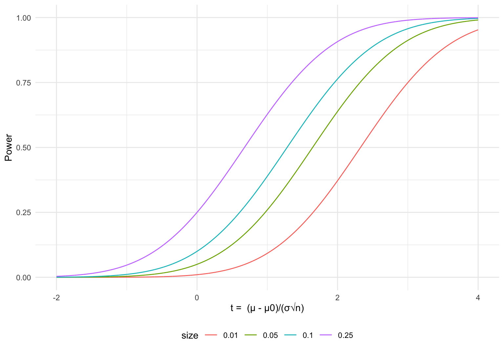
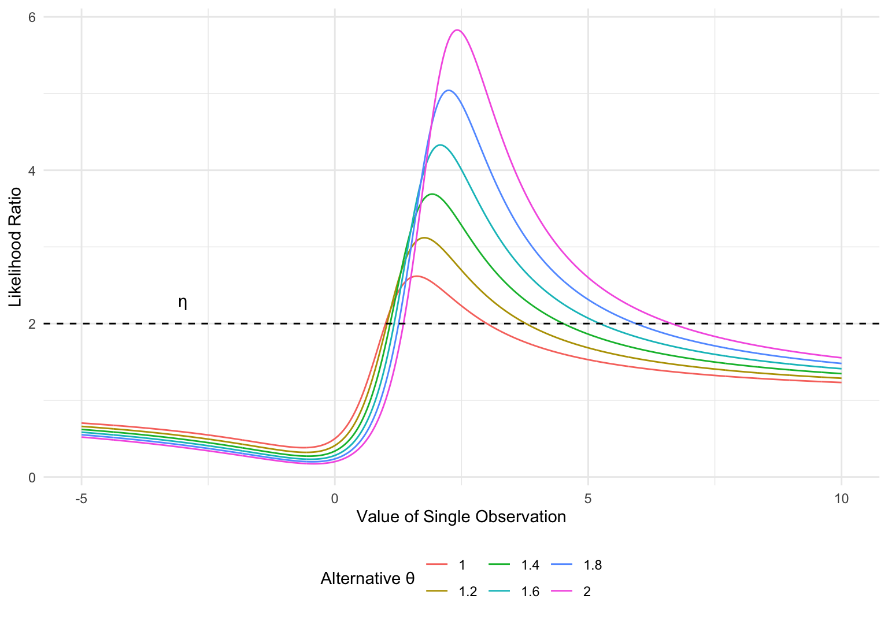

Until now, we’ve focused on point estimation, but that’s only half the picture when it comes to statistics. The other half is inference. How do we test hypotheses about the true \(\boldsymbol{\theta}_0\), and make inferences about the underling data generating process \(P_{\boldsymbol{\theta}_0}\in \mathcal P\)? An exhaustive treatment of inference is due to Romano and Lehmann (2005), while Bickel and Doksum (2015) offer an equally technical, yet briefer, treatment.
3.1 Decision Theory
In sec-est we defined a (point) estimator as a function from a sample space \(\mathcal X\) to the parameter space \(\Theta\). For some specified model \(\mathcal P\), we observe a realization of the random vector \(\mathbf{X}\sim P_{\boldsymbol{\theta}_0}\) for \(P_{\boldsymbol{\theta}_0}\in \mathcal P\), and then calculate an estimate \(\hat{\boldsymbol{\theta}}\). This process is a special case of a more general framework that unifies point estimation and hypothesis testing.
Consider an action space\(\mathcal A\). A decision process/rule\(\delta:\mathcal X\to \mathcal A\) prescribes an action given an observation of a random vector \(\mathbf{X}\) defined on \(\mathcal X\). The set of all decision rules is \(\mathcal D\). If the true data generating process is \(P_\boldsymbol{\theta}\in\mathcal P\), the cost of taking the action \(a\) is given by the loss function\(l(P_\boldsymbol{\theta}, a)\) where \(l:\mathcal P\times \mathcal A\to\mathbb R^+\). The loss associated with a decision rule is \(l(P_\boldsymbol{\theta}, \delta(\mathbf{X}))\). We cannot calculate this loss, as we do not know \(P_\boldsymbol{\theta}\). Instead we average the loss over \(\Theta\) (which is the same as over all \(P_\theta\) if \(\mathcal P\) is identified), giving a risk function\(R:\mathcal P\to \mathbb R^+\) defined as \(\text{E}\left[l(P_\boldsymbol{\theta}, \delta(\mathbf{X}))\right]\).
Example 3.1 (Point Estimation) In the case of Section sec-est, we took \(\mathcal A = \Theta\). Our space of actions where simply parameter values. We also defined a quadratic loss function which resulted in the risk function taking the form of the MSE of an estimator.
We can also define hypothesis testing using decision theory.
Definition 3.1 Let \(\mathcal X\) and \(\mathcal P\) be the sample space and model, respectively, and partition \(\mathcal P\) into \(\mathcal P_0\) and \(\mathcal P_1\).1 A test function is a decision rule defined on \(\mathcal A =\{\mathcal P_0,\mathcal P_1\}\) given as \[\delta(\mathbf{X}) = \begin{cases}\mathcal P_1 & T(\mathbf{X}) \in C \\ \mathcal P_0 & T(\mathbf{X})\notin C\end{cases}\] for some critical region\(C\subseteq \mathcal X\) and test statistic\(T:\mathcal X\to\mathcal X\).
Of the set of models \(\mathcal P_0\) and \(\mathcal P_1\), one is often easier to specify. For example, suppose \(\mathbf{X}= (X_1,\ldots,X_n)\) captures the effectiveness of a drug on a series of patients \(i=1,\ldots,n\), and \(\mathbf{X}\sim P_\boldsymbol{\theta}\in \mathcal P\). If we want to test whether this drug has an effect on patients’ health, then we want to partition \(\mathcal P\) into two groups: one group corresponding to the drug having no effect, and one where the drug has an effect. It’s much easier to specify the models which correspond to no effect than the models that correspond to the drug having an effect, as there are nearly infinite possibilities when it comes to the type and degree of effectiveness. The easier of the two groups to specify is traditionally denoted \(\mathcal P_0\), and is often associated with some well formed (null) hypothesis. This hypothesis is often written as \(H_0:P_\theta\in \mathcal P_0\). Our decision \(\delta(\mathbf{X})\) prescribed whether we fail to reject/reject\(H_0:P_\boldsymbol{\theta}\in\mathcal P_0\). If we reject of the hypothesis \(H_0:P_\boldsymbol{\theta}\in\mathcal P_0\), we conclude that \(P_\boldsymbol{\theta}\) belongs to the class of alternative\(H_1:P_\boldsymbol{\theta}\in \mathcal P_1\). We often think of \(H_0:P_\boldsymbol{\theta}\in\mathcal P_0\) as a statement we assume to be true, with the burden of proof being on \(H_1:P_\boldsymbol{\theta}\in \mathcal P_1\).
There exist two other popular ways of writing the decision problem associated with testing a hypothesis:
Assuming \(\mathcal P\) is identified and each \(P_\boldsymbol{\theta}\) is uniquely determined by a \(\boldsymbol{\theta}\in \Theta\), then we can partition \(\Theta\) into \(\Theta_1\) and \(\Theta_0\), and define \(\delta(\mathbf{X}) = \begin{cases}\Theta_1 & T(\mathbf{X}) \in C \\ \Theta_0 & T(\mathbf{X})\notin C\end{cases},\) where \(\mathcal A = \{\Theta_0, \Theta_1\}\) The hypothesis and class of alternatives are now written as \(H_0: \boldsymbol{\theta}\in\Theta_0\) and \(H_1: \boldsymbol{\theta}\in\Theta_1\), respectively.
We could define \(\mathcal A = \{0,1\}\), where \(1\) corresponds to rejecting \(H_0:P_\boldsymbol{\theta}\in\mathcal P_0\) and \(0\) failing to reject \(H_0:P_\boldsymbol{\theta}\in\mathcal P_0\).
Virtually all concrete examples of hypothesis test use notation similar to 1.
Example 3.2 (One-Sided Z-Test) Suppose \(\mathcal P\) is the collection of normal distributions with known variance \(\sigma^2\). This model is parameterized by mean \(\mu\). We want to test the following hypothesis: \[\begin{align*}
H_0:&\mu \le \mu_0\\
H_1:&\mu > \mu_0
\end{align*}\] In this case, the null hypothesis is often abbreviated as \(H_0: \mu = \mu_0\). Our hypothesis has partitions our parameter space \(\Theta = \mathbb R\) into \(\Theta_0 = (-\infty,\mu_0]\) and \(\Theta_1 = (\mu_0,\infty)\). Define a statistic \[T(\mathbf{X}) = \frac{\bar X - \mu_0}{\sigma/\sqrt n} = \frac{\frac{1}{n}\sum_{i=1}^nX_i - \mu_0}{\sigma/\sqrt n},\] and a critical region \(C = [1.645,\infty)\). Our decision rule \(\delta\) takes the form \[\delta(\mathbf{X}) = \begin{cases} (-\infty,\mu_0] & T(\mathbf{X}) < 1.645 \\ (\mu_0,\infty) & T(\mathbf{X}) \ge 1.645 \end{cases},\] which is written succinctly as \(\delta(\mathbf{X}) = I[T(\mathbf{X}) \ge 1.645 ]\) if we take \(\mathcal A = \{0,1\}\)
The binary nature of hypothesis testing makes defining a loss function quite simple. Our decision is either correct or incorrect. We can take the loss function to be 0 if we are correct, and 1 if we are incorrect. \[l(P_\theta, \delta(\mathbf{X}))=\begin{cases}1 & \delta(\mathbf{X}) = \mathcal P_0 \text{ and }P_\boldsymbol{\theta}\in\mathcal P_0 \\
0 & \delta(\mathbf{X}) = \mathcal P_1 \text{ and }P_\boldsymbol{\theta}\in\mathcal P_0\\
1 & \delta(\mathbf{X}) = \mathcal P_1 \text{ and }P_\boldsymbol{\theta}\in\mathcal P_1\\
0 & \delta(\mathbf{X}) = \mathcal P_0 \text{ and }P_\boldsymbol{\theta}\in\mathcal P_1\end{cases}\] The associated risk function becomes \[\begin{align*}
R(P_\boldsymbol{\theta}, \delta(\mathbf{X})) & = \text{E}\left[l(P_\theta, \delta(\mathbf{X}))\right] = l(P_\theta, \mathcal P_0)\cdot \Pr(\delta(\mathbf{X}) = \mathcal P_0) +l(P_\theta, \mathcal P_1)\cdot \Pr(\delta(\mathbf{X}) = \mathcal P_1).
\end{align*}\] We can simplify \(R(P_\boldsymbol{\theta}, \delta(\mathbf{X}))\) if we condition one either \(P_\theta \in \mathcal P_0\), or \(P_\theta \in \mathcal P_1\).
In both cases, the risk function is the probability of making an erroneous decision. These two types of errors are likely familiar.
Definition 3.2 Suppose we have a null hypothesis \(H_0:P_\boldsymbol{\theta}\in\mathcal P_0\). If \(P_\boldsymbol{\theta}\in \mathcal P_0\), but \(\delta(\mathbf{X}) = \mathcal P_1\) (the null hypothesis is true but we reject it), then we have committed a type I error. On the other hand, if \(P_\boldsymbol{\theta}\in \mathcal P_1\), but \(\delta(\mathbf{X}) = \mathcal P_0\) (the null hypothesis is false but we fail to reject it), then we have committed a type II error.
\(H_0\) True
\(H_0\) False
Reject \(H_0\)
type I error
correct decision
Fail to Reject \(H_0\)
correct decision
type II error
Considering we have two types of errors, which is more important? How do we construct optimal test? Neyman and Pearson (1933) provide a solution to these problems.
3.2 Size and Power
In order to assess tests, we will need to define probabilities related to type I and type II error.
Definition 3.3 The level\(\alpha \in [0,1]\) is a specified number such that \(\Pr(\text{type I error})>\alpha\) is unacceptable. In other words, \[\Pr(\delta(\mathbf{X}) = \mathcal P_1 \mid P_\boldsymbol{\theta}\in P_0) = \Pr(T(\mathbf{X})\in C \mid P_\boldsymbol{\theta}\in P_0) \le \alpha \ \ \forall P_\boldsymbol{\theta}\in \mathcal P_0.\]
Note that \(\alpha\) must hold for all \(P_\boldsymbol{\theta}\in \mathcal P_0\). A test may have a level of 0.01 for one \(P_{\boldsymbol{\theta}} \in \mathcal P_0\), but could have a level of 0.10 for \(P_{\boldsymbol{\theta}'} \in \mathcal P_0\). How then do we assess the “aggregate” level of a test across all \(\mathcal P_0\)? We will do so by considering the worst case scenario, and associating a test with the largest level \(\alpha\) possible, where the maximum is taken over all \(P_\boldsymbol{\theta}\in \mathcal P_0\). This will be known as the size of the test.
Definition 3.4 The size of a test defined with a statistic \(T(\mathbf{X})\) and critical value \(c\) is \[\alpha(\delta) = \sup_{P_\boldsymbol{\theta}\in \mathcal P_0} \Pr(T(\mathbf{X})\in C \mid P_\boldsymbol{\theta}\in \mathcal P_0).\]
The size is nothing more than the maximum probability of committing a type I error permitted by a test \(\delta\). If we want to avoid type I errors, we want \(\alpha\) to be very small. We also need to consider type II errors. Note that the probability of a type II error is
\[\Pr(\text{type II error}) = \Pr(T(\mathbf{X})\in C \mid P_\boldsymbol{\theta}\in\mathcal P_0) = 1 - \Pr(T(\mathbf{X})\in C \mid P_\boldsymbol{\theta}\in\mathcal P_1).\] A small chance of committing a type II error is the same as the probability of our test correctly identifying \(P_\boldsymbol{\theta}\in \mathcal P_1\) being high. This ability is the power of our test.
Definition 3.5 The power of a test defined with a statistic \(T(\mathbf{X})\) and critical region \(C\) is \[\beta(\delta, P_\theta) = \Pr(T(\mathbf{X}) \in C \mid P_\boldsymbol{\theta}).\]
The power function is simply the probability of rejecting the null hypothesis for any \(P_\boldsymbol{\theta}\in \mathcal P\). It can be thought of as a test power detect that \(H_1\) is true (\(H_0\) is false). Note that \(\beta(\delta, P_\theta)\) is redundant on the subset \(\mathcal P_0 \subset \mathcal P\). For any \(P_\theta\in \mathcal P_0\), \[ \beta(\delta, P_\theta\mid P_\theta\in \mathcal P_0) = \Pr(T(\mathbf{X}) \in C \mid P_\boldsymbol{\theta}\in \mathcal P_0) \le \sup_{P_\boldsymbol{\theta}\in P_0} \Pr(T(\mathbf{X})\in C \mid P_\boldsymbol{\theta}\in\mathcal P_0) = \alpha(\delta).\] By construction \(\beta(\delta, P_\theta) \le \alpha(\delta)\) on \(\mathcal P_0\), the power on \(\mathcal P_0\) doesn’t provide any new information. On the other hand it gives us another way of writing the size of a test: \[ \alpha(\delta) = \sup_{P_\theta \in\mathcal P_0} \beta(P_\boldsymbol{\theta}, \delta).\]We’re interested in the power of our test when \(\mathcal P\in P_1\), which corresponds to the probability of correctly detecting \(\mathcal P\in P_1\). \[\beta(\delta, P_\theta\mid P_\theta\in \mathcal P_1) = \Pr(T(\mathbf{X}) \in C \mid P_\boldsymbol{\theta}\in \mathcal P_1) = 1 - \Pr(\text{type II error})\] For this reason, you will very often see \(\beta\) only defined on \(\mathcal P_1\).
Example 3.3 (Z-Test) Reconsider Example exm-normtest. We have \[\begin{align*}
H_0:&\mu \le \mu_0\\
H_1:&\mu > \mu_0\\
T(\mathbf{X}) &= \frac{\bar X - \mu_0}{\sigma/\sqrt n }\\
\delta(\mathbf{X}) &= \begin{cases} (-\infty,\mu_0] & T(\mathbf{X}) < 1.645 \\ (\mu_0,\infty) & T(\mathbf{X}) \ge 1.645 \end{cases}
\end{align*}\]
Note that an equivalent test for our null hypothesis is \[\delta(\mathbf{X}) = \begin{cases} (-\infty,\mu_0] & \bar X < \mu_0 +1.645\left(\frac{\sigma}{\sqrt n}\right) \\ (\mu_0,\infty) & \bar X \ge \mu_0 +1.645\left(\frac{\sigma}{\sqrt n}\right) \end{cases}\] We can calculate the size of our test using the fact that \(T(\mathbf{X}) \sim N(0,1)\). Any such \(\mu\) can be written as \(\mu_0 + t(\sigma/\sqrt n)\) for \(t \le 0\). The level of a test for some \(\mu \in (-\infty,\mu_0]\) is \[\begin{align*}
\Pr(\bar X \ge \mu_0 +1.645(\sigma/\sqrt n)) &= \Pr(\bar X \ge [\mu - t(\sigma/\sqrt n)] +1.645(\sigma/\sqrt n)) & (\mu_0 =\mu - t(\sigma/\sqrt n))\\
&= \Pr(\bar X \ge \mu+ (1.645-t)(\sigma/\sqrt n))\\
& = \Pr \left(\frac{\bar X - \mu}{(\sigma/\sqrt n)} \ge 1.645 - t\right)\\
& = \Phi(-1.645 + t)
\end{align*}\] Before we take the supremum over all such probabilities, note that \(\mu \le \mu_0\) is equivalent to \(t\le 0\) where \(\mu = \mu_0 + t(\sigma/\sqrt n)\).2 Therefore the size of our test is \[\begin{align*}
\alpha &= \sup_{\mu \le \mu_0} \Pr(T(\mathbf{X})\in C \mid \mu < \mu_0)\\
& = \sup_{t \le 0} \Phi(-1.645 + t)
\end{align*}\]
Plotting this probability makes it clear that \(\alpha(\delta) \approx 0.05\), and the supremum is achieved when \(\mu = \mu_0\) (\(t=0\)).
Figure 3.1: The size of the test is given by the red dashed line corresponding to the supremum of the probability of rejecting a true null hypothesis.”
Now we can consider the power \(\beta(\mu)\). We’ve in fact already done nearly all the calculations required for this. Consider \(\mu = \mu_0 + t(\sigma/\sqrt n)\) for \(t\in \mathbb{R}\). If \(t \le 0\), then \(\mu \le \mu_0\), and the null hypothesis is true. If \(t > 0\), then \(\mu >\mu_0\) and the null hypothesis is false. The power \(\beta(\mu)\) is \(\Phi(-1.645 + t)\), but on the domain \(t\in \mathbb{R}\).
Show code which generates figure
tibble(t =seq(-2, 4, length =1000), group ="Power Curve") %>%mutate(y =pnorm(-1.645+ t)) %>%bind_rows(data.frame(t =c(-2,0), y =c(0,0), group ="H0 True, μ < μ0")) %>%bind_rows(data.frame(t =c(0,4), y =c(0,0), group ="H1 True, μ > μ0")) %>%ggplot(aes(t,y, color = group)) +geom_line() +theme_minimal() +labs("t = (μ - μ0)/(σ√n)", y ="Pr(Reject H0)" , color="") +scale_color_manual(values =c("red", "green", "black")) +theme(legend.position ="bottom")
Figure 3.2: Power curve of test.
To make this more concrete, we can perform a Monte Carlo simulation for fixed values of \(\mu_0\), \(\mu\), \(\sigma^2\), and \(n\). For all simulations, let’s fix \(\mu_0 = 2\), \(n = 100\) and \(\sigma^2 =1\). First, assume \(\mu = \mu_0 = 2\), and record \(\delta(\mathbf{X})\) for 100,000 simulations. In this case we should expect to make the correct decision (fail to reject the null hypothesis) about 95% of the time, as the size of our test is \(\alpha = 0.05\) which corresponds to the maximum level which occurs at \(\mu = \mu_0\).
# draw on realization of a test stat and report decisiondraw_test <-function(delta, test_stat, critical_region, mu_0, sigma, n, dist, dist_params, s){ X <-do.call(dist, append(n, dist_params)) output <-delta(test_stat, critical_region, X, mu_0, sigma) %>%mutate(iter = s)return(output)}# draw N realizations of a test statdraw_N_tests <-function(N, delta, test_stat, critical_region, mu_0, sigma, n, dist, dist_params){ output <-1:N %>%map_df(\(s) draw_test(delta, test_stat, critical_region, mu_0, sigma, n, dist, dist_params, s))return(output)}# define test stat for this particular exampletest_stat <-function(X, mu_0, sigma){ n <-length(X) output <- (mean(X)-mu_0)/(sigma/sqrt(n))return(output)}# Define decision function, supply critical region as a list of bounds, ex: list(c(-Inf, -3), c(0, 1), c(3, Inf))delta <-function(test_stat, critical_region, X, mu_0, sigma){ stat <-test_stat(X, mu_0, sigma)# determine if the test stat falls within any of the interval comprising the critical region decision <- critical_region %>%map_lgl(\(bounds) between(stat, bounds[1], bounds[2])) %>%sum() %>%as.logical() output <-tibble(stat = stat,decision = decision,H_0 = mu_0 )return(output)}results <-draw_N_tests(N =1e5,delta = delta, test_stat = test_stat, critical_region =list(c(1.645, Inf)), mu_0 =2, sigma =1, n =100, dist = rnorm, dist_params =list(mean =2, sd=1 ))results %>%group_by(decision) %>%count()
# A tibble: 2 × 2
# Groups: decision [2]
decision n
<lgl> <int>
1 FALSE 94986
2 TRUE 5014
mean(results$decision)
[1] 0.05014
This simulation calculated the power of our test given \(\mu\). Let’s define the power function using this simulation, and calculate the power for \(\mu\in[1.8,2.4]\)
# Approximate the power of a test for a given μ using N simulations, assume normal distributionpower <-function(mu, N, delta, test_stat, critical_region, mu_0, sigma, n){ output <-draw_N_tests(N, delta, test_stat, critical_region, mu_0, sigma, n, rnorm, list(mu, sigma)) %>%summarize(simulated_power =mean(decision),t = mu )return(output)}power_curve <-function(domain, N, delta, test_stat, critical_region, mu_0, sigma, n){ output <- domain %>%map_df(\(mu) power(mu, N, delta, test_stat, critical_region, mu_0, sigma, n))return(output)}results <-power_curve(domain =seq(1.8, 2.4, length =25), N =1e4,delta = delta, test_stat = test_stat, critical_region =list(c(1.645, Inf)), mu_0 =2, sigma =1, n =100)
We can plot this simulated power curve over the theoretical curve we calculated for a general \(\mu_0\) (see Figure fig-power).3
Show code which generates figure
df <- results %>%mutate(y = simulated_power,group ="Simulated Power", ) tibble(t =seq(1.8, 2.4, length =1000),group ="Power Curve") %>%mutate(y =pnorm(-1.645+ (t-2)/(1/10) )) %>%bind_rows(data.frame(t =c(1.8,2), y =c(0,0), group ="H0 True, μ < μ0")) %>%bind_rows(data.frame(t =c(2,2.4), y =c(0,0), group ="H1 True, μ > μ0")) %>%ggplot(aes(t, y, color = group)) +geom_line() +geom_point(data = df, size =1.5) +theme_minimal() +labs("True μ", "Pr(Reject H0)", color ="") +scale_color_manual(values =c("red", "green", "black", "blue")) +theme(legend.position ="bottom")
Figure 3.3: Simulated power function on the interval [1.8, 2.4] using 10,000 simulations for each point.
Our simulated probabilities are virtually identical to the theoretical probabilities calculated!
This example is special for a few reason. Note that we have: \[\begin{align*}
\alpha & = \sup_{\mu \le \mu_0}\beta(\mu) = \beta(\mu_0).
\end{align*}\] This equality holds because \(\beta\) is monotonically increasing: \[\begin{align*}
\frac{\partial}{\partial \mu} \beta(\mu) &= \frac{\partial }{\partial \mu}\Phi(-1.645 + t) \\
& = \frac{\partial t}{\partial \mu}\varphi(-1.645 - t) & (\varphi \text{ standard normal pdf})\\
& = \frac{\partial}{\partial \mu}\left(\frac{\mu - \mu_0}{\sigma/\sqrt n}\right)\varphi\left(-1.645 + \frac{\mu - \mu_0}{\sigma/\sqrt n}\right) &(t = (\mu - \mu_0)/(\sigma/\sqrt n))\\ & =
\frac{1}{\sigma/\sqrt n}\varphi\left(-1.645 + \frac{\mu - \mu_0}{\sigma/\sqrt n}\right) \\
& > 0 &(\varphi(\cdot) >0 , n >0, \sigma > 0).
\end{align*}\]
If the probability we reject the null hypothesis grows with \(\mu\in(-\infty,\mu_0]\), then of course the supremum of these probabilities is the probability at the boundary \(\mu_0\). Equivalently, \[ \alpha = \inf_{\mu_0 < \mu}\beta(\mu) = \inf_\mu \beta(\mu \mid \mu_0 < \mu) = \inf_\mu \beta(\mu \mid H_0 \text{ false}).\] Many people would define power \(\beta(\mu)\) only on \((\mu_0,\infty)\) (when \(H_0\) is false), so in this case the size is in the infimum of the power. Finally because \[\beta(\mu) = \Phi(-1.645 + t) = \Phi\left(-1.645 + \frac{\mu - \mu_0}{\sigma/\sqrt n}\right),\] we have \(\alpha = \beta(\mu_0) = \Phi(-1.645)\). This means if we desire a size of \(\alpha\), we can use the standard quantile function to calculate the critical value required – \(c = -\Phi^{-1}(\alpha)\). Just to reiterate, these nice properties hold because \(\beta\) is monotonic!
Our decision function \(\delta(\mathbf{X})\) only tells us whether we reject the null hypothesis or not. It doesn’t directly give us any information on how confident we should be in our decision, or by what degree we reject the null hypothesis. We can capture this by looking at the distribution of the test statistics \(T(\mathbf{X})\) in relation to the critical region \(C(\alpha)\) for size \(\alpha\). We can define the \(p\)-value, denoted \(p\), as \[p = \inf\{\alpha \mid T(\mathbf{X})\in C(\alpha)\}.\] The \(p-\)value is the minimum level of the test such that we still reject the null hypothesis (because \(T(\mathbf{X})\) is in the critical region). Suppose in the case of the one sided \(Z-\)test we had \(T(\mathbf{X}) = 2\). We reject the null hypothesis because \(T(\mathbf{X}) \ge 2\). We would also reject the null hypothesis for any size \(\alpha\) such that \(2 \ge -\Phi^{-1}(\alpha)\). Because \(-\Phi^{-1}\) is monotonic, \[p = \inf\{\alpha\mid 2 \ge -\Phi^{-1}(\alpha)\} = \{\alpha\mid 2= -\Phi^{-1}(\alpha)\} = \Phi(-2) \approx 0.02275.\] One important result which follows immediately from the definition of of \(p\): \[T(\mathbf{X}) \in C\iff \alpha(\delta) < p.\] We reject \(H_0\)if and only if the \(p-\)value associated with \(T(\mathbf{X})\) is less than the size of the test. One interpretation related to this is that the \(p-\)value tells you the degree to which you reject the null hypothesis. If \(p\approx0.02275\), not only do we reject the null hypothesis for \(\alpha(\delta) = 0.05\), but we also reject it for more stringent tests with smaller sizes.
So if we can pick \(\alpha\) by virtue of the critical value \(c\), then why don’t we simply pick \(\alpha\approx 0\). This would mean that we almost always fail to reject the null hypothesis, and in doing so we’re bound to fail to reject the null hypothesis even when it is false, increasing the probability of a type II error
Example 3.4 (Power vs. Size) Again consider \[\begin{align*}
H_0:&\mu \le \mu_0\\
H_1:&\mu > \mu_0
\end{align*}\] where \(X_i\overset{iid}{\sim}N(\mu,\sigma^2)\) for a known \(\sigma^2\), and \(\delta(\mathbf{X}) = 1[T(\mathbf{X}) \ge c]\) for some critical value \(c\). If we desire a test of size \(\alpha\) we set our critical value as \(c = -\Phi^{-1}(\alpha)\).
Figure 3.4: The relationship between critical value and size.
Define \(t = (\mu - \mu_0)/(\sigma/\sqrt n)\) to be the standardized distance between \(\mu_0\) and the true \(\mu\). The power of the test is \[\beta(\mu)= \Phi(- c + t) = \Phi(\Phi^{-1}(\alpha) + t),\] which is increasing in \(\alpha\): \[\begin{align*}
\frac{\partial \beta}{\partial \alpha} & = \frac{\partial \Phi^{-1}(\alpha)}{\partial \alpha} \varphi(\Phi^{-1}(\alpha) + t) \\
& = \frac{\varphi(\Phi^{-1}(\alpha) + t)}{\varphi(\Phi^{-1}(\alpha))} & (\text{inverse function theorem}) \\
& > 0 & (\varphi(\cdot) > 0).
\end{align*}\]
As we let \(\alpha \to 0\), we have \(\beta \to 0\).
Show code which generates figure
expand_grid(a =c(0.01, 0.05, 0.10, 0.25), t =-2000:4000/1000) %>%mutate(power =pnorm(-(-qnorm(a)) + t)) %>%ggplot(aes(t, power, color =as.factor(a))) +geom_line() +theme_minimal() +labs(x ="t = (μ - μ0)/(σ√n)", y ="Power", color ="size") +theme(legend.position ="bottom")

Figure 3.5: There is an inherent tradeoff between the power and size of a test, as small values of α result in less power.
So how do we select \(\alpha\)? Do we care more about type I error or type II error? Furthermore, how do we even construct test statistics? We can begin to answer this question with the guidance of Neyman and Pearson (1933).
3.3 Neyman-Pearson Lemma and UMP Tests
One of the key ideas presented proposed by Neyman and Pearson (1933) is that type II errors are more erroneous than their type I counterparts, so we should minimize the probability of committing a type II error subject to a predetermined test size \(\alpha\). If someone if getting tested for a disease, a false positive (type I) is much better than a false negative (type II). On the other hand, many would argue it is worse to sentence an innocent person to jail (type I error) than let a guilty person go free, so whether this assumption holds depends on the context of our test.
The Neyman-Pearson lemma solves this problem by maximizing the power of a test subject to a specified \(\alpha\): \[ \max_{\delta\in \mathcal D}\{\beta(\delta, P_\boldsymbol{\theta}) \mid \alpha(\delta) < \alpha\},\]fixing\(P_\boldsymbol{\theta}\). The test which solves this maximization problem may vary across \(P_\boldsymbol{\theta}\). As such, the Neyman-Pearson lemma solves our problem in the context of simplified hypotheses.
Definition 3.6 A null hypothesis \(H_0\) is simple if \(\mathcal P_0\) is a singleton, \(\mathcal P_0 = \{P_{\boldsymbol{\theta}_0}\}\). Similarly, an alternative hypothesis \(H_1\) is simple if \(\mathcal P_1 = \{P_{\boldsymbol{\theta}_1}\}\).
The Neyman-Pearson Lemma will only apply directly to hypotheses of the form: \[\begin{align*}
H_0:P_\boldsymbol{\theta}&= P_{\boldsymbol{\theta}_0}\\
H_1:P_\boldsymbol{\theta}&=P_{\boldsymbol{\theta}_1}
\end{align*}\] Note that for simple hypotheses \[ \alpha(\delta) = \sup_{P_\boldsymbol{\theta}\in \mathcal P_0} \Pr(T(\mathbf{X})\in C \mid P_\boldsymbol{\theta}\in \mathcal P_0) = \Pr(T(\mathbf{X})\in C \mid P_\boldsymbol{\theta}=P_{\boldsymbol{\theta}_0}) \]
Consider a test with simple hypotheses \(H_0:P_\boldsymbol{\theta}= P_{\boldsymbol{\theta}_0}\) and \(H_1:P_\boldsymbol{\theta}=P_{\boldsymbol{\theta}_1}\). If \(\delta(\mathbf{X})\) is test with size \(\alpha\) and defined as \[\delta(\mathbf{X})=\begin{cases} P_{\boldsymbol{\theta}_0} & \frac{f_{\mathbf{X}}(\mathbf{x}\mid \boldsymbol{\theta}_1)}{f_{\mathbf{X}}(\mathbf{x}\mid \boldsymbol{\theta}_0)} > \eta\\ P_{\boldsymbol{\theta}_1} & \frac{f_{\mathbf{X}}(\mathbf{x}\mid \boldsymbol{\theta}_1)}{f_{\mathbf{X}}(\mathbf{x}\mid \boldsymbol{\theta}_0)} < \eta\end{cases}\] for \(\eta > 0\), then \(\beta(\delta, \theta_1) \ge \beta(\delta', \theta_1)\) for all \(\delta' \in \mathcal D\) with a size less than or equal to \(\alpha\). In this case we refer to \(\delta(\mathbf{X})\) as the most powerful (MP) test for our hypotheses.
Proof. Let \(\delta(\mathbf{X})\) be some arbitrary decision rule in \(\mathcal D\) with size \(\alpha\), and let \(\delta'\in\mathcal D\) be some other decision rule with size less than or equal to \(\alpha\). \[\begin{align*}
\delta(\mathbf{X}) &= \begin{cases}P_{\boldsymbol{\theta}_1} & \mathbf{X}\in C \\ P_{\boldsymbol{\theta}_0} & \mathbf{X}\notin C\end{cases}\\
\delta'(\mathbf{X})& = \begin{cases}P_{\boldsymbol{\theta}_1} & \mathbf{X}\in C' \\ P_{\boldsymbol{\theta}_0} & \mathbf{X}\notin C'\end{cases}\\
\Pr(\delta'(\mathbf{X}) = P_{\boldsymbol{\theta}_1} \mid P_{\boldsymbol{\theta}} = P_{\boldsymbol{\theta}_0} ) &\le \alpha = \Pr(\delta(\mathbf{X}) = P_{\boldsymbol{\theta}_1} \mid P_{\boldsymbol{\theta}} = P_{\boldsymbol{\theta}_0} )
\end{align*}\] Without loss of generality, we’ve taken \(T(\mathbf{X}) = \mathbf{X}\).4 The only assumption we have made about our decision rules is, \[\begin{align}
& \Pr(\delta'(\mathbf{X}) = P_{\boldsymbol{\theta}_1} \mid P_{\boldsymbol{\theta}} = P_{\boldsymbol{\theta}_0} ) \le \alpha = \Pr(\delta(\mathbf{X}) = P_{\boldsymbol{\theta}_1} \mid P_{\boldsymbol{\theta}} = P_{\boldsymbol{\theta}_0} )\\
\implies & \Pr(\mathbf{X}\in C' \mid \boldsymbol{\theta}_0 ) \le \Pr(\mathbf{X}\in C \mid \boldsymbol{\theta}_0 ) (\#eq:npa).
\end{align}\]
In order to compare \(\delta\) and \(\delta'\), we’ll want to write their powers in term of the critical regions of both tests. We can write \(C\) in terms of the disjoint union of its intersection with the disjoint sets \(C'\) and \((C')^c\), as \(C'\) and \((C')^c\) partition the sample space \(\mathcal X\). We can also do the same with \(C'\) and the disjoint sets \(C\) and \(C^c\). \[\begin{align*}
C & = (C\cap C') \cup (C\cap (C')^c)\\
C' & = (C'\cap C) \cup (C'\cap C^c)
\end{align*}\] Accounting for these being disjoint unions, we have the following conditional probabilities: \[\begin{align}
\Pr(\mathbf{X}\in C\mid \boldsymbol{\theta}) & = \Pr(\mathbf{X}\in C\cap C' \mid \boldsymbol{\theta}) + \Pr(\mathbf{X}\in C\cap (C')^c \mid \boldsymbol{\theta})& \text{for }\boldsymbol{\theta}\in\{\boldsymbol{\theta}_0, \boldsymbol{\theta}_1\} (\#eq:npa2)\\
\Pr(\mathbf{X}\in C'\mid\boldsymbol{\theta}) & = \Pr(\mathbf{X}\in C'\cap C \mid \boldsymbol{\theta}) + \Pr(\mathbf{X}\in C'\cap C^c \mid \boldsymbol{\theta}) & \text{for }\boldsymbol{\theta}\in\{\boldsymbol{\theta}_0, \boldsymbol{\theta}_1\} (\#eq:npa3)
\end{align}\] We can use these two equations to rewrite Equation @ref(eq:npa). \[\begin{align}
& \Pr(\mathbf{X}\in C' \mid \boldsymbol{\theta}_0 ) \le \Pr(\mathbf{X}\in C \mid \boldsymbol{\theta}_0 )\\
\implies & \Pr(\mathbf{X}\in C'\cap C \mid \boldsymbol{\theta}_0) + \Pr(\mathbf{X}\in C'\cap C^c \mid \boldsymbol{\theta}_0) \le \Pr(\mathbf{X}\in C\cap C' \mid \boldsymbol{\theta}_0) + \Pr(\mathbf{X}\in C\cap (C')^c \mid \boldsymbol{\theta}_0)\\
\implies & \Pr(\mathbf{X}\in C'\cap C^c \mid \boldsymbol{\theta}_0) \le\Pr(\mathbf{X}\in C\cap (C')^c \mid \boldsymbol{\theta}_0) (\#eq:npa4)
\end{align}\] Similarly, \[\begin{align}
\beta(\delta,\boldsymbol{\theta}_1) & = \Pr(\mathbf{X}\in C \mid \theta_1) &(\text{definition of }\beta) (\#eq:npa5)\\
& = \Pr(\mathbf{X}\in C\cap C' \mid \boldsymbol{\theta}_1) + \Pr(\mathbf{X}\in C\cap (C')^c \mid \boldsymbol{\theta}_1) & (\text{Equation }(4.2))\\
\beta(\delta',\boldsymbol{\theta}_1) & =\Pr(\mathbf{X}\in C'\cap C \mid \boldsymbol{\theta}_1) + \Pr(\mathbf{X}\in C'\cap C^c \mid \boldsymbol{\theta}_1) & (\text{Equation }(4.3)) (\#eq:npa6)
\end{align}\]
We want to construct \(\delta(\mathbf{X})\) such that \[\begin{align*}
&\beta(\delta,\boldsymbol{\theta}_1) \ge\beta(\delta',\boldsymbol{\theta}_1),\\
\implies&\Pr(\mathbf{X}\in C\cap C' \mid \boldsymbol{\theta}_1) + \Pr(\mathbf{X}\in C\cap (C')^c \mid \boldsymbol{\theta}_1) \le \Pr(\mathbf{X}\in C'\cap C \mid \boldsymbol{\theta}_1) + \Pr(\mathbf{X}\in C'\cap C^c \mid \boldsymbol{\theta}_1) &(\text{Equation }(4.5)\text{ and }(4.6)),\\
\implies &\Pr(\mathbf{X}\in C\cap (C')^c \mid \boldsymbol{\theta}_1) \ge \Pr(\mathbf{X}\in C'\cap C^c \mid \boldsymbol{\theta}_1),\\
\implies & \int 1[\mathbf{X}\in C\cap (C')^c]\ dF_\mathbf{X}(\mathbf{x}\mid \boldsymbol{\theta}_1) \ge \int 1[\mathbf{X}\in C'\cap C^c]\ dF_\mathbf{X}(\mathbf{x}\mid \boldsymbol{\theta}_1),\\
\implies & \int_{C\cap (C')^c} f_\mathbf{X}(\mathbf{x}\mid \boldsymbol{\theta}_1) \ d\mathbf{x}\ge \int_{C'\cap C^c} f_\mathbf{X}(\mathbf{x}\mid \boldsymbol{\theta}_1) \ d\mathbf{x}
\end{align*}\] In other words, we need to define \(C\) such that \[ \int_{C\cap (C')^c} f_\mathbf{X}(\mathbf{x}\mid \boldsymbol{\theta}_1)\stackrel{?}{\ge}\int_{C'\cap C^c} f_\mathbf{X}(\mathbf{x}\mid \boldsymbol{\theta}_1) \ d\mathbf{x}\] using the fact that \[\begin{align*}
\int_{C'\cap C^c }f_\mathbf{X}(\mathbf{x}\mid \boldsymbol{\theta}_0)\ d\mathbf{x}& \le \int_{C\cap (C')^c }f_\mathbf{X}(\mathbf{x}\mid \boldsymbol{\theta}_0)\ d\mathbf{x}& (\text{Equation (4.4)}).
\end{align*}\] We can write the left hand side of this known inequality as \[\begin{align*}
\int_{C'\cap C^c }f_\mathbf{X}(\mathbf{x}\mid \boldsymbol{\theta}_0)\ d\mathbf{x}= \int_{C'\cap C^c}f_\mathbf{X}(\mathbf{x}\mid \boldsymbol{\theta}_1) \cdot \frac{f_\mathbf{X}(\mathbf{x}\mid \boldsymbol{\theta}_0)}{f_\mathbf{X}(\mathbf{x}\mid \boldsymbol{\theta}_1)}\ d\mathbf{x}.
\end{align*}\] We want to somehow relate this to the integral of \(f_\mathbf{X}(\mathbf{x}\mid\boldsymbol{\theta}_1)\), but in general cannot “remove” \(f_\mathbf{X}(\mathbf{x}\mid\boldsymbol{\theta}_0)/f_\mathbf{X}(\mathbf{x}\mid\boldsymbol{\theta}_1)\) from the integrand without an assumption about \(f_\mathbf{X}(\mathbf{x}\mid\boldsymbol{\theta}_0)/f_\mathbf{X}(\mathbf{x}\mid\boldsymbol{\theta}_1)\). Namely, if we assume \(f_\mathbf{X}(\mathbf{x}\mid\boldsymbol{\theta}_0)/f_\mathbf{X}(\mathbf{x}\mid\boldsymbol{\theta}_1) >\eta^{-1}\) on \(C'\cap C^c\) for some constant \(\eta\),5 we have \[\begin{align*}
\int_{C'\cap C^c }f_\mathbf{X}(\mathbf{x}\mid \boldsymbol{\theta}_0)\ d\mathbf{x}= \int_{C'\cap C^c }f_\mathbf{X}(\mathbf{x}\mid \boldsymbol{\theta}_1) \cdot \frac{f_\mathbf{X}(\mathbf{x}\mid \boldsymbol{\theta}_0)}{f_\mathbf{X}(\mathbf{x}\mid \boldsymbol{\theta}_1)}\ d\mathbf{x}
\ge \eta^{-1}\int_{C'\cap C^c}f_\mathbf{X}(\mathbf{x}\mid \boldsymbol{\theta}_0) \ d\mathbf{x}.
\end{align*}\] Similarly, the right hand side of Equation 4.4 in integral form can be written as \[\int_{C\cap (C')^c }f_\mathbf{X}(\mathbf{x}\mid \boldsymbol{\theta}_0)\ d\mathbf{x}= \int_{C\cap (C')^c }f_\mathbf{X}(\mathbf{x}\mid \boldsymbol{\theta}_1) \cdot \frac{f_\mathbf{X}(\mathbf{x}\mid \boldsymbol{\theta}_0)}{f_\mathbf{X}(\mathbf{x}\mid \boldsymbol{\theta}_1)}\ d\mathbf{x}\le \eta^{-1}\int_{C\cap (C')^c }f_\mathbf{X}(\mathbf{x}\mid \boldsymbol{\theta}_0) \ d\mathbf{x},\] assuming \(f_\mathbf{X}(\mathbf{x}\mid\boldsymbol{\theta}_0)/f_\mathbf{X}(\mathbf{x}\mid\boldsymbol{\theta}_1) < \eta^{-1}\) on \(C\cap (C')^c\). Therefore, \[\begin{align*}
\int_{C\cap (C')^c} f_\mathbf{X}(\mathbf{x}\mid \boldsymbol{\theta}_1)\ d\mathbf{x}& = \int_{C\cap (C')^c}f_\mathbf{X}(\mathbf{x}\mid \boldsymbol{\theta}_1) \cdot \frac{f_\mathbf{X}(\mathbf{x}\mid \boldsymbol{\theta}_0)}{f_\mathbf{X}(\mathbf{x}\mid \boldsymbol{\theta}_1)}\ d\mathbf{x}\\
& \ge \eta^{-1}\int_{C\cap (C')^c}f_\mathbf{X}(\mathbf{x}\mid \boldsymbol{\theta}_0)\ d\mathbf{x}& (f_\mathbf{X}(\mathbf{x}\mid\boldsymbol{\theta}_0)/f_\mathbf{X}(\mathbf{x}\mid\boldsymbol{\theta}_1) < \eta^{-1} \text{ on } C\cap (C')^c)\\
& =\eta^{-1}\Pr(\mathbf{X}\in C\cap (C')^c \mid \boldsymbol{\theta}_0)\\
& \ge \eta^{-1}\Pr(\mathbf{X}\in C'\cap C^c \mid \boldsymbol{\theta}_0) & (\text{Equation }(4.4))\\
& =\eta^{-1}\int_{ C'\cap C^c}f_\mathbf{X}(\mathbf{x}\mid \boldsymbol{\theta}_0)\ d\mathbf{x}\\
& \ge \int_{C'\cap C^c }f_\mathbf{X}(\mathbf{x}\mid \boldsymbol{\theta}_1) \cdot \frac{f_\mathbf{X}(\mathbf{x}\mid \boldsymbol{\theta}_0)}{f_\mathbf{X}(\mathbf{x}\mid \boldsymbol{\theta}_1)}\ d\mathbf{x}& (f_\mathbf{X}(\mathbf{x}\mid\boldsymbol{\theta}_0)/f_\mathbf{X}(\mathbf{x}\mid\boldsymbol{\theta}_1) > \eta^{-1} \text{ on } C'\cap C^c)\\
& = \int_{C'\cap C^c} f_\mathbf{X}(\mathbf{x}\mid \boldsymbol{\theta}_1)\ d\mathbf{x},
\end{align*}\] which is the desired result for a fixed \(\delta'\). If we extend \(f_\mathbf{X}(\mathbf{x}\mid\boldsymbol{\theta}_0)/f_\mathbf{X}(\mathbf{x}\mid\boldsymbol{\theta}_1) > \eta^{-1}\) to all of \(C^c\) and \(f_\mathbf{X}(\mathbf{x}\mid\boldsymbol{\theta}_0)/f_\mathbf{X}(\mathbf{x}\mid\boldsymbol{\theta}_1) < \eta^{-1}\) to all of \(C\), then this will hold for all\(\delta'\in \mathcal D\) (with a size of at least \(\alpha\), otherwise Equation @ref(eq:npa4) needn’t hold). What then is the explicit form of \(\delta(\mathbf{X})\)? It is defined using the bounds which allowed us to establish the desired inequality using properties of integrals. The critical region is, \[\begin{align*}
C &= \left\{\mathbf{x}\ \bigg|\ \frac{f_{\mathbf{X}}(\mathbf{x}\mid \boldsymbol{\theta}_1)}{f_{\mathbf{X}}(\mathbf{x}\mid \boldsymbol{\theta}_0)} > \eta \right\}
\end{align*}\] and \(\delta(\mathbf{X}) = 1[\mathbf{x}\in C]\).
Before discussing the intuition behind Theorem @ref(thm:NPlemma), here are some technical points:
In the event \(f_{\mathbf{X}}(\mathbf{x}\mid \boldsymbol{\theta}_1)/f_{\mathbf{X}}(\mathbf{x}\mid \boldsymbol{\theta}_0) = \eta\), then it doesn’t matter if \(\delta(\mathbf{X})\) rejects the null hypothesis or not.6
A more general version of the result can be found in Bickel and Doksum (2015) or Romano and Lehmann (2005), and concerns non-deterministic decision rules which the reject the null hypothesis with some probability when \(T(\mathbf{X}) \in C\) (instead of with probability one)
The result says nothing about the uniqueness of the MP test.
Theorem @ref(thm:NPlemma) tells us that for simple hypotheses, our test statistic should be \(T(\mathbf{X}) = \frac{f_\mathbf{X}(\mathbf{x}\mid\boldsymbol{\theta}_1)}{f_\mathbf{X}(\mathbf{x}\mid\boldsymbol{\theta}_0)}\), which makes a fair bit of sense. If we observe \(\mathbf{x}\), then \(f_\mathbf{X}(\mathbf{x}\mid\boldsymbol{\theta}_1)\) and \(f_\mathbf{X}(\mathbf{x}\mid\boldsymbol{\theta}_0)\) are the probabilities we observe \(\mathbf{x}\) given \(\boldsymbol{\theta}_1\) and \(\boldsymbol{\theta}_0\), respectively. In the event that \(f_\mathbf{X}(\mathbf{x}\mid\boldsymbol{\theta}_1) \gg f_\mathbf{X}(\mathbf{x}\mid\boldsymbol{\theta}_0)\), it’s so likely that \(\boldsymbol{\theta}= \boldsymbol{\theta}_1\), that we should reject the null hypothesis. In other words, we reject the null hypothesis is the ratio of these probabilities is high enough. This ratio actually pops up elsewhere in statistics and has its own name.
Definition 3.7 The likelihood ratio associated with densities \(f_\mathbf{X}(\mathbf{x}\mid\boldsymbol{\theta}_1)\) and \(f_\mathbf{X}(\mathbf{x}\mid\boldsymbol{\theta}_0)\) is defined as \[ L(\boldsymbol{\theta}_1, \boldsymbol{\theta}_0 \mid \mathbf{x}) = \frac{f_\mathbf{X}(\mathbf{x}\mid\boldsymbol{\theta}_1)}{f_\mathbf{X}(\mathbf{x}\mid\boldsymbol{\theta}_0)}.\]
So how large does this ratio need to be such that we reject the null hypothesis? The Neyman-Pearson Lemma seems a bit vague here, as it only says that it needs to exceed some\(\eta\). The proof gives us some mathematical context on \(\eta\), but also fails to explicitly define it, so can we really pick any constant? Of course not, because we assume that \(\delta(\mathbf{X})\) has size \(\alpha\). The actual value \(\eta\) is implicitly given when we assume the size of \(\delta(\mathbf{X})\), but we can define is explicitly. \[\begin{align*}
& \alpha = \Pr(T(\mathbf{X}) > \eta \mid P_\boldsymbol{\theta}= P_{\boldsymbol{\theta}_0})\\
\implies & \alpha = 1 - \Pr(T(\mathbf{X}) \le \eta \mid P_\boldsymbol{\theta}= P_{\boldsymbol{\theta}_0})\\
\implies & \alpha = 1 - F_{T(\mathbf{X})}(\eta \mid P_{\boldsymbol{\theta}_0})\\
\implies & \eta = F_{T(\mathbf{X})}^{-1}(1-\alpha \mid P_{\boldsymbol{\theta}_0})
\end{align*}\]
Let’s see the Neyman-Pearson Lemma in action.
Example 3.5 Suppose \(X_i \overset{iid}{\sim}N(\mu,\sigma^2)\) for a known \(\sigma^2\), and \[\begin{align*}
H_0:\mu=\mu_0,\\
H_1:\mu=\mu_1,
\end{align*}\] where \(\mu_1 > \mu_0\). Our likelihood ratio is \[\begin{align*}
\frac{f_\mathbf{X}(\mathbf{x}\mid\mu_1)}{f_\mathbf{X}(\mathbf{x}\mid\mu_0)} & = \frac{\prod_{i=1}^nf_{X_i}(x\mid\mu_1)}{\prod_{i=1}^nf_{X_i}(x\mid\mu_0)} \\
& = \frac{\prod_{i=1}^n\frac{1}{\sqrt{2\pi\sigma^2}}\exp\left[-\frac{(x-\mu_1)^2}{2\sigma^2}\right]}{\prod_{i=1}^n\frac{1}{\sqrt{2\pi\sigma^2}}\exp\left[-\frac{(x-\mu_0)^2}{2\sigma^2}\right]}\\
& = \frac{\prod_{i=1}^n\exp\left[-\frac{(x-\mu_1)^2}{2\sigma^2}\right]}{\prod_{i=1}^n\exp\left[-\frac{(x-\mu_0)^2}{2\sigma^2}\right]}\\
& = \frac{\exp\left[-\sum_{i=1}^n\frac{(x-\mu_1)^2}{2\sigma^2}\right]}{\exp\left[-\sum_{i=1}^n\frac{(x-\mu_0)^2}{2\sigma^2}\right]}\\
& = \exp\left[\frac{1}{2\sigma^2}\left(\sum_{i=1}^n(x_i - \mu_0)^2 - \sum_{i=1}^n(x_i - \mu_1)^2\right)\right]\\
& = \exp\left[\frac{1}{2\sigma^2}\sum_{i=1}^n(x_i^2 - x_i\mu_0 + \mu_0^2 - x_i^2 - x_i\mu_1 + \mu_1^2)\right]\\
& = \exp\left[\frac{1}{2\sigma^2}[n(\mu_0^2 - \mu_1^2) - 2n\bar x(\mu_0 - \mu_1)]\right].
\end{align*}\] The Neyman-Pearson lemma says the critical region of our test should take the form \[\begin{align*}
C & = \left\{\mathbf{x}\ \Big| \ \exp\left[\frac{1}{2\sigma^2}[n(\mu_0^2 - \mu_1^2) - 2n\bar x(\mu_0 - \mu_1)]\right] > \eta\right\}\\
& = \left\{\mathbf{x}\ \Big| \ \bar x > \frac{\mu_0+\mu_1}{2} - \frac{\sigma^2 \ln \eta}{n(\mu_0-\mu_1)}\right\}
\end{align*}\] …okay so this looks like a monstrosity. Let’s define the constant \(\eta^*\) to as \[\eta^* = \frac{\mu_0+\mu_1}{2} - \frac{\sigma^2 \ln \eta}{n(\mu_0-\mu_1)},\] as to give us \[ C = \{\mathbf{x}\mid \bar x > \eta^*\}.\] If we want our test to have a size of \(\alpha\), we let \(\eta^* = \mu_0 +\Phi^{-1}(1-\alpha) \frac{\sigma}{\sqrt n}\), which is the same one sided test we’ve been exploring in this section! Therefore the most powerful test for \(H_0 : \mu = \mu_1\) versus \(H_1 : \mu = \mu_1\) is:
These decision rules are equivalent to the likelihood ratio test given by the Neyman-Pearson lemma. If we want to keep with the spirit of the lemma and insist on using the test statistic \(T(\mathbf{X}) = \frac{f_\mathbf{X}(\mathbf{x}\mid\mu_1)}{f_\mathbf{X}(\mathbf{x}\mid\mu_0)}\), we need to solve for \(\eta\).
To confirm these three test are equivalent, let’s simulate the decision rule for \(H_0:\mu = 0\) versus \(H_1: \mu = 3\), where \(\sigma^2 = 1\), \(n = 100\), \(\alpha = 0.05\), and null hypothesis \(\mu = 0\) is true. Not only should the tests agree for each simulation, but we should also see that we reject the null hypothesis (commit a type I error) with probability \(\alpha\).
sample_mean_test <-function(X, mu0, alpha, sigma){ n <-length(X) test_stat <-function(X) {mean(X) }test_stat(X) > mu0 +qnorm(1-alpha)*(sigma/sqrt(n)) }z_score_test <-function(X, mu0, alpha, sigma){ n <-length(X) test_stat <-function(X) { (mean(X) - mu0)/(sigma/sqrt(n)) }test_stat(X) >qnorm(1-alpha) }likelihood_ratio_test <-function(X, mu0, mu1, alpha, sigma){ n <-length(X) test_stat <-function(X) {prod(dnorm(X, mu1, sigma)) /prod(dnorm(X, mu0, sigma)) } eta <-exp(-(mu0 +qnorm(1-alpha)*(sigma/sqrt(n)) - (mu1+mu0)/2)*((n*(mu0-mu1)) /(sigma^2)))test_stat(X) > eta}iter <-function(mu0, mu1, alpha, sigma, n, dist, dist_params, s){ X <-do.call(dist, append(n, dist_params)) output <-tibble(smt =sample_mean_test(X, mu0, alpha, sigma),zst =z_score_test(X, mu0, alpha, sigma),lrt =likelihood_ratio_test(X, mu0, mu1, alpha, sigma),iter_num = s )return(output)}sim <-function(N, mu0, mu1, alpha, sigma, n, dist, dist_params){ output <-1:N %>%map( iter, mu0 = mu0, mu1 = mu1, alpha = alpha, sigma = sigma, n = n, dist = dist, dist_params = dist_params ) %>%bind_rows()return(output)}results <-sim(1e5, 0, 3, 0.05, 1, 100, rnorm, list(0,1))#If all decisions were the same, this should be 1results %>%summarize(prob =mean(smt == zst & zst == lrt))
# A tibble: 1 × 1
prob
<dbl>
1 1
#Check number of rejections of the true null hypothesismean(results$smt)
[1] 0.05058
This example is particularly special, because we were able to write the most powerful test in a form that did not depend on \(\mu_1\): \[\delta(\mathbf{X}) =\begin{cases}\mu_0 & \frac{\bar X - \mu_0}{\sigma/\sqrt n} > \Phi^{-1}(1-\alpha) \\ \mu_1 & \frac{\bar X - \mu_0}{\sigma/\sqrt n} < \Phi^{-1}(1-\alpha) \end{cases}\] The test statistic and critical region do not depend on \(\mu_1\), so this test is the most powerful test for any alternative \(\mu_1 > \mu_0\). This means that this test is the most powerful test for any hypothesis of the form \(H_0:\mu = \mu_0\) versus \(\mu \ge \mu_0\). In fact, we can even go one step further – this test is the most powerful test for any hypotheses of the form \(H_0:\mu\le \mu_0\) versus \(H_1:\mu > \mu_0\)! Consider testing \(H_0:\mu = \mu_0\) versus \(H_1:\mu \ge \mu_0\), and testing the modified hypothesis \(H_0':\mu = \mu_0'\) versus \(H_1':\mu \ge \mu_0'\), where \(\mu_0'<\mu_0\). All we’ve done is slightly tweaked \(H_0 : \mu \le \mu_0\) by lowering the value of \(\mu_0'\). What happens if we attempt to test \(H_0'\) versus \(H_1'\) using the test statistic for \(\delta(\mathbf{X})\) (as given above) instead of the test statistic of its modified counterpart \(\delta'(\mathbf{X})\)? \[\begin{align*}
T(\mathbf{X})&=\frac{\bar X - \mu_0}{\sigma/\sqrt n}\\
T'(\mathbf{X})&=\frac{\bar X - \mu_0'}{\sigma/\sqrt n}
\end{align*}\] Under \(H_0'\): \[\begin{align*}
T'(\mathbf{X}) & \sim N(0,1)\\
T(\mathbf{X}) & = \frac{\bar X - \mu_0'}{\sigma/\sqrt n} + \frac{\mu_0' - \mu_0}{\sigma/\sqrt n} = T'(\mathbf{X}) + \frac{\mu_0' - \mu_0}{\sigma/\sqrt n} \sim N\left(\frac{\mu_0' - \mu_0}{\sigma/\sqrt n}, 1\right)
\end{align*}\]
If we calculate the power of \(\delta'\), we find that \[\begin{align*}
c' & = -\Phi^{-1}(\alpha),\\
c & = -\left[\Phi^{-1}\left(\alpha\right) - \frac{\mu_0' - \mu_0}{\sigma/\sqrt n}\right] = \frac{\mu_0' - \mu_0}{\sigma/\sqrt n}- \Phi^{-1}(\alpha).
\end{align*}\] The power of the tests are \[\begin{align*}
\beta(\delta, \mu) & = \Pr\left(T(\mathbf{X}) > \frac{\mu_0' - \mu_0}{\sigma/\sqrt n}- \Phi^{-1}(\alpha)\ \bigg| \ \mu\right)\\
& = \Pr\left(T(\mathbf{X}) - \frac{\mu_0' - \mu_0}{\sigma/\sqrt n} > \Phi^{-1}(\alpha)\ \bigg| \ \mu\right)\\
& = \Pr\left(T'(\mathbf{X}) > - \Phi^{-1}(\alpha) \mid \mu\right)\\
& = \beta(\delta', \mu).
\end{align*}\] Both tests have the same power, and same size, so \(\delta\) is the most powerful test for any \(H_0':\mu \neq \mu_0'\) versus \(H_1':\mu > \mu_0'\) where \(\mu_0'<\mu_0\). We can confirm this with simulations:
curve <-power_curve(domain =seq(2.6, 3.3, length =10), ## update to 40N =1e3, ## update to 1e4delta = delta, test_stat = test_stat,critical_region =list(c(-qnorm(0.05), Inf)),mu_0 =2.7,sigma =1, n =100) %>%mutate(decision ="δ")curve_prime <-power_curve(domain =seq(2.6, 3.3, length =10), ## update to 40N =1e3 , ## update to 1e4delta = delta, test_stat = test_stat,critical_region =list(c((2.7-3)/(1/sqrt(100)) -qnorm(0.05), Inf)),mu_0 =3,sigma =1, n =100) %>%mutate(decision ="δ'")
Show code which generates figure
curve %>%bind_rows(curve_prime) %>%ggplot(aes(t, simulated_power, color = decision)) +geom_line() +scale_color_manual(values =c("blue", "red")) +theme_minimal() +labs(x ="μ", y ="Simulated Power", color ="") +theme(legend.position ="bottom")
Figure 3.6: Simulated power curve for the two null hypotheses
This will hold for all hypotheses \(H_1':\mu\le \mu_0'\) where \(\mu_0'\), as \(\mu_0'\) was arbitrary. This means that if we are testing \(H_0:\mu \le \mu_0\) versus \(H_1:\mu>\mu_0\), the most powerful test is the z-test, regardless of the specified \(\mu_0\) or alternative \(\mu\). Because we pick the test that was derived using \(H_0:\mu = \mu_0\), we often write \[\begin{align*}
H_0&:\mu=\mu_0,\\
H_1&:\mu>\mu_0.
\end{align*}\]
While this example started as an application of the Neyman-Pearson lemma, it took several interesting turns. Firstly, while the Neyman-Pearson lemma gives the most powerful test in terms of the likelihood ratio, we were able to find several equivalent tests. Secondly, the most powerful test for the simple hypothesis \(H_0: \mu = \mu_0\) versus \(H_1:\mu = \mu_1\) (where \(\mu_1 > \mu_0\)), as given by the Neyman-Pearson lemma, did not depend on \(\mu_1\). This meant it was the most powerful test for \(H_0: \mu = \mu_0\) versus \(H_1:\mu > \mu_0\). It is uniform in its status as the most powerful test.
Definition 3.8 A decision rule \(\delta(\mathbf{X})\), with size \(\alpha\), is the uniformly most powerful (UMP) test for \(H_0: P_{\boldsymbol{\theta}}\in\mathcal P_0\) versus \(H_1: P_{\boldsymbol{\theta}}\in\mathcal P_1\) if \[ \beta(\delta,P_\boldsymbol{\theta}) \ge \beta(\delta',P_\boldsymbol{\theta}) \ \ \ \text{for all }P_\boldsymbol{\theta}\in\mathcal P_1\] for all other decision rules \(\delta'\) with a size of at least \(\alpha\).
We also were able to establish that the UMP test for \(H_0: \mu = \mu_0\) versus \(H_1:\mu > \mu_0\), is the UMP for any test of the form \(H_0:\mu \le \mu_0\) versus \(H_1:\mu >\mu_0\). Despite the Neyman-Pearson lemma only holding for simple hypotheses, we were able to derive the optimal (in the sense of power) test for composite hypotheses in this case. Is this always the case, or was there something special at work? Let’s look at another example to get a better lay of the land.
Example 3.6 Suppose we draw a single observation of \(X\) where \(X\sim \text{Cauchy}(\theta,1)\) and want to test \(H_0:\theta = 0\) versus \(H_1:\theta = \theta_1\). In this case \[f_X(x\mid\theta)= \frac{1}{\pi(1+(x-\theta)^2)},\] so the Neyman-Pearson lemma tells us the most powerful test is \[\delta(X) = \begin{cases}0 & \frac{1+x^2}{1+(x-\theta_1)^2} < \eta\\ \theta_1 & \frac{1+x^2}{1+(x-\theta_1)^2} > \eta\end{cases}.\] To get a better sense of what the critical region for this test is, let’s plot the likelihood ratio.
Show code which generates figure
expand_grid(x =seq(-5, 10, length =3000), alt_par =c(1, 1.2, 1.4,1.6,1.8,2)) %>%mutate(y =dcauchy(x, alt_par, 1)/dcauchy(x, 0, 1)) %>%ggplot(aes(x,y, color =as.factor(alt_par))) +geom_line() +ylab("Likelihood Ratio") +xlab("Value of Single Observation") +theme_minimal() +geom_hline(yintercept =2, color ="black", linetype ="dashed") +labs(color ="Alternative θ") +theme(legend.position ="bottom") +annotate("text", x =-3, y =2.3, label ="η")

Figure 3.7: The liklihood ratio associated with the Cauchy distribution. The liklihood ratio test tells us to reject the null hypothesis whenever the ratio exceeds η
Our rejection region will be a bounded interval. After some quick algebra, we find that the critical region is \[C = \left\{x\ \Bigg| \ \frac{\eta\theta_1-\sqrt{\eta\theta_1^2+2\eta-\eta^2-1}}{\eta-1}< x <\frac{\eta\theta_1+\sqrt{\eta\theta_1^2+2\eta-\eta^2-1}}{\eta-1} \right\}.\] Fixing \(\eta\) to be some value, say \(\eta = 2\), we can plot these critical regions across values of \(\theta_1\).
Show code which generates figure
eta <-2expand_grid(par =c(1,1.2,1.4,1.6,1.8,2)) %>%mutate(lower = (eta*par -sqrt(eta*par^2+2*eta-eta^2-1)) / (eta -1),upper = (eta*par +sqrt(eta*par^2+2*eta-eta^2-1)) / (eta -1),val = (upper + lower)/2 ) %>%ggplot(aes(par, val)) +geom_linerange(aes(ymin = lower, ymax = upper)) +theme_minimal() +labs(x ="Alternative θ", y ="Critical Region")
Figure 3.8: The critical regions associated with the liklihood ratio test for varying alternatives. None of the critial regions are subsets of others.
The upper and lower bounds depend on the alternate \(\theta_1\) so the most powerful test for one choice of \(\theta_1\) fails to be the most powerful test for another \(\theta_1'\).
So what makes this different from the example with the normal distribution? Fixing \(H_0:\mu_0 = 0\), \(\sigma^2 = 1\), and \(n=1\), Let’s see if the likelihood ratio for normally distributed data has any clues.
Show code which generates figure
expand_grid(x =seq(0, 3, length =3000), alt_par =c(1, 1.2, 1.4,1.6,1.8,2)) %>%mutate(y =dnorm(x, alt_par, 1)/dnorm(x, 0, 1)) %>%ggplot(aes(x,y, color =as.factor(alt_par))) +geom_line() +theme_minimal() +labs(x ="Value of Single Observation", y ="Likelihood Ratio", color ="Alternative μ") +theme(legend.position ="bottom")
Figure 3.9: The liklihood ratio associated with the standard normal distribution
Now let’s plot the critical region \[ C = \left\{x \mid x > \mu_1/2 + \ln \eta / \mu_1\right\}\] for varying alternatives \(\mu_1\), fixing \(\eta = 2\) (which is equivalent to fixing the size \(\alpha\)).
Figure 3.10: The critical regions associated with the liklihood ratio test for varying alternatives. As we increase the alternative μ, each critical region is a subset of the prior one.
As \(\mu_1\) increases, each critical region is a subset of the prior. In other words, for \(\mu_1' > \mu_1\), \[ x > \frac{\mu_1'}{2} + \frac{\ln \eta}{\mu_1'} \implies x > \frac{\mu_1}{2} + \frac{\ln \eta}{\mu_1}.\] If we reject the null hypothesis for \(\mu_1'\), we will reject it for \(\mu_1\). If we want to pick the critical region that gives us the most power out of these options (subject to the fixed size \(\alpha\)), we should pick the largest one, as it maximizes our chance of rejecting the null hypothesis, and is is a superset of the other choices of critical region. It is essential that the critical regions nest in one another like this as. Such sets are often called a monotonic sequence of sets, which is interesting, as the corresponding likelihood ratio is monotonically increasing for any \(\theta_1>\theta_0\). This monotonicity turns out to be the key to extending the Neyman-Pearson lemma to composite hypotheses.
Definition 3.9 A density \(f_{\mathbf{X}}(\mathbf{x}\mid \theta)\) has a monotone likelihood ratio (MLR) with respect to a statistic \(T\) if \(f(\mathbf{x}\mid \theta_1)/f(\mathbf{x}\mid \theta_0)\) can be written as \(f_{\mathbf{X}}(T(\mathbf{x}) \mid \theta_1)/f_{\mathbf{X}}(T(\mathbf{x}) \mid \theta_0)\), and \(f_{\mathbf{X}}(T(\mathbf{x}) \mid \theta_1)/f_{\mathbf{X}}(T(\mathbf{x}) \mid \theta_0)\) is a monotonically increasing function in \(T(\mathbf{x})\) for \(\theta_1 > \theta_0\).
In Example @ref(exm:npnorm), the normal distribution has an increasing MLR in the statistic \(T(\mathbf{X}) = \bar X\).
Theorem 3.1 (Karlin-Rubin Theorem) Suppose \(f_{\mathbf{X}}(\mathbf{x}\mid \theta)\) has an increasing MLR in the statistic \(T\). The decision rule \(\delta(\mathbf{X})\) defined as \[ \delta(\mathbf{X}) = \begin{cases} \mathcal P_1 & T(\mathbf{X}) > \eta \\
\mathcal P_0 & T(\mathbf{X}) < \eta
\end{cases}\] is the UMP test for \(H_0: \theta \le \theta_0\) versus \(H_1:\theta > \theta_0\). Additionally, the power function \(\beta(\delta, \theta)\) is monotonically increasing. Analogously, \[ \delta(\mathbf{X}) = \begin{cases} \mathcal P_1 & T(\mathbf{X}) < \eta \\
\mathcal P_0 & T(\mathbf{X}) > \eta
\end{cases}\] is the UMP test for \(H_0: \theta \ge \theta_0\) versus \(H_1:\theta < \theta_0\), and the power function is monotonically decreasing.
Example 3.7 (Testing Variance) Suppose we want to test \(H_0:\sigma^2 \ge \sigma_0^2\) versus \(H_1:\sigma^2 < \sigma_0^2\) where \(X_i \overset{iid}{\sim}N(\mu,\sigma^2)\) for a known \(\mu\). For \(\sigma_1^2 < \sigma_0^2\), the likelihood ratio of the joint distribution of our data is \[\begin{align*}
\frac{f_\mathbf{X}(\mathbf{x}\mid\sigma_1^2)}{f_\mathbf{X}(\mathbf{x}\mid\sigma_0^2)} & = \frac{\prod_{i=1}^nf_{X_i}(x\mid\sigma_1^2)}{\prod_{i=1}^nf_{X_i}(x\mid\sigma_0^2)} \\
& = \frac{\left(\frac{1}{\sigma_1\sqrt{2\pi}}\right)^n}{\left(\frac{1}{\sigma_0\sqrt{2\pi}}\right)^n}\frac{\exp\left[-\sum_{i=1}^n\frac{(x_i-\mu)^2}{2\sigma_1^2}\right]}{\exp\left[-\sum_{i=1}^n\frac{(x_i-\mu)^2}{2\sigma_0^2}\right]}\\ & = \left(\frac{\sigma_0}{\sigma_1}\right)^{n}
\exp \left[\sum_{i=1}^n\frac{(x_i-\mu)^2}{2\sigma_0^2}-\sum_{i=1}^n\frac{(x_i-\mu)^2}{2\sigma_1^2} \right] \\
& = \left(\frac{\sigma_1^2}{\sigma_0^2}\right)^{-n/2}
\exp \left[-\frac{1}{2(\sigma_1^2 - \sigma_0^2)}\sum_{i=1}^n(x_i-\mu)^2 \right] \\
& = \left(\frac{\sigma_1^2}{\sigma_0^2}\right)^{-n/2}
\exp \left[-\frac{T(\mathbf{x})}{2(\sigma_1^2 - \sigma_0^2)} \right]
\end{align*}\] If we define \(T(\mathbf{X}) = \sum_{i=1}^n(X_i-\mu)^2\), then the likelihood ratio is monotonically decreasing for \(\sigma_1^2 < \sigma_0^2\) (meaning \(\sigma_1^2 - \sigma_0^2 < 0\)). \[ \frac{\partial}{\partial T(\mathbf{x})}\left[\frac{f_\mathbf{X}(\mathbf{x}\mid\sigma_1^2)}{f_\mathbf{X}(\mathbf{x}\mid\sigma_0^2)}\right] = -\frac{1}{2(\sigma_1^2 - \sigma_0^2)}\cdot \left[\frac{f_\mathbf{X}(\mathbf{x}\mid\sigma_1^2)}{f_\mathbf{X}(\mathbf{x}\mid\sigma_0^2)}\right] > 0.\] This means the UMP test takes the form \[\delta(\mathbf{X}) = \begin{cases} \sigma^2 < \sigma_0^2 & \sum_{i=1}^n(X_i-\mu)^2 < \eta \\
\mathcal \sigma^2 \ge \sigma_0^2 & \sum_{i=1}^n(X_i-\mu)^2 > \eta
\end{cases}.\] If we define \(\eta^* = 1/\sigma_0^2\), then \[\delta(\mathbf{X}) = \begin{cases} \sigma^2 < \sigma_0^2 & \sum_{i=1}^n\left(\frac{X_i-\mu}{\sigma_0}\right)^2 < \eta^* \\
\mathcal \sigma^2 \ge \sigma_0^2 & \sum_{i=1}^n\left(\frac{X_i-\mu}{\sigma_0}\right)^2 > \eta^*
\end{cases}.\] Writing our test like this is far more useful, because \(T(\mathbf{X})\) is now the sum of \(n\) random variables which are distributed according to a standard normal distribution, i.e \(T(\mathbf{X}) \sim \chi^2_n\). This allows us to easily calculate \(\eta^*\) given a desired size \(\alpha\) using the quantile function for \(T(\mathbf{X}) \sim \chi^2_n\). \[\delta(\mathbf{X}) = \begin{cases} \sigma^2 < \sigma_0^2 & \sum_{i=1}^n\left(\frac{X_i-\mu}{\sigma_0}\right)^2 < (\chi^2_n)^{-1}(\alpha) \\
\mathcal \sigma^2 \ge \sigma_0^2 & \sum_{i=1}^n\left(\frac{X_i-\mu}{\sigma_0}\right)^2 > (\chi^2_n)^{-1}(\alpha)
\end{cases}\]
results %>%ggplot(aes(t, simulated_power)) +geom_line() +theme_minimal() +labs(x ="Alternate σ", y ="Power")
Figure 3.11: Power curve associated with the liklihood ratio for variance
The Karlin-Rubin Theorem is very powerful, but is limited. It only works for scalar parameters \(\theta_0\). The second we consider situations with a vector of parameters \(\boldsymbol{\theta}_0\), or a situation where are model is semiparametric or nonparametric, UMP tests usually do not exist. The theorem also does not directly apply to two-sided tests. There is some disagreement among sources about whether UMP tests even exist for two-sided tests (DeGroot and Schervish (2012) and Casella and Berger (2021) argue that they do not exist, while Romano and Lehmann (2005) say otherwise).
Example 3.8 (Two-Sided Z Test) Suppose we want to test \(H_0:\mu = \mu_0\) versus \(H_1:\mu\neq \mu_0\) where \(X_i \overset{iid}{\sim}N(\mu,\sigma^2)\) for a known \(\sigma^2\). To test this for some significance level \(\alpha\), we usually use a two-sided form of the \(z-\)test: \[\begin{align*}
\delta(\mathbf{X}) & = \begin{cases}\mu = \mu_0 & \Phi^{-1}(\alpha/2)< \frac{\bar X-\mu_0}{\sigma/\sqrt{n}}<\Phi^{-1}(1-\alpha/2)\\
\mu \neq \mu_0 & \frac{\bar X-\mu_0}{\sigma/\sqrt{n}}\le \Phi^{-1}(1-\alpha/2) \text{ or }\frac{\bar X-\mu_0}{\sigma/\sqrt{n}}\ge\Phi^{-1}(1-\alpha/2)\end{cases}
= \begin{cases}\mu = \mu_0 & \left\lvert\frac{\bar X-\mu_0}{\sigma/\sqrt{n}}\right\rvert<\Phi^{-1}(1-\alpha/2)\\
\mu \neq \mu_0 & \left\lvert\frac{\bar X-\mu_0}{\sigma/\sqrt{n}}\right\rvert\ge \Phi^{-1}(1-\alpha/2)\end{cases}
\end{align*}\] Consider the “right-handed” and “left-handed” alternatives \(\delta_R(\mathbf{X})\) and \(\delta_L(\mathbf{X})\), respectively. Let’s graph the power functions of these three tests for \(\alpha = 0.05\).
Show code which generates figure
tibble(x = (-500:500)/100) %>%mutate('Right Handed'=pnorm(-1.645+ x), 'Left Handed'=pnorm(-1.645- x),'Two Sided'=pnorm(-1.956+abs(x)) ) %>%gather(key ="test", value ="power", -x) %>%ggplot(aes(x, power, color = test)) +geom_line() +theme_minimal() +labs(x ="(μ - μ0)/(σ√n)", y ="Power", color ="") +theme(legend.position ="bottom")
Figure 3.12: Power for three versions of the Z-test
We see that \(\beta(\delta_R) > \beta(\delta)\) when \(\mu > \mu_0\) and \(\beta(\delta_L) > \beta(\delta)\) when \(\mu < \mu_0\), so clearly \(\delta\) is not a UMP. Despite this Romano and Lehmann (2005) would argue this test is UMP, because it actually has significance level \(\alpha/2\). For two sided tests in this setting, Romano and Lehmann (2005) define a size \(\alpha\) test to be one where \[ \alpha(\delta \mid \mu < \mu_0) = \alpha(\delta \mid \mu > \mu_0) = \alpha.\]
Remark. The approach to testing proposed by Neyman and Pearson (1933) was/is not without controversy. Ronald Fisher, one of the central figures in the formalization of statistics, took issue with approach of Neyman and Pearson. A debate raged between the scientists as to the proper way of testing statistical hypotheses. The full details of this dispute is summarized by Lehmann (1993) and Lehmann (2011).
3.4 Asymptotics
Until now, all of our examples have assumed \(X_i \overset{iid}{\sim}N(\mu,\sigma^2)\). In this case, we were able to find the exact distribution of test statistics used to test hypotheses about \(\mu\) and \(\sigma\). This will usually not be possible, and we will need to use the tools developed in Section sec-asy to determine the asymptotic distribution of test statistics. To highlight this, we will consider a situation where we can derive the distribution of a test statistic, but as \(n\to\infty\), it converges in distribution such that there is virtually no harm done from using the asymptotic distribution instead.
Example 3.9 (t-Test) For one final time, assume \(X_i \overset{iid}{\sim}N(\mu,\sigma^2)\), but drop the assumption that \(\sigma^2\) is known. Assuming that we knew \(\sigma^2\) made little to no sense. If we don’t know \(\mu\), then how would we possibly know \(\sigma^2\) (which is calculated using \(\mu\))?! If we want to test \(H_0:\mu = \mu_0\) versus \(H_1: \mu \neq \mu_0\), which decision rule do we pick? We can no longer calculate the statistic \(Z = \frac{\bar X - \mu_0}{\sigma/\sqrt n}\), as we do not know \(\sigma\). What if we simply replaced \(\sigma\) with the (unbiased) sample standard deviation? \[T(\mathbf{X}) = \frac{\bar X - \mu_0}{s/\sqrt n}\] By replacing \(\sigma\) with \(s\), we now have \(T(\mathbf{X})\not\sim N(0,1)\), so we can no longer define the critical region using \(\Phi^{-1}\). Instead we have \(T(\mathbf{X})\sim t_{n-1}\),7 so we can still test \(H_0\) versus \(H_1\). This new test is the classic (student’s) \(t-\)test, and we usually write the test statistic as \(t = T(\mathbf{X})\). \[\delta(\mathbf{X}) = \begin{cases} \mu \neq \mu_0& \left\lvert\frac{\bar X - \mu_0}{s/\sqrt n}\right\rvert \ge t_{n-1}^{-1}(1-\alpha/2)\\ \mu = \mu_0 & \left\lvert\frac{\bar X - \mu_0}{s/\sqrt n}\right\rvert < t_{n-1}^{-1}(1-\alpha/2)\end{cases} \]
But does this difference in distribution really matter? In Section @ref(asymptotic-properties-of-estimators), one example highlighted that if \(Y \sim t_{n}\), then \(Y\overset{d}{\to}N(0,1)\). This means that \(t\overset{d}{\to}Z\), and the \(t-\)test is asymptotically equivalent to the \(z-\)test. To illustrate this, suppose \(X_i \overset{iid}{\sim}N(4,1)\), \(H_0:\mu = 2\), and \(H_1:\mu \neq 2\). For \(\alpha = 0.01\), we can compare the results of the two tests as \(n\) increases.
#Define t-testt_test <-function(X, mu_0, alpha){ n <-length(X) T_stat <- (mean(X) - mu_0)/(sd(X)/sqrt(n))abs(T_stat) >qt(1- alpha/2, df = n -1)}#Define an "incorrect" z-test using the sample standard deviationz_test <-function(X, mu_0, alpha){ n <-length(X) Z <- (mean(X) - mu_0)/(sd(X)/sqrt(n))abs(Z) >qnorm(1- alpha/2)}iter <-function(alpha, mu_0, n, mu, sigma, t){ X <-rnorm(n, mu, sigma) output <-tibble(iter_num = t,agree = (t_test(X, mu_0, alpha) ==z_test(X, mu_0, alpha)) )return(output)}sim <-function(N, alpha, mu_0, n, mu, sigma){ output <-1:N %>%map(iter, alpha = alpha, mu_0 = mu_0, n = n, mu = mu, sigma = sigma) %>%bind_rows() %>%mutate(sample_size = n)return(output)}outer_sim <-function(n_vals, N, alpha, mu_0, mu, sigma){ output <- n_vals %>%map(sim, N = N, alpha = alpha, mu_0 = mu_0, mu = mu, sigma = sigma) %>%bind_rows()return(output)}results <-outer_sim(2:15, 1e4, 0.01, 2, 4, 1)
Show code which generates figure
results %>%group_by(sample_size) %>%summarize(prop =sum(agree)/n()) %>%ggplot(aes(sample_size, prop)) +geom_point() +theme_minimal() +labs(x ="Sample Size, n", y ="Frequency of Tests Agreeing over 10000 Simulations")
Figure 3.13: As the sample size increases, the frequency at which the Z-test and t-test agree increase
Even for modest values of \(n\), the tests return the same results for 10,000 simulations.
While this example illustrates how we can leverage asymptotics when testing hypotheses, we weren’t “required” by any means to take advantage of the fact that \(t\overset{d}{\to}N(0,1)\), because we knew that \(t\sim t_{n-1}\). Unfortunately, \(t\sim t_{n-1}\) will only hold if \(X_i\overset{iid}{\sim}N(\mu,\sigma^2)\). Once we drop this assumption we must rely on the fact that \(t \overset{d}{\to}N(0,1)\)
Example 3.10 (Non-normal Data) Suppose \(X_i\overset{iid}{\sim}F_X\), and we want to test \(H_0:\mu = \mu_0\) versus \(H_1: \mu \neq \mu_0\). The (irregular) model \(\mathcal P\) is a collection of sets, each comprised of all the distributions with a common expected value \(\mu\). \[P_\mu = \left\{f_\mathbf{X}(\mathbf{x})\ \Bigg|\ f_\mathbf{X}(\mathbf{x}) = \prod_{i=1}^n f_{X_i}(x) \text{ and } f_{X_i} = f_{X_j}\ \forall i,j \text{ and }\text{E}\left[X_i\right]=\mu\ \forall i\right\}\]In this case, the CLT tells us that \(\sqrt{n}(\bar X - \mu_0) \overset{d}{\to}N(0,1)\), so \[ t = \frac{(\bar X - \mu_0)}{S/\sqrt{n}} = \frac{\sqrt{n}(\bar X - \mu_0)}{S} \overset{d}{\to}\frac{N(0,\sigma^2)}{S} = t_{n-1}.\] Even though we do not know the actual distribution of \(T\), we know the asymptotic distribution, and can calculate critical regions when \(n\) is sufficiently large. To demonstrate this, let’s simulate \(\Pr(T\in C\mid \mu=\mu_0)\) for \[\delta(\mathbf{X}) = \begin{cases} \mu \neq \mu_0& \left\lvert\frac{\bar X - \mu_0}{s/\sqrt n}\right\rvert \ge t_{n-1}^{-1}(1-\alpha/2)\\ \mu = \mu_0 & \left\lvert\frac{\bar X - \mu_0}{s/\sqrt n}\right\rvert < t_{n-1}^{-1}(1-\alpha/2)\end{cases}\] when \(X_i \overset{iid}{\sim}\text{Exp}(1/\mu)\) (such that \(\text{E}\left[X_i\right]=\mu\)). As \(n\to\infty\), we should see \(\Pr(T\in C\mid \mu=\mu_0)\to \alpha\), indicating that \(t_{n-1}\) does indeed provide a sufficient approximation to calculate critical values. We will test \(H_0:\mu=2\) versus \(H_0:\mu=8\) where \(\alpha = 0.05\).
simulate_test <-function(alpha, mu_0, n, dist, dist_params, t){ X <-do.call(dist, append(n, dist_params)) output <-tibble(decision =t_test(X, mu_0, alpha),iter_num = t )}simulate_alpha_at_n <-function(N, alpha, mu_0, n, dist, dist_params){ output <-1:N %>%map(simulate_test, alpha = alpha, mu_0 = mu_0, n = n, dist = dist, dist_params = dist_params) %>%bind_rows() %>%summarize(alpha =mean(decision),sample_size = n )return(output)}simulate_alpha_over_n <-function(n_vals, N, alpha, mu_0, dist, dist_params){ output <- n_vals %>%map(simulate_alpha_at_n, N = N, alpha = alpha, mu_0 = mu_0, dist = dist, dist_params) %>%bind_rows()return(output)}results <-simulate_alpha_over_n(n_vals = (1:50)*10, N =1e2, # increase to 1e5alpha =0.05, mu_0 =2, dist = rexp, dist_params =list(1/2))
Show code which generates figure
results %>%ggplot(aes(sample_size, alpha)) +geom_point() +theme_minimal() +labs(x ="Sample Size, n", y ="Simulated α") +geom_hline(yintercept =0.05, color ="red", linetype ="dashed")
Figure 3.14: Despite our data being drawn from an exponential distribution, the test statistic is asympotically distributed according to the t-distribution, so the simulated size approaches the theoretical size of 0.05
We also have that \(t\overset{d}{\to}N(0,1)\) when \(X_i\overset{iid}{\sim}F_X\). We have \(S\to\sigma\), so by Slutsky’s theorem \[ t = \underbrace{\sqrt{n}(\bar X - \mu_0)}_{\overset{d}{\to}N(0,\sigma^2)} / \underbrace{S}_{\overset{p}{\to}\sigma} \overset{d}{\to}N(0,1).\] If we wanted to, we could still calculate critical values using the standard normal distribution, even with non-normal data, but those calculated with \(t_{n-1}\) would be more slightly more accurate (with this advantage quickly diminishing as \(n\to\infty\)).
In practice, the overwhelming majority of our tests will rely on asymptotic distributions of test statistics. What does this mean when considering the power of a test? The Neyman-Pearson lemma and Karlin-Rubin theorem assumed a fixed sample size. In this sense, we were consider finite sample properties of tests, just like how we considered finite sample properties of estimators in @ref(finite-sample-properties-of-estimators). This was a bit shortsighted considering the effect sample size has on power.
Example 3.11 (Power and Sample Size) Consider testing \(H_0:\mu \le \mu_0\) versus \(H_1:\mu > \mu_0\) using the \(z-\)test. where \(X_i\overset{iid}{\sim}N(\mu,\sigma^2)\). The power of this test is \[\beta(\mu) = \Phi\left(-1.645 + \frac{\mu-\mu_0}{\sigma / \sqrt{n}} \right).\] Power is increasing in \(n\) as \[ \frac{\partial \beta}{\partial n} = \frac{\mu-\mu_0}{2\sigma\sqrt n}\varphi\left(-1.645 + \frac{\mu-\mu_0}{\sigma / \sqrt{n}} \right) > 0.\]
If we plot \(\beta(\mu)\) for various sample sizes, it appears that that \(\beta(\mu \mid \mu > \mu_0) \to 1\), and \(\beta(\mu \mid \mu \le \mu_0) \to 0\). For example if \(\mu_0 = 2\) and \(\sigma = 1\), we have:
Show code which generates figure
mu_0 <-2sigma <-1expand_grid(mu =seq(1.8, 2.2, length =1000), n =c((1:9)*10, (1:9)*100, (1:9)*1000, (1:9)*10000)) %>%mutate(power =pnorm(-1.645+ (mu - mu_0)/(sigma/sqrt(n)))) %>%ggplot(aes(mu, power)) +geom_line() +theme_minimal() +geom_segment(aes(x =1.8, y =0, xend =2, yend =0), color ="red") +geom_segment(aes(x =2, y =1, xend =2.2, yend =1), color ="red") +geom_segment(aes(x =2, y =0, xend =2, yend =1), color ="red", linetype ="dashed") +theme(legend.position ="bottom") +labs(x ="Alternate μ", y ="Power", color ="Sample Size") +guides(colour =guide_legend(nrow =1)) +transition_states(n) +labs(title ='n = {closest_state}')
Warning in geom_segment(aes(x = 1.8, y = 0, xend = 2, yend = 0), color = "red"): All aesthetics have length 1, but the data has 36000 rows.
ℹ Did you mean to use `annotate()`?
Warning in geom_segment(aes(x = 2, y = 1, xend = 2.2, yend = 1), color = "red"): All aesthetics have length 1, but the data has 36000 rows.
ℹ Did you mean to use `annotate()`?
Warning in geom_segment(aes(x = 2, y = 0, xend = 2, yend = 1), color = "red", : All aesthetics have length 1, but the data has 36000 rows.
ℹ Did you mean to use `annotate()`?
Warning: Cannot get dimensions of plot table. Plot region might not be fixed
Caused by error in `setup_params()`:
! `direction` must be a string or character vector.
Warning: Failed to plot frame
Failed to plot frame
Failed to plot frame
Failed to plot frame
Failed to plot frame
Failed to plot frame
Failed to plot frame
Failed to plot frame
Failed to plot frame
Failed to plot frame
Failed to plot frame
Failed to plot frame
Failed to plot frame
Failed to plot frame
Failed to plot frame
Failed to plot frame
Failed to plot frame
Failed to plot frame
Failed to plot frame
Failed to plot frame
Failed to plot frame
Failed to plot frame
Failed to plot frame
Failed to plot frame
Failed to plot frame
Failed to plot frame
Failed to plot frame
Failed to plot frame
Failed to plot frame
Failed to plot frame
Failed to plot frame
Failed to plot frame
Failed to plot frame
Failed to plot frame
Failed to plot frame
Failed to plot frame
Failed to plot frame
Failed to plot frame
Failed to plot frame
Failed to plot frame
Failed to plot frame
Failed to plot frame
Failed to plot frame
Failed to plot frame
Failed to plot frame
Failed to plot frame
Failed to plot frame
Failed to plot frame
Failed to plot frame
Failed to plot frame
Failed to plot frame
Failed to plot frame
Failed to plot frame
Failed to plot frame
Failed to plot frame
Failed to plot frame
Failed to plot frame
Failed to plot frame
Failed to plot frame
Failed to plot frame
Failed to plot frame
Failed to plot frame
Failed to plot frame
Failed to plot frame
Failed to plot frame
Failed to plot frame
Failed to plot frame
Failed to plot frame
Failed to plot frame
Failed to plot frame
Failed to plot frame
Failed to plot frame
Failed to plot frame
Failed to plot frame
Failed to plot frame
Failed to plot frame
Failed to plot frame
Failed to plot frame
Failed to plot frame
Failed to plot frame
Failed to plot frame
Failed to plot frame
Failed to plot frame
Failed to plot frame
Failed to plot frame
Failed to plot frame
Failed to plot frame
Failed to plot frame
Failed to plot frame
Failed to plot frame
Failed to plot frame
Failed to plot frame
Failed to plot frame
Failed to plot frame
Failed to plot frame
Failed to plot frame
Failed to plot frame
Failed to plot frame
Failed to plot frame
Failed to plot frame
Caused by error in `setup_params()`:
! `direction` must be a string or character vector.
Figure 3.15: As the sample size increases, the power curve approaches a step function that is 0 where the null hypothesis is true, and 1 where is is false
This example highlights that as \(n\to\infty\), tests become optimal in the sense that the probability of committing any error (whether it be type I or type II) approaches zero.
Definition 3.10 Suppose \(\delta(\mathbf{X})\) is a decision rule for the hypotheses \(H_0:P_{\boldsymbol{\theta}}\in\mathcal P_0\) versus \(H_1:P_{\boldsymbol{\theta}}\in\mathcal P_0\). The decision rule has asymptotic size \(\alpha\) if \[ \lim_{n\to\infty} \beta(\delta, P_{\boldsymbol{\theta}} \mid P_{\boldsymbol{\theta}}\in\mathcal P_0) = \alpha.\] The decision rule has consistent if \[ \lim_{n\to\infty} \beta(\delta, P_{\boldsymbol{\theta}} \mid P_{\boldsymbol{\theta}}\in\mathcal P_1) = 1.\]
These two definitions are somewhat informal, and barely scratch the surface of asymptotic properties of hypothesis testing. For a detailed treatment, see Romano and Lehmann (2005).
3.5 Confidence Intervals
An alternate way to think about hypothesis testing is in terms of confidence intervals. An inherent flaw in point estimation is that is necessarily provides a single estimate. We may want to provide a set of plausible estimates in an effort to address the inherent uncertainty that arises from point estimation.
Definition 3.11 A statistic \(\underline\theta(\mathbf{X})\) is a level \((1-\alpha)\) lower confidence bound for \(\theta\) if \(\Pr[\underline\theta(\mathbf{X}) \le \theta] \ge 1 - \alpha\) for all \(\theta \in \Theta\). A statistic \(\bar\theta(\mathbf{X})\) is a level \((1-\alpha)\) upper confidence bound for \(\theta\) if \(\Pr[\bar\theta(\mathbf{X}) \ge \theta] \ge 1 - \alpha\) for all \(\theta \in \Theta\). Together these statistics form an interval \([\underline\theta(\mathbf{X}),\bar\theta(\mathbf{X})]\) known as a level level \((1-\alpha)\) confidence interval for \(\theta\) when \[ \Pr[\underline\theta(\mathbf{X}) \le \theta \le \bar\theta(\mathbf{X})] \ge 1-\alpha\] The confidence coefficient for a confidence interval is the largest possible confidence level given as \[ \inf_{\theta \in \Theta}\{\Pr[\underline\theta(\mathbf{X}) \le \theta \le \bar\theta(\mathbf{X})]\}.\] A confidence interval with confidence coefficient \(1-\alpha\) is called a \(100(1-\alpha)\)% confidence interval.
The level of a confidence interval is not unique. If \(\Pr[\underline\theta(\mathbf{X}) \le \theta \le \bar\theta(\mathbf{X})] \ge 1-\alpha\), then \(\Pr[\underline\theta(\mathbf{X}) \le \theta \le \bar\theta(\mathbf{X})] \ge 1-\alpha'\) for all \(\alpha'>\alpha\), so a confidence interval of level \((1-\alpha)\) will be a confidence interval of level \((1-\alpha')\) for all \(\alpha'>\alpha\). The confidence coefficient eliminates this ambiguity by taking the maximum level of confidence \((1-\alpha)\).
It’s important to emphasize that the probability \(\Pr[\underline\theta(\mathbf{X}) \le \theta \le \bar\theta(\mathbf{X})]\) does not correspond to the probability that \(\theta\) is contained in \([\underline\theta,\bar\theta]\). The parameter \(\theta\) is a constant, and not a random variable. It is either in the interval or not. Instead \(\Pr[\underline\theta(\mathbf{X}) \le \theta \le \bar\theta(\mathbf{X})]\) is related to the calculation of the statistics \(\underline\theta\) and \(\bar\theta\), both of which are random variables. If we construct a 95% confidence interval for \(\theta\), then there is a 95% chance that the interval \([\underline\theta,\bar\theta]\) contains \(\theta\), where probability is taken over all possible samples \(\mathbf{X}\).
Example 3.12 Suppose we want to construct a confidence interval for \(\mu\), where \(X_i\overset{iid}{\sim}N(\mu,\sigma^2)\) for an unknown \(\sigma\). In order to construct some confidence interval \([\underline\mu(\mathbf{X}),\bar \mu(\mathbf{X})]\), we need to define \(\underline\mu\) and \(\bar \mu\) such that we know their respective probability distributions, thereby allowing us to calculate \(\Pr[\underline\mu(\mathbf{X}) \le \mu \le \bar\mu(\mathbf{X})]\). One statistic for which we know the distribution is \(t = \frac{\bar X - \mu}{s/\sqrt n}\), as \(t \sim t_{n-1}\). The distribution \(t_{n-1}\) is symmetric, so we can use the quantile function \(t_{n-1}^{-1}\) to determine a confidence interval for \(t\). \[\Pr[-t_{n-1}^{-1}(1-\alpha/2)\le t\le t_{n-1}^{-1}(1-\alpha/2)] = 1-\alpha \] This is a key step in the direction of finding a confidence interval for \(\mu\), as \(t\) is a function of \(\mu\). \[\begin{align*}
&\Pr[-t_{n-1}^{-1}(1-\alpha/2)\le t\le t_{n-1}^{-1}(1-\alpha/2)] = 1-\alpha \\
\implies &\Pr\left[-t_{n-1}^{-1}(1-\alpha/2)\le \frac{\bar X - \mu}{s/\sqrt n}\le t_{n-1}^{-1}(1-\alpha/2)\right] = 1-\alpha \\
\implies &\Pr\left[ \bar X - (t_{n-1}^{-1}(1-\alpha/2))\frac{s}{\sqrt{n}} \le \mu \le \bar X + (t_{n-1}^{-1}(1-\alpha/2))\frac{s}{\sqrt{n}}\right] = 1-\alpha
\end{align*}\] Therefore we have a \((1-\alpha)\) level confidence interval for \(\mu\) in the form of \[ \left[ \bar X - (t_{n-1}^{-1}(1-\alpha/2))\frac{s}{\sqrt{n}} , \bar X + (t_{n-1}^{-1}(1-\alpha/2))\frac{s}{\sqrt{n}}\right].\] If we let \(\alpha = 0.05\), \(\mu = 0\), \(\sigma = 1\), and \(n = 10\), we can generate confidence intervals for a large number of simulated samples. About 95% of the constructed intervals will contain the true mean \(\mu = 0\).
confidence_interval <-function(alpha, n, dist, dist_params, t){ X <-do.call(dist, append(n, dist_params)) output <-tibble(lower =mean(X) -qt(0.975, n-1)*(sd(X)/sqrt(n)),upper =mean(X) +qt(0.975, n-1)*(sd(X)/sqrt(n)),alpha = alpha,iter_num = t )return(output)}draw_confidence_intervals <-function(N, alpha, n, dist, dist_params){ output <-1:N %>%map(confidence_interval, alpha = alpha, n = n, dist = dist, dist_params = dist_params) %>%bind_rows()return(output)}results <-draw_confidence_intervals(1e5, 0.05, 10, rnorm, list(0, 1))results %>%summarize(prob_contains =mean((lower <=0)*(0<= upper)))
# A tibble: 1 × 1
prob_contains
<dbl>
1 0.951
Let’s plot 100 of our constructed 95% confidence intervals (drawn at random).
Figure 3.16: 100 of the 10,000 simulated confidence intervals drawn at random. Approximately 5% of the 100 do not contain the true parameter value
We can also construct approximate confidence intervals using asymptotic theory. If we modified the previous example such that \(X_i\) had some arbitrary distribution \(F_X\) with mean \(\mu\), then \(t\overset{a}{\sim}t_{n-1}\), so \[ \lim_{n\to\infty}\Pr\left[ \bar X - (t_{n-1}^{-1}(1-\alpha/2))\frac{s}{\sqrt{n}} \le \mu \le \bar X + (t_{n-1}^{-1}(1-\alpha/2))\frac{s}{\sqrt{n}}\right] = 1- \alpha. \] In other words, for a sufficiently large \(n\), we will have \[ \Pr\left[ \bar X - (t_{n-1}^{-1}(1-\alpha/2))\frac{s}{\sqrt{n}} \le \mu \le \bar X + (t_{n-1}^{-1}(1-\alpha/2))\frac{s}{\sqrt{n}}\right] \approx 1- \alpha.\]
The previous example also suggests that we may be able to use confidence intervals to test hypotheses. We derived an interval \([\underline\mu(\mathbf{X}),\bar \mu(\mathbf{X})]\) such that \(\Pr(0 \notin [\underline\mu(\mathbf{X}),\bar \mu(\mathbf{X})]) = \alpha\). If we wanted to test \(H_0:\mu=0\) versus \(H_1:\mu\neq0\) with a significance level of \(\alpha\), then perhaps we define a decision rule \(\delta\) such that we fail to reject \(H_0\) if and only if \(\bar X\in[\underline\mu(\mathbf{X}),\bar \mu(\mathbf{X})]\). Not only does this work, but it highlights how confidence intervals and hypothesis tests are two sides of the same coin.
Theorem 3.2 Suppose \(\delta(\mathbf{X})\) is a decision rule with level \(\alpha\) for the hypothesis \(H_0:\boldsymbol{\theta}= \boldsymbol{\theta}_0\). If \(A(\boldsymbol{\theta}_0)=\{\mathbf{x}\mid \delta(\mathbf{x}) = 0\}\) is the set of observations for which we fail to reject \(H_0\), then the set \[S(\mathbf{x}) = \{\boldsymbol{\theta}\mid \mathbf{x}\in A(\boldsymbol{\theta})\} \] is a family of confidence intervals for \(\boldsymbol{\theta}\) with level \(1-\alpha\).
Proof. We’ve defined \(S(\mathbf{x})\) such that \(\boldsymbol{\theta}\in S(\mathbf{x})\) holds if and only if \(\mathbf{x}\in A(\boldsymbol{\theta})\), so \[ \Pr[\boldsymbol{\theta}\in S(\mathbf{X})] = \Pr[\mathbf{X}\in A(\boldsymbol{\theta})] .\] Since \(\delta\) is a level \(\alpha\) test, \(\Pr[\mathbf{X}\in A(\boldsymbol{\theta})] \ge 1-\alpha\), so \[\Pr[\boldsymbol{\theta}\in S(\mathbf{X})] \ge 1-\alpha.\]
3.6 Wald Test and t-Test
While we’ve talked a fair amount about the properties tests can have, and considered very specific examples of tests, we have only defined one test in general – the likelihood ratio test given by Theorem @ref(thm:NPlemma). This test has appealing properties in finite samples, especially if @ref(thm:KR) holds. Unfortunately, the distribution of the test statistic in finite samples depends on the model which generates the data, so the likelihood ratio is not very robust. Instead, we will consider a large-sample alternative.
Suppose we are testing \(H_0: P_{\boldsymbol{\theta}} \in \mathcal P_0\) versus \(H_1: P_{\boldsymbol{\theta}} \in \mathcal P_1\) where \[\begin{align*}
\mathcal P_0 = \{P_{\boldsymbol{\theta}}\in\mathcal P \mid \mathbf h(\boldsymbol{\theta}) = \mathbf 0\},\\
\mathcal P_1 = \{P_{\boldsymbol{\theta}}\in\mathcal P \mid \mathbf h(\boldsymbol{\theta}) \neq \mathbf 0\},
\end{align*}\] for some function \(\mathbf h:\boldsymbol\Theta \to \mathbb R^q\). In other words, we are testing \(H_0:\mathbf h(\boldsymbol{\theta}) = \mathbf 0\) versus \(H_1: \mathbf h(\boldsymbol{\theta}) \neq \mathbf 0\). See Wolak (1989) for the case where \(\mathbf h(\boldsymbol{\theta}) \ge \mathbf{0}\) or \(\mathbf h(\boldsymbol{\theta}) \le \mathbf{0}\). The function \(\mathbf h:\boldsymbol\Theta \to \mathbb R^q\) describes the \(q\) relationships we are testing between the \(k=\dim(\boldsymbol\Theta)\) components of \(\boldsymbol{\theta}= (\theta_1,\ldots,\theta_k)\). For example, if \(\boldsymbol\Theta = \mathbb R^4\) and our null hypothesis was comprised of the following equations: \[\begin{align*}
\theta_1 &= 2\theta_3\\
\theta_2 &= \theta_1\ln \theta_4\\
\theta_3 &= 3
\end{align*}\] then \(\mathbf h: \mathbb R^4 \to \mathbb R^3\) is \[ \mathbf h(\boldsymbol{\theta}) = \begin{bmatrix} \theta_1 - 2\theta_3\\ \theta_2 -\theta_1\ln \theta_4\\\theta_3-3\end{bmatrix}.\] There are two special cases of hypotheses we should consider.
Example 3.13 (Linear Hypotheses) In the event our null hypothesis postulates that the components of \(\boldsymbol{\theta}\) are linear combinations of each other, we can write \(\mathbf h(\boldsymbol{\theta}) = \mathbf H\boldsymbol{\theta}\) for some \(q\times k\) matrix of constants. \[\begin{cases}\sum_{i=1}^k c_{1i}\theta_i = 0\\\ \ \ \ \ \ \ \ \ \vdots\\ \sum_{i=1}^k c_{qi}\theta_i = 0\end{cases} \implies \mathbf H = \begin{bmatrix} c_{11} & \cdots &c_{1k} \\ \vdots & \ddots & \vdots \\ c_{q1} & \cdots &c_{qk} \end{bmatrix}\] Our null hypothesis is \(\mathbf H\boldsymbol{\theta}= \mathbf 0\).
Example 3.14 In many settings, the default null hypothesis considered is \(H_0:\boldsymbol{\theta}= \mathbf 0\). In this case, \(\mathbf h(\boldsymbol{\theta}) = \boldsymbol{\theta}\). If we are only interested in one parameter \(\theta_j\), then \(\mathbf h(\boldsymbol{\theta}) = \theta_j\).
In order to determine the asymptotic distribution of the test statistics prescribed by each test, we need to adopt a distributional assumption about our estimator.
We have an estimator \(\hat {\boldsymbol{\theta}}\) satisfying \(\sqrt{n}(\hat{\boldsymbol{\theta}} - \boldsymbol{\theta}) \overset{d}{\to}N(\mathbf{0}, \mathbf V)\) for a PSD matrix \(\mathbf V\). That is, \(\hat {\boldsymbol{\theta}}\) is root-\(n\) CAN and \(\hat {\boldsymbol{\theta}}\overset{a}{\sim}N(\boldsymbol{\theta}, \mathbf V/n)\) where \(\text{Avar}\left(\hat{\boldsymbol{\theta}}\right)= \mathbf V/n\)
We are making no assumptions about the distribution of \(\mathbf{X}\), the asymptotic distribution of \(\mathbf{X}\), or the distribution of \(\hat{\boldsymbol{\theta}}\). We are only making an assumption about the asymptotic distribution of some \(\hat{\boldsymbol{\theta}}\). Because of the LLN and CLT, this assumption turns out to be fairly weak, as nearly all common estimators are root-\(n\) CAN.
The first test we consider will be the most familiar, and will not involve the likelihood function in our general setting. Suppose \(\theta\) and \(h(\theta)=\theta_0\) are scalars. If we want to test $h()=0 $, we may want to decide whether or not to reject the null hypothesis based on the discrepancy between \(h(\theta)\) and \(h(\hat\theta)\). If the true parameter value is \(\theta_0\), then we would reject the null hypothesis if \(\hat\theta- \theta_0 \gg 0\) or \(\hat\theta- \theta_0 \ll 0\). We can consider these cases simultaneously by rejecting the null hypothesis if \((\hat\theta-\theta_0)^2 \gg 0\). This is a bit ambiguous though, because it isn’t clear what distance \(\hat\theta- \theta_0\) is surprising enough to merit rejecting the null hypothesis. Fortunately, we’ve assumed that \(\text{Avar}\left(\hat{\theta}\right)= V/n\) so we can standardize the distance using the standard deviation of \(\hat\theta\). This standard deviation has a special name.
Definition 3.12 The standard error of an estimator \(\hat{\boldsymbol{\theta}}\) is its standard deviation. \[\text{se}\left(\hat{\boldsymbol{\theta}}\right)=\text{diag}\left[\text{Var}\left(\hat{\boldsymbol{\theta}}\right)\right]^{1/2} \]
Using the standard error we can measure the non-negative distance as \[ \left(\frac{\hat\theta-\theta_0}{\text{se}\left(\hat{\theta}\right)}\right)^2 = \frac{(\hat\theta-\theta_0)^2}{\text{Var}\left(\hat\theta\right)}.\] This still doesn’t do though, because we do not know \(\text{Var}\left(\hat\theta\right)\). Perhaps instead we can use \(\text{Avar}\left(\hat\theta\right)\), giving \[ \frac{(\hat\theta-\theta_0)^2}{\text{Avar}\left(\hat\theta\right)} = \frac{(\hat\theta-\theta_0)^2}{V/n} .\] Unfortunately, if \(\text{Avar}\left(\hat\theta\right)\) is a function of \(\theta\) (which is more often than not the case), then we must estimate \(\text{Avar}\left(\hat\theta\right)\), giving the statistic \[ \frac{(\hat\theta-\theta_0)^2}{\widehat{\text{Avar}}(\hat\theta)} = \frac{(\hat\theta-\theta_0)^2}{\hat V/n}.\] This should look very familiar. For example, if we have \(X_i\overset{iid}{\sim}N(\mu,\sigma^2)\) and want to test \(H_0:\mu\neq \mu_0\), a situation where \(\sqrt n(\bar X-\mu_0) \overset{d}{\to}N(0,\sigma^2)\) and \(\text{Avar}\left((\right)\bar X) = \sigma^2/n\), we have \[ \frac{(\hat\theta-\theta_0)^2}{\widehat{\text{Avar}}(\hat\theta)} = \frac{(\bar X-\mu_0)^2}{\widehat{(\sigma^2/n)}} = \frac{(\bar X-\mu_0)^2}{S^2/n}.\] This is just the squared test statistic for the \(t-\)test! \[ \left[\frac{(\bar X-\mu_0)^2}{S^2/n}\right]^{1/2} = \frac{\bar X -\mu_0}{S/\sqrt n}.\] In the event we know \(\sigma^2\), we don’t even need to estimate \(\text{Avar}\left(\bar X\right)\), and this statistic becomes the squared version of test statistic from the \(z-\)test. In general this test statistic simply reports how many estimated standard deviations \(\theta\) is from \(\theta_0\), squared. This statistic is due to Wald (1943), and we will now define it in higher dimensions for possibly nonlinear hypotheses.
Definition 3.13 Given the hypotheses \(H_0:\mathbf h(\boldsymbol{\theta}) = \mathbf 0\) versus \(H_1: \mathbf h(\boldsymbol{\theta}) \neq \mathbf 0\), the Wald statistic is defined as \[ W(\mathbf{X}) = \mathbf h(\hat{\boldsymbol{\theta}})'\left[\frac{\partial \mathbf h}{\partial \boldsymbol{\theta}}(\hat{\boldsymbol{\theta}})\widehat{\text{Avar}}(\hat{\boldsymbol{\theta}})\frac{\partial \mathbf h}{\partial \boldsymbol{\theta}}(\hat{\boldsymbol{\theta}})'\right]^{-1}\mathbf h(\hat{\boldsymbol{\theta}}).\]
While this looks fairly complex, the following example shows that it does indeed simplify to statistic we used to build intuition.
Example 3.15 Suppose \(\dim(\boldsymbol\Theta)=1\), and \(h(\theta) = \theta - \theta_0\). The null hypothesis is \(H_0: \theta - \theta_0 = 0\), which is \(H_0: \theta = \theta_0\). We have \[\frac{\partial \mathbf h}{\partial \boldsymbol{\theta}}(\hat{\boldsymbol{\theta}}) = \frac{\partial }{\partial \theta}[\theta - \theta_0]_{\theta=\hat\theta} = 1.\] Because we have a single parameter, transposes are trivial: \[\begin{align*}
\frac{\partial \mathbf h}{\partial \boldsymbol{\theta}}(\hat{\boldsymbol{\theta}})' & = [1]' = 1 = \frac{\partial \mathbf h}{\partial \boldsymbol{\theta}}(\hat{\boldsymbol{\theta}}).\\
\mathbf h(\hat{\boldsymbol{\theta}})' &= [\hat\theta - \theta_0]'=\hat\theta - \theta_0 = \mathbf h(\hat{\boldsymbol{\theta}}).
\end{align*}\] Our statistic is \[\begin{align*}
W &= \mathbf h(\hat{\boldsymbol{\theta}})'\left[\frac{\partial \mathbf h}{\partial \boldsymbol{\theta}}(\hat{\boldsymbol{\theta}})\widehat{\text{Avar}}(\hat{\boldsymbol{\theta}})\frac{\partial \mathbf h}{\partial \boldsymbol{\theta}}(\hat{\boldsymbol{\theta}})'\right]^{-1}\mathbf h(\hat{\boldsymbol{\theta}})\\
& = (\hat\theta - \theta_0)[1\cdot\widehat{\text{Avar}}(\hat{\theta})\cdot 1 ]^{-1}(\hat\theta - \theta_0)\\
& = \frac{(\hat\theta - \theta_0)^2}{\widehat{\text{Avar}}(\hat{\theta})}
\end{align*}\]
To use the Wald statistic in a test, we need to be able to construct critical regions given a choice of size \(\alpha\). When \(n\) is sufficiently large, this requires knowing the asymptotic distribution of \(W\). It’s possible to make an informed guess about this distribution if we think about the Wald statistic as a squared \(t-\)statistic. We established that \[ t = \frac{(\bar X-\mu_0)^2}{S^2/n} \overset{d}{\to}N(0,1).\] If we apply the continuous mapping theorem to \(t^2 = W\), we have \[ W = t^2 \overset{d}{\to}[N(0,1)]^2 = \chi^2_1.\] Not only is \(W\) asymptotically distributed according to a chi-square distribution in this simple setting, but it is in the general setting. The only thing we need to account for when showing this in higher dimensions is that we are testing \(q\) one dimensional hypotheses simultaneously when \(\mathbf h:\boldsymbol \Theta \to \mathbb R^q\).
If \(\mathbf{x}\sim N(\mathbf{0},\mathbf I)\) where \(\mathbf{x}= (x_1,\ldots,x_n)\), then \(\mathbf{x}'\mathbf{x}\sim \chi_n^2\).
Proof. We have \(\mathbf{x}'\mathbf{x}= \sum_{i=1}^n x_i^2\) where \(x_i\sim N(0,1)\), so \(\mathbf{x}'\mathbf{x}\) is the sum of \(n\) random variables with a standard normal distribution. This means \(\mathbf{x}'\mathbf{x}\sim \chi_n^2\).
Theorem 3.3 Suppose:
Assumption @ref(exr:assone) holds;
\(\mathbf h:\boldsymbol \Theta \to \mathbb R^q\) is continuously differentiable on \(\boldsymbol\Theta\subset\mathbb R^k\) and \(\frac{\partial \mathbf h}{\partial \boldsymbol{\theta}}\) is invertible;
\(\hat {\mathbf V}\) is a consistent estimator for \(\mathbf V\);
\(\boldsymbol{\theta}\) is in the interior of \(\boldsymbol\Theta\) .
Then \(W \overset{d}{\to}\chi_q^2\) under \(H_0\). As a result, the Wald test with size \(\alpha\) takes the form \[\delta(\mathbf{X}) = \begin{cases} \mathbf h(\boldsymbol{\theta}) = \mathbf{0}& W < (\chi_q^2)^{-1}(1-\alpha)\\
\mathbf h(\boldsymbol{\theta}) \neq \mathbf{0}& W \ge (\chi_q^2)^{-1}(1-\alpha)\end{cases}.\]
Proof. We are given that \(\sqrt{n}(\hat{\boldsymbol{\theta}} - \boldsymbol{\theta}) \overset{d}{\to}N(\mathbf{0}, \mathbf V)\). Under assumptions 2 and 4, we can apply the delta method as follows: \[ \sqrt{n}(\mathbf h(\hat{\boldsymbol{\theta}}) - \mathbf h(\boldsymbol{\theta})) \overset{d}{\to}N\left(\mathbf{0}, \frac{\partial \mathbf h}{\partial \boldsymbol{\theta}}(\hat{\boldsymbol{\theta}})\mathbf V\frac{\partial \mathbf h}{\partial \boldsymbol{\theta}}(\hat{\boldsymbol{\theta}})'\right).\] We are assuming \(H_0\) holds, so \(\mathbf h(\boldsymbol{\theta}) = \mathbf{0}\), giving \[\begin{align*}
&\sqrt{n}(\mathbf h(\hat{\boldsymbol{\theta}}) - \mathbf h(\boldsymbol{\theta})) \overset{d}{\to}N\left(\mathbf{0}, \frac{\partial \mathbf h}{\partial \boldsymbol{\theta}}(\hat{\boldsymbol{\theta}})\mathbf V\frac{\partial \mathbf h}{\partial \boldsymbol{\theta}}(\hat{\boldsymbol{\theta}})'\right)\\
\implies & \sqrt{n}\mathbf h(\hat{\boldsymbol{\theta}}) \overset{d}{\to}N\left(\mathbf{0}, \frac{\partial \mathbf h}{\partial \boldsymbol{\theta}}(\hat{\boldsymbol{\theta}})\mathbf V\frac{\partial \mathbf h}{\partial \boldsymbol{\theta}}(\hat{\boldsymbol{\theta}})'\right)\\
\implies & \left[\frac{\partial \mathbf h}{\partial \boldsymbol{\theta}}(\hat{\boldsymbol{\theta}})\mathbf V\frac{\partial \mathbf h}{\partial \boldsymbol{\theta}}(\hat{\boldsymbol{\theta}})'\right]^{-1/2}\sqrt{n}\mathbf h(\hat{\boldsymbol{\theta}}) \overset{d}{\to}N(\mathbf{0}, \mathbf I)
\end{align*}\] Using the previous lemma we have \[\begin{align*}
&\sqrt{n}\mathbf h(\hat{\boldsymbol{\theta}})'\left[\frac{\partial \mathbf h}{\partial \boldsymbol{\theta}}(\hat{\boldsymbol{\theta}})\mathbf V\frac{\partial \mathbf h}{\partial \boldsymbol{\theta}}(\hat{\boldsymbol{\theta}})'\right]^{-1/2}\left[\frac{\partial \mathbf h}{\partial \boldsymbol{\theta}}(\hat{\boldsymbol{\theta}})\mathbf V\frac{\partial \mathbf h}{\partial \boldsymbol{\theta}}(\hat{\boldsymbol{\theta}})'\right]^{-1/2}\sqrt{n}\mathbf h(\hat{\boldsymbol{\theta}})\overset{d}{\to}\chi_q^2\\
\implies &
n\mathbf h(\hat{\boldsymbol{\theta}})'\left[\frac{\partial \mathbf h}{\partial \boldsymbol{\theta}}(\hat{\boldsymbol{\theta}})\mathbf V\frac{\partial \mathbf h}{\partial \boldsymbol{\theta}}(\hat{\boldsymbol{\theta}})'\right]^{-1}\mathbf h(\hat{\boldsymbol{\theta}})\overset{d}{\to}\chi_q^2\\
\implies & \mathbf h(\hat{\boldsymbol{\theta}})'\left[\frac{\partial \mathbf h}{\partial \boldsymbol{\theta}}(\hat{\boldsymbol{\theta}})(\mathbf V/n)\frac{\partial \mathbf h}{\partial \boldsymbol{\theta}}(\hat{\boldsymbol{\theta}})'\right]^{-1}\mathbf h(\hat{\boldsymbol{\theta}})\overset{d}{\to}\chi_q^2
\end{align*}\] If we replace \(\mathbf V\) with our estimator \(\hat {\mathbf V}\) which satisfies \(\hat {\mathbf V}\overset{p}{\to}\mathbf V\), then we can apply Slutky’s theorem and conclude \[\mathbf h(\hat{\boldsymbol{\theta}})'\left[\frac{\partial \mathbf h}{\partial \boldsymbol{\theta}}(\hat{\boldsymbol{\theta}})(\hat {\mathbf V}/n)\frac{\partial \mathbf h}{\partial \boldsymbol{\theta}}(\hat{\boldsymbol{\theta}})'\right]^{-1}\mathbf h(\hat{\boldsymbol{\theta}})\overset{d}{\to}\chi_q^2\]
The intuition behind the Wald test is identical to that of the \(z-\)test, the \(t\)-test, and many other familiar tests – we know the distribution of \(W(\mathbf{X})\) under \(H_0\), so if we observe a value of \(W(\mathbf{x})\) that is very unlikely then we should reject \(H_0\).
Example 3.16 We can write a simple function which implements the Wald test.
Wald_test <-function(alpha, h, n, theta_hat, V_hat){#Calculate test stat h_prime <-jacobian(h, theta_hat) W <-as.numeric(t(h(theta_hat)) %*%solve(h_prime %*% (V_hat/n) %*%t(h_prime)) %*%h(theta_hat))#determine if we reject dof <-length(h(theta_hat)) c <-qchisq(1- alpha, dof) reject <- (W >= c)#Output information output <-tibble(statistic = W,critical_value = c,decision = reject )return(output)}
In order to calculate \(\frac{\partial \mathbf h}{\partial \boldsymbol{\theta}}(\hat{\boldsymbol{\theta}})\), we made use of the jacobian() function from the numDeriv package instead of requiring an additional argument where we supply the calculated Jacobian. Let’s put our function to use. Suppose that \(\mathbf{X}\overset{iid}{\sim}N(\boldsymbol\mu, \boldsymbol\Sigma)\) where \[\begin{align*}
\boldsymbol\mu &= \begin{bmatrix}2&2&2\end{bmatrix}',\\
\boldsymbol\Sigma&= \begin{bmatrix}1&0.4&0.2\\0.4& 2& 0.1\\0.2&0.1&1 \end{bmatrix}.
\end{align*}\] The sample mean satisfies \(\sqrt{n}(\bar {\mathbf{X}} - \boldsymbol\mu)\overset{d}{\to}N(\mathbf{0}, \mathbf V)\) trivially, as \(\sqrt{n}(\bar {\mathbf{X}} - \boldsymbol\mu)\sim N(\mathbf{0}, \boldsymbol\Sigma)\). We can use the Wald test to test the hypothesis that \(\boldsymbol\mu = (2,2,2)\) with \(\alpha = 0.05\) and \(n = 100\). In this case we have \[ \mathbf h(\boldsymbol\mu) = \begin{bmatrix} \mu_1 - 2\\ \mu_2 -2\\\mu_3-2\end{bmatrix}.\] We do need a consistent estimate of \(\mathbf V = \boldsymbol \Sigma\), but the most intuitive candidate will do. The sample covariance, calculated using cov(), of our observed data is a consistent estimator of \(\boldsymbol \Sigma\) just as the sample variance is a consistent estimator of the actual variance.
sim_wald <-function(alpha, h, n, dist, dist_params, t){ X <-do.call(dist, append(n, dist_params)) output <-Wald_test(alpha, h, n, colMeans(X), cov(X)) %>%mutate(iter_num = t)return(output)}draw_N_wald <-function(N, alpha, h, n, dist, dist_params){ output <-1:N %>%map(sim_wald, alpha = alpha, h = h, n = n, dist = dist, dist_params = dist_params) %>%bind_rows()return(output)}#Define hypothesish <-function(t){c(t[1], t[2], t[3]) -c(2, 2, 2)}results <-draw_N_wald(N =1e5,alpha =0.05, h = h,n =1e3, dist = rmvnorm,dist_params =list(c(2, 2, 2), matrix(c(1,.4,.2,.4,2,.1,.2,.1,1), nrow =3, ncol =3) ))#Should be ≈ 0.05results %>%summarize(prob_reject =mean(decision))
# A tibble: 1 × 1
prob_reject
<dbl>
1 0.0517
If we plot the test statistics from our 10,000 simulations, we can illustrate that \(W\overset{a}{\sim}\chi_3^2\).
Show code which generates figure
results %>%ggplot(aes(statistic)) +geom_histogram(aes(y = ..density..), colour =1, fill ="white", bins =50) +xlab("Simulated Wald Test Statistics") +theme_minimal() +stat_function(fun = dchisq, args =list(df =3), color ="red") +xlim(0,15)
Figure 3.17: The hisotrgram of simulated wald test statistics (calculated using a sample size of 100) coincides with the asymptotic distribution given in Theorem 3.2
If we are only testing \(\theta_j = \theta_0\) for one component of \(\boldsymbol{\theta}\), then we can use a general version of the \(t-\)test, which is a modified Wald test.
Definition 3.14 Given the hypotheses \(H_0:\theta_j = \theta_{0}\) versus \(H_1: \theta_j \neq \theta_{0}\), the \(t-\)statistic is defined as \[ t = \frac{\hat\theta_j-\theta_0}{\widehat{\text{se}}(\hat\theta_j)} = [W(\mathbf{X})]^{1/2}.\] Assuming @ref(exr:assone) holds, the \(t-\)test with size \(\alpha\) takes the form \[\delta(\mathbf{X}) = \begin{cases} \theta_j = \theta_0 & \left\lvert t\right\rvert \ge t_{n-1}^{-1}(1-\alpha/2)\\
\theta_j \neq \theta_0 & \left\lvert t\right\rvert < t_{n-1}^{-1}(1-\alpha/2)\end{cases}.\]
Considering the \(t-\)test in the broader context of the Wald test highlights an important distinction – there is a difference between the one hypothesis \(\boldsymbol{\theta}= \boldsymbol{\theta}_0\), and the separate hypotheses \(\theta_j = \theta_{0,j}\) for \(j=1,\ldots,k\). The prior requires that \(\theta_j = \theta_{0,j}\) for all \(j\)simultaneously, while the latter hypotheses are completely independent. We can highlight this by comparing the \(t-\)test and the Wald test.
Example 3.17 (t-test versus Wald test) We will start by writing a function which performs the \(t-\)test just like we did with the Wald test.
t_test <-function(alpha, theta0, n, theta_hat, se_hat){#calculate test stat t <- (theta_hat - theta0)/se_hat#determine if we reject dof <- n -1 c <-qt(1- alpha/2, dof) reject <- (abs(t) >= c)#Output information output <-tibble(parameter =paste0("θ", 1:length(t)),statistic = t,critical_value = c,decision = reject ) return(output)}
As defined, the function is able to perform multiple \(t-\)tests simultaneously. If we supply a matrix for X along with vectors for theta0, theta_hat, and se_hat, thent will be a vector and decision will record whether the components of t exceed the critical value.
To compare t_test() and Wald_test(), suppose \(\mathbf{X}\overset{iid}{\sim}N(\boldsymbol\mu, \boldsymbol\Sigma)\) for \[\begin{align*}
\boldsymbol\mu &=/ \begin{bmatrix}0&0.5\end{bmatrix}',\\
\boldsymbol\Sigma&= \begin{bmatrix}1&0\\0&2 \end{bmatrix},
\end{align*}\] and \(n=2\). We will test \(H_0:\boldsymbol\mu = \mathbf{0}\) with Wald_test() and the separate hypotheses \(H_0:\mu_1 = 0\) (which is true) and \(H_0:\mu_2 = 0\), all with \(\alpha = 0.05\). We should reject \(\mu_1 = 0\) with an approximate probability \(\alpha\).
`summarise()` has grouped output by 'test'. You can override using the
`.groups` argument.
test
parameter
prob_reject
Wald test
θ
0.89695
t-test
θ1
0.04834
t-test
θ2
0.93781
We end up rejecting the null hypothesis \(H_0:\boldsymbol\mu = \mathbf{0}\) less than the null hypothesis \(H_0:\mu_2 = 0\), as the Wald test also must incorporate evidence about \(\mu_1\) in the form of \(\bar X_1\). A large value of \(\bar X_2\) (which is sufficient to reject \(H_0:\mu_2 = 0\) with the \(t-\)test), is only one part of the story for the Wald test, as it also must consider \(\bar X_1\). That being said, \(\bar X_2\) is usually so large that the Wald test will still reject \(H_0:\boldsymbol\mu = \mathbf{0}\) even if \(\bar X_1\) is not large enough for the \(t-\)test to reject \(H_0:\mu_1= 0\). To see this, we can breakdown the simulated probabilities that we reject \(H_0:\mu_1= 0\) and/or \(H_0:\mu_2 = 0\).
`summarise()` has grouped output by 'θ1'. You can override using the `.groups`
argument.
Fail to Reject θ2 = 0
Reject θ2 = 0
Fail to Reject θ1 = 0
0.05919
0.89247
Reject θ1 = 0
0.00300
0.04534
The QQ-plot for the simulated distribution of the adjusted sample mean
We reject \(H_0:\mu_1= 0\) and \(H_0:\mu_2 = 0\) (simultaneously) with an approximate probability of \(0.047\), far less than that calculated using the Wald test. Why does this happen? For our example, we reject \(H_0:\boldsymbol\mu = \mathbf{0}\) if \(W \ge (\chi_2^2)^{-1}(1-0.05) \approx 6\). We reject \(H_0:\mu_1 = 0\) if \(|t_1| \ge 1.98\) and \(H_0:\mu_2 = 0\) if \(|t_2| \ge 1.98\). In terms of \(\bar X\), we reject \(H_0:\mu_1 = 0\) if \[\left\lvert\bar X_1\right\rvert \ge 0 + 1.98\cdot\widehat{\text{se}}(\bar X_1) \approx 1.98\cdot\text{se}(\bar X_1) = 1.98\cdot(1/\sqrt{ 100}) = 0.198,\] and we reject \(H_0:\mu_2 = 0\) if \[\left\lvert\bar X_2\right\rvert \ge 0 + 1.98\cdot\widehat{\text{se}}(\bar X_2) \approx 1.98\cdot\text{se}(\bar X_1) = 1.98\cdot(2/\sqrt{ 100}) \approx 0.28.\] Because the Wald statistic is a function of \(\bar X_1\) and \(\bar X_2\), we can plot the values of \(W\) over values of \(\{\bar X_1,\bar X_2\}\) and compare this value to the rejection regions of the \(t-\)tests.
Show code which generates figure
expand_grid(x =seq(-.40, .40, length =500),y =seq(-.40, .40, length =500) ) %>%mutate(map2_vec(x, y, \(x, y) Wald_test(alpha =0.5, h = h, n =100, theta_hat =c(x, y), V_hat =matrix(c(1,0,0,2), nrow =2, ncol =2))) ) %>%ggplot(aes(x, y, fill = statistic)) +geom_tile() +scale_fill_gradient2(low ="red", mid ="white", high ="green", midpoint =5.991465) +labs(x ="Estimate of μ1", y ="Estimate of μ2", fill ="Wald Statistic") +theme_classic() +geom_vline(xintercept =c(-.198,.198), linetype ="dashed", size =0.1) +geom_hline(yintercept =c(-(sqrt(2)/10)*1.98,(sqrt(2)/10)*1.98), linetype ="dashed", size =0.1) +theme(legend.position ="bottom") +annotate("text", x =0, y =0, label ="Don't Reject μ1 = 0, Don't Reject μ2 = 0", size =2.5) +annotate("text", x =-.3, y =0, label ="Reject μ1 = 0, Don't Reject μ2 = 0", size =2.5) +annotate("text", x = .3, y =0, label ="Reject μ1 = 0, Don't Reject μ2 = 0", size =2.5) +annotate("text", x =0, y = .35, label ="Don't Reject μ1 = 0, Reject μ2 = 0", size =2.5) +annotate("text", x =0, y =-.35, label ="Don't Reject μ1 = 0, Reject μ2 = 0", size =2.5) +annotate("text", x =-.3, y =-.35, label ="Reject μ1 = 0, Reject μ2 = 0", size =2.5) +annotate("text", x = .3, y = .35, label ="Reject μ1 = 0, Reject μ2 = 0", size =2.5) +annotate("text", x =-.3, y = .35, label ="Reject μ1 = 0, Reject μ2 = 0", size =2.5) +annotate("text", x = .3, y =-.35, label ="Reject μ1 = 0, Reject μ2 = 0", size =2.5) +scale_y_continuous(breaks = (-4:4)/10, expand =c(0,0)) +scale_x_continuous(breaks = (-4:4)/10, expand =c(0,0))
Warning: Using `size` aesthetic for lines was deprecated in ggplot2 3.4.0.
ℹ Please use `linewidth` instead.
Figure 3.18: The values of the Wald test statistic in relation to the decisions seperate t-tests make regarding the null hypotheses when considering each in one dimmension
This illustrates that it’s possible to reject \(H_0:\boldsymbol\mu = \mathbf{0}\) using the Wald test while not rejecting \(H_0:\mu_1 = 0\) or not rejecting \(H_1:\mu_1 = 0\). On the other hand, if we reject \(H_0:\mu_1 = 0\) and \(H_1:\mu_1 = 0\) using separate \(t-\)tests, we are guaranteed to reject \(H_0:\boldsymbol\mu = \mathbf{0}\) using the Wald test. This plot omits an important consideration – the true distribution of \(\{\bar X_1,\bar X_2\}\) which will determine how frequently our estimates fall in the various rejection regions.
Show code which generates figure
expand_grid(x =seq(-.35, .35, length =500),y =seq(-.40, 1, length =500) ) %>%mutate(map2_vec(x, y, \(x, y) Wald_test(alpha =0.05, h = h, n =100, theta_hat =c(x, y), V_hat =matrix(c(1,0,0,2), nrow =2, ncol =2))),density =map2_dbl(x, y, \(x, y) dmvnorm(c(x,y), c(0,0.5), sqrt(matrix(c(1,0,0,2), nrow =2, ncol =2))/10)),decision =ifelse(decision, "Wald Test Rejects μ = 0", "Wald Test Fails to Reject μ = 0") ) %>%ggplot(aes(x, y, fill = density)) +geom_tile() +labs(x ="Estimate of μ1", y ="Estimate of μ2", fill ="Density") +theme_classic() +geom_vline(xintercept =c(-.198,.198), linetype ="dashed", linewidth =0.2, color ="red") +geom_hline(yintercept =c(-(sqrt(2)/10)*1.98,(sqrt(2)/10)*1.98), linetype ="dashed", linewidth =0.2, color ="red") +theme(legend.position ="bottom", panel.spacing.x =unit(2, "lines")) +scale_fill_gradient(low ="white", high ="black") +facet_wrap(~decision) +scale_y_continuous(breaks = (-4:10)/5, expand =c(0,0)) +scale_x_continuous(breaks = (-35:35)/4, expand =c(0,0))
Figure 3.19: The joint density of the sample means
The majority of the density is concentrated in a region where the Wald test rejects \(H_0:\boldsymbol\mu = \mathbf{0}\), the \(t-\)test does not reject \(H_0:\mu_1 = 0\), and the \(t-\)test rejects \(H_0:\mu_2 = 0\). This is why our Wald test rejected \(H_0:\boldsymbol\mu = \mathbf{0}\) so often, despite \(\mu_1 = 0\) being true. Finally, note that we’ve assumed \(\text{Cov}\left(X_1,X_2\right) = 0\). In the event that \(\text{Cov}\left(X_1,X_2\right) \neq 0\), things become even more interesting, as the Wald test considers this covariance, whereas the \(t-\)tests do not. If you play around with this example by changing \(\boldsymbol\Sigma =\text{Var}\left(\mathbf{X}\right)\), the elliptical rejection region of the Wald test will rotate/shrink/expand, thereby affecting how its results relate to those of the separate \(t-\)tests.
Bickel, Peter J, and Kjell A Doksum. 2015. Mathematical Statistics: Basic Ideas and Selected Topics, Volume i. 2nd ed. CRC Press.
Casella, George, and Roger L Berger. 2021. Statistical Inference. Cengage Learning.
DeGroot, Morris H, and Mark J Schervish. 2012. Probability and Statistics. Pearson Education.
Lehmann. 1993. “The Fisher, Neyman-Pearson Theories of Testing Hypotheses: One Theory or Two?”Journal of the American Statistical Association 88 (424): 1242–49.
———. 2011. Fisher, Neyman, and the Creation of Classical Statistics. Springer Science & Business Media.
Neyman, Jerzy, and Egon Sharpe Pearson. 1933. “On the Problem of the Most Efficient Tests of Statistical Hypotheses.”Philosophical Transactions of the Royal Society of London. Series A, Containing Papers of a Mathematical or Physical Character 231 (694-706): 289–337.
Romano, Joseph P, and EL Lehmann. 2005. Testing Statistical Hypotheses. Vol. 3. Springer.
Wald, Abraham. 1943. “Tests of Statistical Hypotheses Concerning Several Parameters When the Number of Observations Is Large.”Transactions of the American Mathematical Society 54 (3): 426–82.
Wolak, Frank A. 1989. “Local and Global Testing of Linear and Nonlinear Inequality Constraints in Nonlinear Econometric Models.”Econometric Theory 5 (1): 1–35.
That is \(\mathcal P = \mathcal P_0 \cup \mathcal P_1\) and \(\mathcal P_0 \cap \mathcal P_1 = \emptyset\).↩︎
In order to keep this problem a bit more general and avoid defining an explicit \(\mu_0\), we express \(\mu\) in terms of its standardized distance from \(\mu_0\).↩︎
This requires us to reparameterize the domain of the theoretical curve in terms of \(\mu\) instead of \(t\).↩︎
How is this WLOG? If \(\delta(\mathbf{X}) = 1[T(\mathbf{X}) \in C]\), we can always write it as \(\delta(\mathbf{X}) = 1[\mathbf{X}\in T^{-1}(C)]\) where \(T^{-1}\) is the preimage of the test statistic. This is convenient for two reasons. Firstly we’re comparing arbitrary elements from an infinite set of decision rules \(\mathcal D\), so it’s much easier just to assume they both have the trivial test statistic \(T(\mathbf{X})=\mathbf{X}\), because in this case decision rules are determined only by critical regions. Comparing decision rules now amounts to comparing critical regions. Secondly, we’ll want to calculate the probability of errors, which requires us to know the distribution of \(T(\mathbf{X})\). If \(T(\mathbf{X}) = \mathbf{X}\), then we have \(T(\mathbf{X}) \sim F_\mathbf{X}(\mathbf{x}\mid \boldsymbol{\theta})\) where \(\boldsymbol{\theta}\in \{\boldsymbol{\theta}_1, \boldsymbol{\theta}_2\}\). We know this distribution, so we can easily calculate the probability of errors. The proof is exactly the same without taking this step, but it looks a bit gnarlier with the additional notation.↩︎
Recall that $f(x)g(x) dx M f(x) $ if \(g(x)\le M\) on the domain of integration.↩︎
For the measure theory fans, this equality holds with measure zero, so we can just sweep it under the rug.↩︎
This follows from the definition of the student’s \(t\)-distribution.↩︎
Source Code
\DeclareMathOperator{\plim}{plim}\DeclareMathOperator{\argmin}{argmin}\DeclareMathOperator{\argmax}{argmax}\newcommand{\var}[1]{\text{Var}\left(#1\right)}\newcommand{\avar}[1]{\text{Avar}\left(#1\right)}\newcommand{\E}[1]{\text{E}\left[#1\right]}\newcommand{\cov}[1]{\text{Cov}\left(#1\right)}\newcommand{\mse}[1]{\text{MSE}\left(#1\right)}\newcommand{\se}[1]{\text{se}\left(#1\right)}\newcommand{\limfunc}{lim} \newcommand{\X}{\mathbf{X}}\newcommand{\Xm}{\mathbb{X}}\newcommand{\EER}{\bar{\thet}_\text{EE}}\newcommand{\NLS}{\hat{\bet}_\text{NLLS}}\newcommand{\z}{\mathbf{z}}\newcommand{\rr}{\mathbf{r}}\newcommand{\C}{\mathbf{C}}\newcommand{\Pe}{\mathbf{P}}\newcommand{\y}{\mathbf{y}}\newcommand{\Y}{\mathbf{Y}}\newcommand{\uu}{\mathbf{u}}\newcommand{\e}{\mathbf{e}}\newcommand{\D}{\mathbf{D}}\newcommand{\x}{\mathbf{x}}\newcommand{\xm}{\mathbb{x}}\newcommand{\Zm}{\mathbb{Z}}\newcommand{\Wm}{\mathbb{W}}\newcommand{\Hm}{\mathbb{H}}\newcommand{\W}{\mathbf{W}}\newcommand{\Z}{\mathbf{Z}}\newcommand{\Hess}{\mathbf{H}(\mathbf{\Z\mid\thet})}\newcommand{\Score}{\mathbf{S}(\mathbf{\Z\mid\thet})}\newcommand{\A}{\mathbf{A}}\newcommand{\h}{\mathbf{h}}\newcommand{\Q}{\mathbf{Q}}\newcommand{\F}{\mathbf{F}}\newcommand{\G}{\mathbf{G}}\newcommand{\I}{\mathbf{I}}\renewcommand{\D}{\mathbf{D}}\renewcommand{\C}{\mathbf{C}}\newcommand{\zer}{\mathbf{0}}\newcommand{\OLS}{\hat{\boldsymbol\beta}_\text{OLS} }\newcommand{\OLSOV}{\hat{\boldsymbol\beta}_\text{OLS,OV} }\newcommand{\OLSME}{\hat{\boldsymbol\beta}_\text{OLS,ME} }\newcommand{\EE}{\hat{\boldsymbol\theta}_\text{EX} }\newcommand{\ME}{\hat{\boldsymbol\theta}_\text{M} }\newcommand{\MDE}{\hat{\boldsymbol\theta}_\text{MDE} }\newcommand{\IV}{\hat{\boldsymbol\beta}_\text{IV} }\newcommand{\TSLS}{\hat{\boldsymbol\beta}_\text{2SLS} }\newcommand{\thet}{\boldsymbol{\theta}}\newcommand{\et}{\boldsymbol{\eta}}\newcommand{\R}{\mathbb{R}}\newcommand{\Sig}{\boldsymbol{\Sigma}}\newcommand{\ep}{\boldsymbol{\varepsilon}}\newcommand{\Omeg}{\boldsymbol{\Omega}}\newcommand{\Thet}{\boldsymbol{\Theta}}\newcommand{\bet}{\boldsymbol{\beta}}\newcommand{\rk}{rank}\newcommand{\tsum}{\sum}\newcommand{\tr}{tr}\newcommand{\norm}[1]{\left\lVert#1\right\rVert}\newcommand{\abs}[1]{\left\lvert#1\right\rvert}\newcommand{\ms}{\overset{ms}{\to}}\newcommand{\pto}{\overset{p}{\to}}\newcommand{\iid}{\overset{iid}{\sim}}\newcommand{\dto}{\overset{d}{\to}}\newcommand{\asim}{\overset{a}{\sim}}# Hypothesis Testing {#sec-testing}```{r}#| echo: false#| output: falselibrary(tidyverse)library(mvtnorm)library(numDeriv)library(gganimate)```Until now, we've focused on point estimation, but that's only half the picture when it comes to statistics. The other half is inference. How do we test hypotheses about the true $\thet_0$, and make inferences about the underling data generating process $P_{\thet_0}\in \mathcal P$? An exhaustive treatment of inference is due to @lehmann2005testing, while @bickel2015mathematical offer an equally technical, yet briefer, treatment. ## Decision TheoryIn @sec-est we defined a (point) estimator as a function from a sample space $\mathcal X$ to the parameter space $\Theta$. For some specified model $\mathcal P$, we observe a realization of the random vector $\X\sim P_{\thet_0}$ for $P_{\thet_0}\in \mathcal P$, and then calculate an estimate $\hat{\thet}$. This process is a special case of a more general framework that unifies point estimation and hypothesis testing. Consider an **_action space_** $\mathcal A$. A **_decision process/rule_** $\delta:\mathcal X\to \mathcal A$ prescribes an action given an observation of a random vector $\X$ defined on $\mathcal X$. The set of all decision rules is $\mathcal D$. If the true data generating process is $P_\thet\in\mathcal P$, the cost of taking the action $a$ is given by the **_loss function_** $l(P_\thet, a)$ where $l:\mathcal P\times \mathcal A\to\mathbb R^+$. The loss associated with a decision rule is $l(P_\thet, \delta(\X))$. We cannot calculate this loss, as we do not know $P_\thet$. Instead we average the loss over $\Theta$ (which is the same as over all $P_\theta$ if $\mathcal P$ is identified), giving a **_risk function_** $R:\mathcal P\to \mathbb R^+$ defined as $\E{l(P_\thet, \delta(\X))}$. :::{#exm- name="Point Estimation"}In the case of Section @sec-est, we took $\mathcal A = \Theta$. Our space of actions where simply parameter values. We also defined a quadratic loss function which resulted in the risk function taking the form of the MSE of an estimator.:::We can also define hypothesis testing using decision theory. :::{#def-}Let $\mathcal X$ and $\mathcal P$ be the sample space and model, respectively, and partition $\mathcal P$ into $\mathcal P_0$ and $\mathcal P_1$.^[That is $\mathcal P = \mathcal P_0 \cup \mathcal P_1$ and $\mathcal P_0 \cap \mathcal P_1 = \emptyset$.] A <span style="color:red">**_test function_**</span> is a decision rule defined on $\mathcal A =\{\mathcal P_0,\mathcal P_1\}$ given as $$\delta(\X) = \begin{cases}\mathcal P_1 & T(\X) \in C \\ \mathcal P_0 & T(\X)\notin C\end{cases}$$ for some <span style="color:red">**_critical region_**</span> $C\subseteq \mathcal X$ and <span style="color:red">**_test statistic_**</span> $T:\mathcal X\to\mathcal X$.:::Of the set of models $\mathcal P_0$ and $\mathcal P_1$, one is often easier to specify. For example, suppose $\X = (X_1,\ldots,X_n)$ captures the effectiveness of a drug on a series of patients $i=1,\ldots,n$, and $\X\sim P_\thet\in \mathcal P$. If we want to test whether this drug has an effect on patients' health, then we want to partition $\mathcal P$ into two groups: one group corresponding to the drug having no effect, and one where the drug has an effect. It's *much* easier to specify the models which correspond to no effect than the models that correspond to the drug having an effect, as there are nearly infinite possibilities when it comes to the type and degree of effectiveness. The easier of the two groups to specify is traditionally denoted $\mathcal P_0$, and is often associated with some well formed **_(null) hypothesis_**. This hypothesis is often written as $H_0:P_\theta\in \mathcal P_0$. Our decision $\delta(\X)$ prescribed whether we **_fail to reject/reject_** $H_0:P_\thet\in\mathcal P_0$. If we reject of the hypothesis $H_0:P_\thet \in\mathcal P_0$, we conclude that $P_\thet$ belongs to the **_class of alternative_** $H_1:P_\thet \in \mathcal P_1$. We often think of $H_0:P_\thet \in\mathcal P_0$ as a statement we assume to be true, with the burden of proof being on $H_1:P_\thet \in \mathcal P_1$. ::: {.hypothesis name="Different Conventions"}There exist two other popular ways of writing the decision problem associated with testing a hypothesis:1. Assuming $\mathcal P$ is identified and each $P_\thet$ is uniquely determined by a $\thet \in \Theta$, then we can partition $\Theta$ into $\Theta_1$ and $\Theta_0$, and define $\delta(\X) = \begin{cases}\Theta_1 & T(\X) \in C \\ \Theta_0 & T(\X)\notin C\end{cases},$ where $\mathcal A = \{\Theta_0, \Theta_1\}$ The hypothesis and class of alternatives are now written as $H_0: \thet \in\Theta_0$ and $H_1: \thet \in\Theta_1$, respectively.2. We could define $\mathcal A = \{0,1\}$, where $1$ corresponds to rejecting $H_0:P_\thet \in\mathcal P_0$ and $0$ failing to reject $H_0:P_\thet \in\mathcal P_0$. Virtually all concrete examples of hypothesis test use notation similar to 1. ::::::{#exm-normtest}## One-Sided Z-TestSuppose $\mathcal P$ is the collection of normal distributions with known variance $\sigma^2$. This model is parameterized by mean $\mu$. We want to test the following hypothesis:\begin{align*}H_0:&\mu \le \mu_0\\H_1:&\mu > \mu_0\end{align*} In this case, the null hypothesis is often abbreviated as $H_0: \mu = \mu_0$. Our hypothesis has partitions our parameter space $\Theta = \mathbb R$ into $\Theta_0 = (-\infty,\mu_0]$ and $\Theta_1 = (\mu_0,\infty)$. Define a statistic $$T(\X) = \frac{\bar X - \mu_0}{\sigma/\sqrt n} = \frac{\frac{1}{n}\sum_{i=1}^nX_i - \mu_0}{\sigma/\sqrt n},$$ and a critical region $C = [1.645,\infty)$. Our decision rule $\delta$ takes the form $$\delta(\X) = \begin{cases} (-\infty,\mu_0] & T(\X) < 1.645 \\ (\mu_0,\infty) & T(\X) \ge 1.645 \end{cases},$$ which is written succinctly as $\delta(\X) = I[T(\X) \ge 1.645 ]$ if we take $\mathcal A = \{0,1\}$::: The binary nature of hypothesis testing makes defining a loss function quite simple. Our decision is either correct or incorrect. We can take the loss function to be 0 if we are correct, and 1 if we are incorrect.$$l(P_\theta, \delta(\X))=\begin{cases}1 & \delta(\X) = \mathcal P_0 \text{ and }P_\thet\in\mathcal P_0 \\0 & \delta(\X) = \mathcal P_1 \text{ and }P_\thet\in\mathcal P_0\\1 & \delta(\X) = \mathcal P_1 \text{ and }P_\thet\in\mathcal P_1\\0 & \delta(\X) = \mathcal P_0 \text{ and }P_\thet\in\mathcal P_1\end{cases}$$The associated risk function becomes \begin{align*}R(P_\thet, \delta(\X)) & = \E{l(P_\theta, \delta(\X))} = l(P_\theta, \mathcal P_0)\cdot \Pr(\delta(\X) = \mathcal P_0) +l(P_\theta, \mathcal P_1)\cdot \Pr(\delta(\X) = \mathcal P_1).\end{align*}We can simplify $R(P_\thet, \delta(\X))$ if we condition one either $P_\theta \in \mathcal P_0$, or $P_\theta \in \mathcal P_1$.\begin{align*}R(P_\thet, \delta(\X) \mid P_\thet\in\mathcal P_0)& = \underbrace{l(P_\theta, \mathcal P_0)}_0\cdot \Pr(\delta(\X) = \mathcal P_0 \mid P_\thet\in\mathcal P_0) +\underbrace{l(P_\theta, \mathcal P_1)}_1\cdot \Pr(\delta(\X) = \mathcal P_1 \mid P_\thet\in\mathcal P_0) =\Pr(\delta(\X) = \mathcal P_1 \mid P_\thet\in\mathcal P_0)\\R(P_\thet, \delta(\X) \mid P_\thet\in\mathcal P_1)& = \underbrace{l(P_\theta, \mathcal P_0)}_1\cdot \Pr(\delta(\X) = \mathcal P_0 \mid P_\thet\in\mathcal P_1) +\underbrace{l(P_\theta, \mathcal P_1)}_0\cdot \Pr(\delta(\X) = \mathcal P_1 \mid P_\thet\in\mathcal P_1) =\Pr(\delta(\X) = \mathcal P_0 \mid P_\thet\in\mathcal P_1)\end{align*}In both cases, the risk function is the probability of making an erroneous decision. These two types of errors are likely familiar.:::{#def-}Suppose we have a null hypothesis $H_0:P_\thet \in\mathcal P_0$. If $P_\thet \in \mathcal P_0$, but $\delta(\X) = \mathcal P_1$ (the null hypothesis is true but we reject it), then we have committed a <span style="color:red">**_type I error_**</span>. On the other hand, if $P_\thet \in \mathcal P_1$, but $\delta(\X) = \mathcal P_0$ (the null hypothesis is false but we fail to reject it), then we have committed a <span style="color:red">**_type II error_**</span>.:::| | $H_0$ True | $H_0$ False ||----------------------|------------------|------------------|| Reject $H_0$ | type I error | correct decision || Fail to Reject $H_0$ | correct decision | type II error |Considering we have two types of errors, which is more important? How do we construct optimal test? @neyman1933 provide a solution to these problems.## Size and PowerIn order to assess tests, we will need to define probabilities related to type I and type II error.:::{#def-}The <span style="color:red">**_level_**</span> $\alpha \in [0,1]$ is a specified number such that $\Pr(\text{type I error})>\alpha$ is unacceptable. In other words, $$\Pr(\delta(\X) = \mathcal P_1 \mid P_\thet\in P_0) = \Pr(T(\X)\in C \mid P_\thet\in P_0) \le \alpha \ \ \forall P_\thet\in \mathcal P_0.$$:::Note that $\alpha$ must hold for all $P_\thet \in \mathcal P_0$. A test may have a level of 0.01 for one $P_{\thet} \in \mathcal P_0$, but could have a level of 0.10 for $P_{\thet'} \in \mathcal P_0$. How then do we assess the "aggregate" level of a test across all $\mathcal P_0$? We will do so by considering the worst case scenario, and associating a test with the largest level $\alpha$ possible, where the maximum is taken over all $P_\thet\in \mathcal P_0$. This will be known as the size of the test.:::{#def-}The <span style="color:red">**_size of a test_**</span> defined with a statistic $T(\X)$ and critical value $c$ is $$\alpha(\delta) = \sup_{P_\thet \in \mathcal P_0} \Pr(T(\X)\in C \mid P_\thet \in \mathcal P_0).$$:::The size is nothing more than the maximum probability of committing a type I error permitted by a test $\delta$. If we want to avoid type I errors, we want $\alpha$ to be very small. We also need to consider type II errors. Note that the probability of a type II error is$$\Pr(\text{type II error}) = \Pr(T(\X)\in C \mid P_\thet \in\mathcal P_0) = 1 - \Pr(T(\X)\in C \mid P_\thet \in\mathcal P_1).$$A small chance of committing a type II error is the same as the probability of our test correctly identifying $P_\thet\in \mathcal P_1$ being high. This ability is the power of our test.:::{#def-}The <span style="color:red">**_power of a test_**</span> defined with a statistic $T(\X)$ and critical region $C$ is $$\beta(\delta, P_\theta) = \Pr(T(\X) \in C \mid P_\thet).$$:::The power function is simply the probability of rejecting the null hypothesis for any $P_\thet\in \mathcal P$. It can be thought of as a test power detect that $H_1$ is true ($H_0$ is false). Note that $\beta(\delta, P_\theta)$ is redundant on the subset $\mathcal P_0 \subset \mathcal P$. For any $P_\theta\in \mathcal P_0$,$$ \beta(\delta, P_\theta\mid P_\theta\in \mathcal P_0) = \Pr(T(\X) \in C \mid P_\thet\in \mathcal P_0) \le \sup_{P_\thet\in P_0} \Pr(T(\X)\in C \mid P_\thet\in\mathcal P_0) = \alpha(\delta).$$ By construction $\beta(\delta, P_\theta) \le \alpha(\delta)$ on $\mathcal P_0$, the power on $\mathcal P_0$ doesn't provide any new information. On the other hand it gives us another way of writing the size of a test:$$ \alpha(\delta) = \sup_{P_\theta \in\mathcal P_0} \beta(P_\thet, \delta).$$We're interested in the power of our test when $\mathcal P\in P_1$, which corresponds to the probability of correctly detecting $\mathcal P\in P_1$. $$\beta(\delta, P_\theta\mid P_\theta\in \mathcal P_1) = \Pr(T(\X) \in C \mid P_\thet\in \mathcal P_1) = 1 - \Pr(\text{type II error})$$ For this reason, you will very often see $\beta$ only defined on $\mathcal P_1$.:::{#exm-}## Z-TestReconsider @exm-normtest. We have \begin{align*}H_0:&\mu \le \mu_0\\H_1:&\mu > \mu_0\\T(\X) &= \frac{\bar X - \mu_0}{\sigma/\sqrt n }\\\delta(\X) &= \begin{cases} (-\infty,\mu_0] & T(\X) < 1.645 \\ (\mu_0,\infty) & T(\X) \ge 1.645 \end{cases}\end{align*}Note that an equivalent test for our null hypothesis is $$\delta(\X) = \begin{cases} (-\infty,\mu_0] & \bar X < \mu_0 +1.645\left(\frac{\sigma}{\sqrt n}\right) \\ (\mu_0,\infty) & \bar X \ge \mu_0 +1.645\left(\frac{\sigma}{\sqrt n}\right) \end{cases}$$We can calculate the size of our test using the fact that $T(\X) \sim N(0,1)$. Any such $\mu$ can be written as $\mu_0 + t(\sigma/\sqrt n)$ for $t \le 0$. The level of a test for some $\mu \in (-\infty,\mu_0]$ is \begin{align*}\Pr(\bar X \ge \mu_0 +1.645(\sigma/\sqrt n)) &= \Pr(\bar X \ge [\mu - t(\sigma/\sqrt n)] +1.645(\sigma/\sqrt n)) & (\mu_0 =\mu - t(\sigma/\sqrt n))\\&= \Pr(\bar X \ge \mu+ (1.645-t)(\sigma/\sqrt n))\\& = \Pr \left(\frac{\bar X - \mu}{(\sigma/\sqrt n)} \ge 1.645 - t\right)\\& = \Phi(-1.645 + t) \end{align*}Before we take the supremum over all such probabilities, note that $\mu \le \mu_0$ is equivalent to $t\le 0$ where $\mu = \mu_0 + t(\sigma/\sqrt n)$.^[In order to keep this problem a bit more general and avoid defining an explicit $\mu_0$, we express $\mu$ in terms of its standardized distance from $\mu_0$.] Therefore the size of our test is \begin{align*}\alpha &= \sup_{\mu \le \mu_0} \Pr(T(\X)\in C \mid \mu < \mu_0)\\& = \sup_{t \le 0} \Phi(-1.645 + t)\end{align*}Plotting this probability makes it clear that $\alpha(\delta) \approx 0.05$, and the supremum is achieved when $\mu = \mu_0$ ($t=0$).```{r}#| code-fold: true#| label: fig-plot31#| fig-align: center#| fig-asp: 0.7#| fig-width: 8#| fig-cap: The size of the test is given by the red dashed line corresponding to the supremum of the probability of rejecting a true null hypothesis."#| code-summary: "Show code which generates figure"tibble(t =-300:0/100) %>%mutate(y =pnorm(-1.645+ t)) %>%ggplot(aes(t,y)) +geom_line() +theme_minimal() +labs(x ="t = (μ - μ0)/(σ√n)", y ="Pr(Reject H0 | H0 True)") +geom_hline(yintercept =0.05, linetype ="dashed", color ="red")```Now we can consider the power $\beta(\mu)$. We've in fact already done nearly all the calculations required for this. Consider $\mu = \mu_0 + t(\sigma/\sqrt n)$ for $t\in \R$. If $t \le 0$, then $\mu \le \mu_0$, and the null hypothesis is true. If $t > 0$, then $\mu >\mu_0$ and the null hypothesis is false. The power $\beta(\mu)$ is $\Phi(-1.645 + t)$, but on the domain $t\in \R$.```{r}#| code-fold: true#| label: fig-power#| fig-align: center#| fig-asp: 0.7#| fig-width: 8#| fig-cap: "Power curve of test."#| code-summary: "Show code which generates figure"tibble(t =seq(-2, 4, length =1000), group ="Power Curve") %>%mutate(y =pnorm(-1.645+ t)) %>%bind_rows(data.frame(t =c(-2,0), y =c(0,0), group ="H0 True, μ < μ0")) %>%bind_rows(data.frame(t =c(0,4), y =c(0,0), group ="H1 True, μ > μ0")) %>%ggplot(aes(t,y, color = group)) +geom_line() +theme_minimal() +labs("t = (μ - μ0)/(σ√n)", y ="Pr(Reject H0)" , color="") +scale_color_manual(values =c("red", "green", "black")) +theme(legend.position ="bottom")```To make this more concrete, we can perform a Monte Carlo simulation for fixed values of $\mu_0$, $\mu$, $\sigma^2$, and $n$. For all simulations, let's fix $\mu_0 = 2$, $n = 100$ and $\sigma^2 =1$. First, assume $\mu = \mu_0 = 2$, and record $\delta(\X)$ for 100,000 simulations. In this case we should expect to make the correct decision (fail to reject the null hypothesis) about 95% of the time, as the size of our test is $\alpha = 0.05$ which corresponds to the maximum level which occurs at $\mu = \mu_0$. ```{r}# draw on realization of a test stat and report decisiondraw_test <-function(delta, test_stat, critical_region, mu_0, sigma, n, dist, dist_params, s){ X <-do.call(dist, append(n, dist_params)) output <-delta(test_stat, critical_region, X, mu_0, sigma) %>%mutate(iter = s)return(output)}# draw N realizations of a test statdraw_N_tests <-function(N, delta, test_stat, critical_region, mu_0, sigma, n, dist, dist_params){ output <-1:N %>%map_df(\(s) draw_test(delta, test_stat, critical_region, mu_0, sigma, n, dist, dist_params, s))return(output)}# define test stat for this particular exampletest_stat <-function(X, mu_0, sigma){ n <-length(X) output <- (mean(X)-mu_0)/(sigma/sqrt(n))return(output)}# Define decision function, supply critical region as a list of bounds, ex: list(c(-Inf, -3), c(0, 1), c(3, Inf))delta <-function(test_stat, critical_region, X, mu_0, sigma){ stat <-test_stat(X, mu_0, sigma)# determine if the test stat falls within any of the interval comprising the critical region decision <- critical_region %>%map_lgl(\(bounds) between(stat, bounds[1], bounds[2])) %>%sum() %>%as.logical() output <-tibble(stat = stat,decision = decision,H_0 = mu_0 )return(output)}results <-draw_N_tests(N =1e5,delta = delta, test_stat = test_stat, critical_region =list(c(1.645, Inf)), mu_0 =2, sigma =1, n =100, dist = rnorm, dist_params =list(mean =2, sd=1 ))results %>%group_by(decision) %>%count()mean(results$decision)```This simulation calculated the power of our test given $\mu$. Let's define the power function using this simulation, and calculate the power for $\mu\in[1.8,2.4]$```{r}# Approximate the power of a test for a given μ using N simulations, assume normal distributionpower <-function(mu, N, delta, test_stat, critical_region, mu_0, sigma, n){ output <-draw_N_tests(N, delta, test_stat, critical_region, mu_0, sigma, n, rnorm, list(mu, sigma)) %>%summarize(simulated_power =mean(decision),t = mu )return(output)}power_curve <-function(domain, N, delta, test_stat, critical_region, mu_0, sigma, n){ output <- domain %>%map_df(\(mu) power(mu, N, delta, test_stat, critical_region, mu_0, sigma, n))return(output)}results <-power_curve(domain =seq(1.8, 2.4, length =25), N =1e4,delta = delta, test_stat = test_stat, critical_region =list(c(1.645, Inf)), mu_0 =2, sigma =1, n =100)```We can plot this simulated power curve over the theoretical curve we calculated for a general $\mu_0$ (see @fig-power).^[This requires us to reparameterize the domain of the theoretical curve in terms of $\mu$ instead of $t$.]```{r}#| code-fold: true#| label: fig-plot33#| fig-align: center#| fig-asp: 0.7#| fig-width: 8#| fig-cap: "Simulated power function on the interval [1.8, 2.4] using 10,000 simulations for each point."#| code-summary: "Show code which generates figure"df <- results %>%mutate(y = simulated_power,group ="Simulated Power", ) tibble(t =seq(1.8, 2.4, length =1000),group ="Power Curve") %>%mutate(y =pnorm(-1.645+ (t-2)/(1/10) )) %>%bind_rows(data.frame(t =c(1.8,2), y =c(0,0), group ="H0 True, μ < μ0")) %>%bind_rows(data.frame(t =c(2,2.4), y =c(0,0), group ="H1 True, μ > μ0")) %>%ggplot(aes(t, y, color = group)) +geom_line() +geom_point(data = df, size =1.5) +theme_minimal() +labs("True μ", "Pr(Reject H0)", color ="") +scale_color_manual(values =c("red", "green", "black", "blue")) +theme(legend.position ="bottom")```Our simulated probabilities are virtually identical to the theoretical probabilities calculated!:::This example is special for a few reason. Note that we have: \begin{align*}\alpha & = \sup_{\mu \le \mu_0}\beta(\mu) = \beta(\mu_0). \end{align*}This equality holds because $\beta$ is monotonically increasing:\begin{align*} \frac{\partial}{\partial \mu} \beta(\mu) &= \frac{\partial }{\partial \mu}\Phi(-1.645 + t) \\ & = \frac{\partial t}{\partial \mu}\varphi(-1.645 - t) & (\varphi \text{ standard normal pdf})\\ & = \frac{\partial}{\partial \mu}\left(\frac{\mu - \mu_0}{\sigma/\sqrt n}\right)\varphi\left(-1.645 + \frac{\mu - \mu_0}{\sigma/\sqrt n}\right) &(t = (\mu - \mu_0)/(\sigma/\sqrt n))\\ & = \frac{1}{\sigma/\sqrt n}\varphi\left(-1.645 + \frac{\mu - \mu_0}{\sigma/\sqrt n}\right) \\& > 0 &(\varphi(\cdot) >0 , n >0, \sigma > 0).\end{align*}If the probability we reject the null hypothesis grows with $\mu\in(-\infty,\mu_0]$, then of course the supremum of these probabilities is the probability at the boundary $\mu_0$. Equivalently, $$ \alpha = \inf_{\mu_0 < \mu}\beta(\mu) = \inf_\mu \beta(\mu \mid \mu_0 < \mu) = \inf_\mu \beta(\mu \mid H_0 \text{ false}).$$ Many people would define power $\beta(\mu)$ only on $(\mu_0,\infty)$ (when $H_0$ is false), so in this case the size is in the infimum of the power. Finally because $$\beta(\mu) = \Phi(-1.645 + t) = \Phi\left(-1.645 + \frac{\mu - \mu_0}{\sigma/\sqrt n}\right),$$we have $\alpha = \beta(\mu_0) = \Phi(-1.645)$. This means if we desire a size of $\alpha$, we can use the standard quantile function to calculate the critical value required -- $c = -\Phi^{-1}(\alpha)$. Just to reiterate, these nice properties hold because $\beta$ is monotonic! ::: {.hypothesis name="p-Values"}Our decision function $\delta(\X)$ only tells us whether we reject the null hypothesis or not. It doesn't directly give us any information on how confident we should be in our decision, or by what degree we reject the null hypothesis. We can capture this by looking at the distribution of the test statistics $T(\X)$ in relation to the critical region $C(\alpha)$ for size $\alpha$. We can define the <span style="color:red">**_$p$-value_**</span>, denoted $p$, as $$p = \inf\{\alpha \mid T(\X)\in C(\alpha)\}.$$ The $p-$value is the minimum level of the test such that we still reject the null hypothesis (because $T(\X)$ is in the critical region). Suppose in the case of the one sided $Z-$test we had $T(\X) = 2$. We reject the null hypothesis because $T(\X) \ge 2$. We would also reject the null hypothesis for any size $\alpha$ such that $2 \ge -\Phi^{-1}(\alpha)$. Because $-\Phi^{-1}$ is monotonic, $$p = \inf\{\alpha\mid 2 \ge -\Phi^{-1}(\alpha)\} = \{\alpha\mid 2= -\Phi^{-1}(\alpha)\} = \Phi(-2) \approx 0.02275.$$ One important result which follows immediately from the definition of of $p$:$$T(\X) \in C\iff \alpha(\delta) < p.$$ We reject $H_0$ *if and only if* the $p-$value associated with $T(\X)$ is less than the size of the test. One interpretation related to this is that the $p-$value tells you the degree to which you reject the null hypothesis. If $p\approx0.02275$, not only do we reject the null hypothesis for $\alpha(\delta) = 0.05$, but we also reject it for more stringent tests with smaller sizes.:::So if we can pick $\alpha$ by virtue of the critical value $c$, then why don't we simply pick $\alpha\approx 0$. This would mean that we almost always fail to reject the null hypothesis, and in doing so we're bound to fail to reject the null hypothesis even when it is false, increasing the probability of a type II error :::{#exm-}## Power vs. SizeAgain consider\begin{align*}H_0:&\mu \le \mu_0\\H_1:&\mu > \mu_0\end{align*}where $X_i\iid N(\mu,\sigma^2)$ for a known $\sigma^2$, and $\delta(\X) = 1[T(\X) \ge c]$ for some critical value $c$. If we desire a test of size $\alpha$ we set our critical value as $c = -\Phi^{-1}(\alpha)$.```{r}#| code-fold: true#| label: fig-plot34#| fig-align: center#| fig-asp: 0.7#| fig-width: 8#| fig-cap: "The relationship between critical value and size."#| code-summary: "Show code which generates figure"tibble(x =0:1000/1000) %>%mutate(y =-qnorm(x)) %>%ggplot(aes(x,y)) +geom_line() +theme_minimal() +labs(x ="Desired Size, α", y ="Required Critical Value, c")```Define $t = (\mu - \mu_0)/(\sigma/\sqrt n)$ to be the standardized distance between $\mu_0$ and the true $\mu$. The power of the test is $$\beta(\mu)= \Phi(- c + t) = \Phi(\Phi^{-1}(\alpha) + t),$$ which is increasing in $\alpha$:\begin{align*}\frac{\partial \beta}{\partial \alpha} & = \frac{\partial \Phi^{-1}(\alpha)}{\partial \alpha} \varphi(\Phi^{-1}(\alpha) + t) \\& = \frac{\varphi(\Phi^{-1}(\alpha) + t)}{\varphi(\Phi^{-1}(\alpha))} & (\text{inverse function theorem}) \\& > 0 & (\varphi(\cdot) > 0).\end{align*}As we let $\alpha \to 0$, we have $\beta \to 0$.```{r}#| code-fold: true#| label: fig-plot35#| fig-align: center#| fig-asp: 0.7#| fig-width: 8#| fig-cap: "There is an inherent tradeoff between the power and size of a test, as small values of α result in less power."#| code-summary: "Show code which generates figure"expand_grid(a =c(0.01, 0.05, 0.10, 0.25), t =-2000:4000/1000) %>%mutate(power =pnorm(-(-qnorm(a)) + t)) %>%ggplot(aes(t, power, color =as.factor(a))) +geom_line() +theme_minimal() +labs(x ="t = (μ - μ0)/(σ√n)", y ="Power", color ="size") +theme(legend.position ="bottom")```:::So how do we select $\alpha$? Do we care more about type I error or type II error? Furthermore, how do we even construct test statistics? We can begin to answer this question with the guidance of @neyman1933.## Neyman-Pearson Lemma and UMP TestsOne of the key ideas presented proposed by @neyman1933 is that type II errors are more erroneous than their type I counterparts, so we should minimize the probability of committing a type II error subject to a predetermined test size $\alpha$. If someone if getting tested for a disease, a false positive (type I) is much better than a false negative (type II). On the other hand, many would argue it is worse to sentence an innocent person to jail (type I error) than let a guilty person go free, so whether this assumption holds depends on the context of our test. The Neyman-Pearson lemma solves this problem by maximizing the power of a test subject to a specified $\alpha$:$$ \max_{\delta\in \mathcal D}\{\beta(\delta, P_\thet) \mid \alpha(\delta) < \alpha\},$$ *fixing* $P_\thet$. The test which solves this maximization problem may vary across $P_\thet$. As such, the Neyman-Pearson lemma solves our problem in the context of simplified hypotheses. :::{#def-}A null hypothesis $H_0$ is <span style="color:red">**_simple_**</span> if $\mathcal P_0$ is a singleton, $\mathcal P_0 = \{P_{\thet_0}\}$. Similarly, an alternative hypothesis $H_1$ is simple if $\mathcal P_1 = \{P_{\thet_1}\}$.:::The Neyman-Pearson Lemma will only apply directly to hypotheses of the form:\begin{align*}H_0:P_\thet &= P_{\thet_0}\\H_1:P_\thet &=P_{\thet_1}\end{align*}Note that for simple hypotheses $$ \alpha(\delta) = \sup_{P_\thet \in \mathcal P_0} \Pr(T(\X)\in C \mid P_\thet \in \mathcal P_0) = \Pr(T(\X)\in C \mid P_\thet =P_{\thet_0}) $$:::{#thm- #NPlemma name="Neyman-Pearson Lemma"}Consider a test with simple hypotheses $H_0:P_\thet = P_{\thet_0}$ and $H_1:P_\thet=P_{\thet_1}$. If $\delta(\X)$ is test with size $\alpha$ and defined as $$\delta(\X)=\begin{cases} P_{\thet_0} & \frac{f_{\X}(\x \mid \thet_1)}{f_{\X}(\x \mid \thet_0)} > \eta\\ P_{\thet_1} & \frac{f_{\X}(\x \mid \thet_1)}{f_{\X}(\x \mid \thet_0)} < \eta\end{cases}$$ for $\eta > 0$, then $\beta(\delta, \theta_1) \ge \beta(\delta', \theta_1)$ for all $\delta' \in \mathcal D$ with a size less than or equal to $\alpha$. In this case we refer to $\delta(\X)$ as the <span style="color:red">**_most powerful (MP) test_**</span> for our hypotheses.::::::{.proof}Let $\delta(\X)$ be some arbitrary decision rule in $\mathcal D$ with size $\alpha$, and let $\delta'\in\mathcal D$ be some other decision rule with size less than or equal to $\alpha$. \begin{align*}\delta(\X) &= \begin{cases}P_{\thet_1} & \X \in C \\ P_{\thet_0} & \X \notin C\end{cases}\\\delta'(\X)& = \begin{cases}P_{\thet_1} & \X \in C' \\ P_{\thet_0} & \X \notin C'\end{cases}\\ \Pr(\delta'(\X) = P_{\thet_1} \mid P_{\thet} = P_{\thet_0} ) &\le \alpha = \Pr(\delta(\X) = P_{\thet_1} \mid P_{\thet} = P_{\thet_0} )\end{align*}Without loss of generality, we've taken $T(\X) = \X$.^[How is this WLOG? If $\delta(\X) = 1[T(\X) \in C]$, we can always write it as $\delta(\X) = 1[\X \in T^{-1}(C)]$ where $T^{-1}$ is the preimage of the test statistic. This is convenient for two reasons. Firstly we're comparing arbitrary elements from an infinite set of decision rules $\mathcal D$, so it's much easier just to assume they both have the trivial test statistic $T(\X)=\X$, because in this case decision rules are determined only by critical regions. Comparing decision rules now amounts to comparing critical regions. Secondly, we'll want to calculate the probability of errors, which requires us to know the distribution of $T(\X)$. If $T(\X) = \X$, then we have $T(\X) \sim F_\X(\x \mid \thet)$ where $\thet \in \{\thet_1, \thet_2\}$. We know this distribution, so we can easily calculate the probability of errors. The proof is exactly the same without taking this step, but it looks a bit gnarlier with the additional notation.] The only assumption we have made about our decision rules is,\begin{align}& \Pr(\delta'(\X) = P_{\thet_1} \mid P_{\thet} = P_{\thet_0} ) \le \alpha = \Pr(\delta(\X) = P_{\thet_1} \mid P_{\thet} = P_{\thet_0} )\\\implies & \Pr(\X\in C' \mid \thet_0 ) \le \Pr(\X\in C \mid \thet_0 ) (\#eq:npa).\end{align}In order to compare $\delta$ and $\delta'$, we'll want to write their powers in term of the critical regions of both tests. We can write $C$ in terms of the disjoint union of its intersection with the disjoint sets $C'$ and $(C')^c$, as $C'$ and $(C')^c$ partition the sample space $\mathcal X$. We can also do the same with $C'$ and the disjoint sets $C$ and $C^c$. \begin{align*}C & = (C\cap C') \cup (C\cap (C')^c)\\C' & = (C'\cap C) \cup (C'\cap C^c)\end{align*}Accounting for these being disjoint unions, we have the following conditional probabilities:\begin{align}\Pr(\X \in C\mid \thet) & = \Pr(\X \in C\cap C' \mid \thet) + \Pr(\X \in C\cap (C')^c \mid \thet)& \text{for }\thet\in\{\thet_0, \thet_1\} (\#eq:npa2)\\\Pr(\X \in C'\mid\thet) & = \Pr(\X \in C'\cap C \mid \thet) + \Pr(\X \in C'\cap C^c \mid \thet) & \text{for }\thet\in\{\thet_0, \thet_1\} (\#eq:npa3)\end{align}We can use these two equations to rewrite Equation \@ref(eq:npa). \begin{align}& \Pr(\X\in C' \mid \thet_0 ) \le \Pr(\X\in C \mid \thet_0 )\\\implies & \Pr(\X \in C'\cap C \mid \thet_0) + \Pr(\X \in C'\cap C^c \mid \thet_0) \le \Pr(\X \in C\cap C' \mid \thet_0) + \Pr(\X \in C\cap (C')^c \mid \thet_0)\\\implies & \Pr(\X \in C'\cap C^c \mid \thet_0) \le\Pr(\X \in C\cap (C')^c \mid \thet_0) (\#eq:npa4)\end{align}Similarly, \begin{align}\beta(\delta,\thet_1) & = \Pr(\X\in C \mid \theta_1) &(\text{definition of }\beta) (\#eq:npa5)\\& = \Pr(\X \in C\cap C' \mid \thet_1) + \Pr(\X \in C\cap (C')^c \mid \thet_1) & (\text{Equation }(4.2))\\\beta(\delta',\thet_1) & =\Pr(\X \in C'\cap C \mid \thet_1) + \Pr(\X \in C'\cap C^c \mid \thet_1) & (\text{Equation }(4.3)) (\#eq:npa6)\end{align}We want to construct $\delta(\X)$ such that \begin{align*}&\beta(\delta,\thet_1) \ge\beta(\delta',\thet_1),\\\implies&\Pr(\X \in C\cap C' \mid \thet_1) + \Pr(\X \in C\cap (C')^c \mid \thet_1) \le \Pr(\X \in C'\cap C \mid \thet_1) + \Pr(\X \in C'\cap C^c \mid \thet_1) &(\text{Equation }(4.5)\text{ and }(4.6)),\\ \implies &\Pr(\X \in C\cap (C')^c \mid \thet_1) \ge \Pr(\X \in C'\cap C^c \mid \thet_1),\\ \implies & \int 1[\X \in C\cap (C')^c]\ dF_\X(\x\mid \thet_1) \ge \int 1[\X \in C'\cap C^c]\ dF_\X(\x\mid \thet_1),\\ \implies & \int_{C\cap (C')^c} f_\X(\x\mid \thet_1) \ d\x \ge \int_{C'\cap C^c} f_\X(\x\mid \thet_1) \ d\x\end{align*} In other words, we need to define $C$ such that $$ \int_{C\cap (C')^c} f_\X(\x\mid \thet_1)\stackrel{?}{\ge}\int_{C'\cap C^c} f_\X(\x\mid \thet_1) \ d\x$$ using the fact that \begin{align*}\int_{C'\cap C^c }f_\X(\x\mid \thet_0)\ d\x & \le \int_{C\cap (C')^c }f_\X(\x\mid \thet_0)\ d\x & (\text{Equation (4.4)}).\end{align*}We can write the left hand side of this known inequality as \begin{align*}\int_{C'\cap C^c }f_\X(\x\mid \thet_0)\ d\x = \int_{C'\cap C^c}f_\X(\x\mid \thet_1) \cdot \frac{f_\X(\x\mid \thet_0)}{f_\X(\x\mid \thet_1)}\ d\x.\end{align*}We want to somehow relate this to the integral of $f_\X(\x\mid\thet_1)$, but in general cannot "remove" $f_\X(\x\mid\thet_0)/f_\X(\x\mid\thet_1)$ from the integrand without an assumption about $f_\X(\x\mid\thet_0)/f_\X(\x\mid\thet_1)$. Namely, if we assume $f_\X(\x\mid\thet_0)/f_\X(\x\mid\thet_1) >\eta^{-1}$ on $C'\cap C^c$ for some constant $\eta$,^[Recall that $\int f(x)g(x)\ dx \le M \int f(x) $ if $g(x)\le M$ on the domain of integration.] we have \begin{align*}\int_{C'\cap C^c }f_\X(\x\mid \thet_0)\ d\x= \int_{C'\cap C^c }f_\X(\x\mid \thet_1) \cdot \frac{f_\X(\x\mid \thet_0)}{f_\X(\x\mid \thet_1)}\ d\x \ge \eta^{-1}\int_{C'\cap C^c}f_\X(\x\mid \thet_0) \ d\x.\end{align*}Similarly, the right hand side of Equation 4.4 in integral form can be written as$$\int_{C\cap (C')^c }f_\X(\x\mid \thet_0)\ d\x = \int_{C\cap (C')^c }f_\X(\x\mid \thet_1) \cdot \frac{f_\X(\x\mid \thet_0)}{f_\X(\x\mid \thet_1)}\ d\x\le \eta^{-1}\int_{C\cap (C')^c }f_\X(\x\mid \thet_0) \ d\x,$$ assuming $f_\X(\x\mid\thet_0)/f_\X(\x\mid\thet_1) < \eta^{-1}$ on $C\cap (C')^c$. Therefore, \begin{align*}\int_{C\cap (C')^c} f_\X(\x\mid \thet_1)\ d\x & = \int_{C\cap (C')^c}f_\X(\x\mid \thet_1) \cdot \frac{f_\X(\x\mid \thet_0)}{f_\X(\x\mid \thet_1)}\ d\x \\& \ge \eta^{-1}\int_{C\cap (C')^c}f_\X(\x\mid \thet_0)\ d\x & (f_\X(\x\mid\thet_0)/f_\X(\x\mid\thet_1) < \eta^{-1} \text{ on } C\cap (C')^c)\\& =\eta^{-1}\Pr(\X \in C\cap (C')^c \mid \thet_0)\\& \ge \eta^{-1}\Pr(\X \in C'\cap C^c \mid \thet_0) & (\text{Equation }(4.4))\\& =\eta^{-1}\int_{ C'\cap C^c}f_\X(\x\mid \thet_0)\ d\x\\& \ge \int_{C'\cap C^c }f_\X(\x\mid \thet_1) \cdot \frac{f_\X(\x\mid \thet_0)}{f_\X(\x\mid \thet_1)}\ d\x & (f_\X(\x\mid\thet_0)/f_\X(\x\mid\thet_1) > \eta^{-1} \text{ on } C'\cap C^c)\\& = \int_{C'\cap C^c} f_\X(\x\mid \thet_1)\ d\x, \end{align*}which is the desired result for a fixed $\delta'$. If we extend $f_\X(\x\mid\thet_0)/f_\X(\x\mid\thet_1) > \eta^{-1}$ to all of $C^c$ and $f_\X(\x\mid\thet_0)/f_\X(\x\mid\thet_1) < \eta^{-1}$ to all of $C$, then this will hold *for all* $\delta'\in \mathcal D$ (with a size of at least $\alpha$, otherwise Equation \@ref(eq:npa4) needn't hold). What then is the explicit form of $\delta(\X)$? It is defined using the bounds which allowed us to establish the desired inequality using properties of integrals. The critical region is,\begin{align*}C &= \left\{\x \ \bigg|\ \frac{f_{\X}(\x \mid \thet_1)}{f_{\X}(\x \mid \thet_0)} > \eta \right\}\end{align*}and $\delta(\X) = 1[\x \in C]$.:::Before discussing the intuition behind Theorem \@ref(thm:NPlemma), here are some technical points:1. In the event $f_{\X}(\x \mid \thet_1)/f_{\X}(\x \mid \thet_0) = \eta$, then it doesn't matter if $\delta(\X)$ rejects the null hypothesis or not.^[For the measure theory fans, this equality holds with measure zero, so we can just sweep it under the rug.]2. A more general version of the result can be found in @bickel2015mathematical or @lehmann2005testing, and concerns non-deterministic decision rules which the reject the null hypothesis with some probability when $T(\X) \in C$ (instead of with probability one)3. The result says nothing about the uniqueness of the MP test.Theorem \@ref(thm:NPlemma) tells us that for simple hypotheses, our test statistic should be $T(\X) = \frac{f_\X(\x\mid\thet_1)}{f_\X(\x\mid\thet_0)}$, which makes a fair bit of sense. If we observe $\x$, then $f_\X(\x\mid\thet_1)$ and $f_\X(\x\mid\thet_0)$ are the probabilities we observe $\x$ given $\thet_1$ and $\thet_0$, respectively. In the event that $f_\X(\x\mid\thet_1) \gg f_\X(\x\mid\thet_0)$, it's so likely that $\thet = \thet_1$, that we should reject the null hypothesis. In other words, we reject the null hypothesis is the ratio of these probabilities is high enough. This ratio actually pops up elsewhere in statistics and has its own name.:::{#def-}The <span style="color:red">**_likelihood ratio_**</span> associated with densities $f_\X(\x\mid\thet_1)$ and $f_\X(\x\mid\thet_0)$ is defined as $$ L(\thet_1, \thet_0 \mid \x) = \frac{f_\X(\x\mid\thet_1)}{f_\X(\x\mid\thet_0)}.$$ :::So how large does this ratio need to be such that we reject the null hypothesis? The Neyman-Pearson Lemma seems a bit vague here, as it only says that it needs to exceed *some* $\eta$. The proof gives us some mathematical context on $\eta$, but also fails to explicitly define it, so can we really pick *any* constant? Of course not, because we assume that $\delta(\X)$ has size $\alpha$. The actual value $\eta$ is implicitly given when we assume the size of $\delta(\X)$, but we can define is explicitly.\begin{align*}& \alpha = \Pr(T(\X) > \eta \mid P_\thet = P_{\thet_0})\\\implies & \alpha = 1 - \Pr(T(\X) \le \eta \mid P_\thet = P_{\thet_0})\\\implies & \alpha = 1 - F_{T(\X)}(\eta \mid P_{\thet_0})\\\implies & \eta = F_{T(\X)}^{-1}(1-\alpha \mid P_{\thet_0})\end{align*}Let's see the Neyman-Pearson Lemma in action. :::{#exm-npnorm}Suppose $X_i \iid N(\mu,\sigma^2)$ for a known $\sigma^2$, and \begin{align*}H_0:\mu=\mu_0,\\H_1:\mu=\mu_1,\end{align*}where $\mu_1 > \mu_0$. Our likelihood ratio is \begin{align*}\frac{f_\X(\x\mid\mu_1)}{f_\X(\x\mid\mu_0)} & = \frac{\prod_{i=1}^nf_{X_i}(x\mid\mu_1)}{\prod_{i=1}^nf_{X_i}(x\mid\mu_0)} \\& = \frac{\prod_{i=1}^n\frac{1}{\sqrt{2\pi\sigma^2}}\exp\left[-\frac{(x-\mu_1)^2}{2\sigma^2}\right]}{\prod_{i=1}^n\frac{1}{\sqrt{2\pi\sigma^2}}\exp\left[-\frac{(x-\mu_0)^2}{2\sigma^2}\right]}\\& = \frac{\prod_{i=1}^n\exp\left[-\frac{(x-\mu_1)^2}{2\sigma^2}\right]}{\prod_{i=1}^n\exp\left[-\frac{(x-\mu_0)^2}{2\sigma^2}\right]}\\& = \frac{\exp\left[-\sum_{i=1}^n\frac{(x-\mu_1)^2}{2\sigma^2}\right]}{\exp\left[-\sum_{i=1}^n\frac{(x-\mu_0)^2}{2\sigma^2}\right]}\\& = \exp\left[\frac{1}{2\sigma^2}\left(\sum_{i=1}^n(x_i - \mu_0)^2 - \sum_{i=1}^n(x_i - \mu_1)^2\right)\right]\\& = \exp\left[\frac{1}{2\sigma^2}\sum_{i=1}^n(x_i^2 - x_i\mu_0 + \mu_0^2 - x_i^2 - x_i\mu_1 + \mu_1^2)\right]\\& = \exp\left[\frac{1}{2\sigma^2}[n(\mu_0^2 - \mu_1^2) - 2n\bar x(\mu_0 - \mu_1)]\right].\end{align*}The Neyman-Pearson lemma says the critical region of our test should take the form\begin{align*}C & = \left\{\x\ \Big| \ \exp\left[\frac{1}{2\sigma^2}[n(\mu_0^2 - \mu_1^2) - 2n\bar x(\mu_0 - \mu_1)]\right] > \eta\right\}\\ & = \left\{\x\ \Big| \ \bar x > \frac{\mu_0+\mu_1}{2} - \frac{\sigma^2 \ln \eta}{n(\mu_0-\mu_1)}\right\}\end{align*}...okay so this looks like a monstrosity. Let's define the constant $\eta^*$ to as$$\eta^* = \frac{\mu_0+\mu_1}{2} - \frac{\sigma^2 \ln \eta}{n(\mu_0-\mu_1)},$$ as to give us $$ C = \{\x \mid \bar x > \eta^*\}.$$If we want our test to have a size of $\alpha$, we let $\eta^* = \mu_0 +\Phi^{-1}(1-\alpha) \frac{\sigma}{\sqrt n}$, which is the same one sided test we've been exploring in this section! Therefore the most powerful test for $H_0 : \mu = \mu_1$ versus $H_1 : \mu = \mu_1$ is: \begin{align*}\delta(\X) & = \begin{cases}\mu_0 & \bar X < \mu_0 +\Phi^{-1}(1-\alpha) \frac{\sigma}{\sqrt n} \\ \mu_1 & \bar X > \mu_0 +\Phi^{-1}(1-\alpha) \frac{\sigma}{\sqrt n}\end{cases} & (T(\X) = \bar X)\\& = \begin{cases}\mu_0 & \frac{\bar X - \mu_0}{\sigma/\sqrt n} < \Phi^{-1}(1-\alpha) \\ \mu_1 & \frac{\bar X - \mu_0}{\sigma/\sqrt n} > \Phi^{-1}(1-\alpha) \end{cases}& (T(\X) = (\bar X - \mu_0)/(\sigma/\sqrt n))\end{align*}These decision rules are equivalent to the likelihood ratio test given by the Neyman-Pearson lemma. If we want to keep with the spirit of the lemma and insist on using the test statistic $T(\X) = \frac{f_\X(\x\mid\mu_1)}{f_\X(\x\mid\mu_0)}$, we need to solve for $\eta$.\begin{align*}&\eta^* = \mu_0 +\Phi^{-1}(1-\alpha) \frac{\sigma}{\sqrt n}\\\implies & \frac{\mu_0+\mu_1}{2} - \frac{\sigma^2 \ln \eta}{n(\mu_0-\mu_1)} = \mu_0 +\Phi^{-1}(1-\alpha) \frac{\sigma}{\sqrt n}\\\implies & \eta = \exp\left[-\left(\mu_0 +\Phi^{-1}(1-\alpha) \frac{\sigma}{\sqrt n}\right)\left(\frac{n(\mu_0-\mu_1)}{\sigma^2}\right)\right]\end{align*}This gives the decision rule \begin{align*}\delta(\X) &= \begin{cases}\mu_0 & \frac{f_\X(\x\mid\mu_1)}{f_\X(\x\mid\mu_0)} < \exp\left[-\left(\mu_0 +\Phi^{-1}(1-\alpha) \frac{\sigma}{\sqrt n}\right)\left(\frac{n(\mu_0-\mu_1)}{\sigma^2}\right)\right]\\ \mu_1 & \frac{f_\X(\x\mid\mu_1)}{f_\X(\x\mid\mu_0)} >\exp\left[-\left(\mu_0 +\Phi^{-1}(1-\alpha) \frac{\sigma}{\sqrt n}\right)\left(\frac{n(\mu_0-\mu_1)}{\sigma^2}\right)\right]\end{cases} & (T(\X) = f_\X(\x\mid\mu_1)/f_\X(\x\mid\mu_0))\end{align*}To confirm these three test are equivalent, let's simulate the decision rule for $H_0:\mu = 0$ versus $H_1: \mu = 3$, where $\sigma^2 = 1$, $n = 100$, $\alpha = 0.05$, and null hypothesis $\mu = 0$ is true. Not only should the tests agree for each simulation, but we should also see that we reject the null hypothesis (commit a type I error) with probability $\alpha$.```{r}sample_mean_test <-function(X, mu0, alpha, sigma){ n <-length(X) test_stat <-function(X) {mean(X) }test_stat(X) > mu0 +qnorm(1-alpha)*(sigma/sqrt(n)) }z_score_test <-function(X, mu0, alpha, sigma){ n <-length(X) test_stat <-function(X) { (mean(X) - mu0)/(sigma/sqrt(n)) }test_stat(X) >qnorm(1-alpha) }likelihood_ratio_test <-function(X, mu0, mu1, alpha, sigma){ n <-length(X) test_stat <-function(X) {prod(dnorm(X, mu1, sigma)) /prod(dnorm(X, mu0, sigma)) } eta <-exp(-(mu0 +qnorm(1-alpha)*(sigma/sqrt(n)) - (mu1+mu0)/2)*((n*(mu0-mu1)) /(sigma^2)))test_stat(X) > eta}iter <-function(mu0, mu1, alpha, sigma, n, dist, dist_params, s){ X <-do.call(dist, append(n, dist_params)) output <-tibble(smt =sample_mean_test(X, mu0, alpha, sigma),zst =z_score_test(X, mu0, alpha, sigma),lrt =likelihood_ratio_test(X, mu0, mu1, alpha, sigma),iter_num = s )return(output)}sim <-function(N, mu0, mu1, alpha, sigma, n, dist, dist_params){ output <-1:N %>%map( iter, mu0 = mu0, mu1 = mu1, alpha = alpha, sigma = sigma, n = n, dist = dist, dist_params = dist_params ) %>%bind_rows()return(output)}results <-sim(1e5, 0, 3, 0.05, 1, 100, rnorm, list(0,1))#If all decisions were the same, this should be 1results %>%summarize(prob =mean(smt == zst & zst == lrt))#Check number of rejections of the true null hypothesismean(results$smt)```This example is particularly special, because we were able to write the most powerful test in a form that did not depend on $\mu_1$:$$\delta(\X) =\begin{cases}\mu_0 & \frac{\bar X - \mu_0}{\sigma/\sqrt n} > \Phi^{-1}(1-\alpha) \\ \mu_1 & \frac{\bar X - \mu_0}{\sigma/\sqrt n} < \Phi^{-1}(1-\alpha) \end{cases}$$ The test statistic and critical region do not depend on $\mu_1$, so this test is the most powerful test for any alternative $\mu_1 > \mu_0$. This means that this test is the most powerful test for any hypothesis of the form $H_0:\mu = \mu_0$ versus $\mu \ge \mu_0$. In fact, we can even go one step further -- this test is the most powerful test for any hypotheses of the form $H_0:\mu\le \mu_0$ versus $H_1:\mu > \mu_0$! Consider testing $H_0:\mu = \mu_0$ versus $H_1:\mu \ge \mu_0$, and testing the modified hypothesis $H_0':\mu = \mu_0'$ versus $H_1':\mu \ge \mu_0'$, where $\mu_0'<\mu_0$.All we've done is slightly tweaked $H_0 : \mu \le \mu_0$ by lowering the value of $\mu_0'$. What happens if we attempt to test $H_0'$ versus $H_1'$ using the test statistic for $\delta(\X)$ (as given above) instead of the test statistic of its modified counterpart $\delta'(\X)$? \begin{align*}T(\X)&=\frac{\bar X - \mu_0}{\sigma/\sqrt n}\\T'(\X)&=\frac{\bar X - \mu_0'}{\sigma/\sqrt n}\end{align*}Under $H_0'$: \begin{align*}T'(\X) & \sim N(0,1)\\T(\X) & = \frac{\bar X - \mu_0'}{\sigma/\sqrt n} + \frac{\mu_0' - \mu_0}{\sigma/\sqrt n} = T'(\X) + \frac{\mu_0' - \mu_0}{\sigma/\sqrt n} \sim N\left(\frac{\mu_0' - \mu_0}{\sigma/\sqrt n}, 1\right)\end{align*}If we calculate the power of $\delta'$, we find that\begin{align*}c' & = -\Phi^{-1}(\alpha),\\c & = -\left[\Phi^{-1}\left(\alpha\right) - \frac{\mu_0' - \mu_0}{\sigma/\sqrt n}\right] = \frac{\mu_0' - \mu_0}{\sigma/\sqrt n}- \Phi^{-1}(\alpha).\end{align*}The power of the tests are \begin{align*}\beta(\delta, \mu) & = \Pr\left(T(\X) > \frac{\mu_0' - \mu_0}{\sigma/\sqrt n}- \Phi^{-1}(\alpha)\ \bigg| \ \mu\right)\\& = \Pr\left(T(\X) - \frac{\mu_0' - \mu_0}{\sigma/\sqrt n} > \Phi^{-1}(\alpha)\ \bigg| \ \mu\right)\\& = \Pr\left(T'(\X) > - \Phi^{-1}(\alpha) \mid \mu\right)\\& = \beta(\delta', \mu).\end{align*}Both tests have the same power, and same size, so $\delta$ is the most powerful test for any $H_0':\mu \neq \mu_0'$ versus $H_1':\mu > \mu_0'$ where $\mu_0'<\mu_0$. We can confirm this with simulations:```{r}curve <-power_curve(domain =seq(2.6, 3.3, length =10), ## update to 40N =1e3, ## update to 1e4delta = delta, test_stat = test_stat,critical_region =list(c(-qnorm(0.05), Inf)),mu_0 =2.7,sigma =1, n =100) %>%mutate(decision ="δ")curve_prime <-power_curve(domain =seq(2.6, 3.3, length =10), ## update to 40N =1e3 , ## update to 1e4delta = delta, test_stat = test_stat,critical_region =list(c((2.7-3)/(1/sqrt(100)) -qnorm(0.05), Inf)),mu_0 =3,sigma =1, n =100) %>%mutate(decision ="δ'")``````{r}#| code-fold: true#| label: fig-plot36#| fig-align: center#| fig-asp: 0.7#| fig-width: 8#| fig-cap: "Simulated power curve for the two null hypotheses"#| code-summary: "Show code which generates figure"curve %>%bind_rows(curve_prime) %>%ggplot(aes(t, simulated_power, color = decision)) +geom_line() +scale_color_manual(values =c("blue", "red")) +theme_minimal() +labs(x ="μ", y ="Simulated Power", color ="") +theme(legend.position ="bottom")```This will hold for all hypotheses $H_1':\mu\le \mu_0'$ where $\mu_0'$, as $\mu_0'$ was arbitrary. This means that if we are testing $H_0:\mu \le \mu_0$ versus $H_1:\mu>\mu_0$, the most powerful test is the z-test, regardless of the specified $\mu_0$ or alternative $\mu$. Because we pick the test that was derived using $H_0:\mu = \mu_0$, we often write \begin{align*}H_0&:\mu=\mu_0,\\H_1&:\mu>\mu_0.\end{align*}:::While this example started as an application of the Neyman-Pearson lemma, it took several interesting turns. Firstly, while the Neyman-Pearson lemma gives the most powerful test in terms of the likelihood ratio, we were able to find several equivalent tests. Secondly, the most powerful test for the simple hypothesis $H_0: \mu = \mu_0$ versus $H_1:\mu = \mu_1$ (where $\mu_1 > \mu_0$), as given by the Neyman-Pearson lemma, did not depend on $\mu_1$. This meant it was the most powerful test for $H_0: \mu = \mu_0$ versus $H_1:\mu > \mu_0$. It is uniform in its status as the most powerful test.:::{#def-}A decision rule $\delta(\X)$, with size $\alpha$, is the <span style="color:red">**_uniformly most powerful (UMP)_**</span> test for $H_0: P_{\thet}\in\mathcal P_0$ versus $H_1: P_{\thet}\in\mathcal P_1$ if $$ \beta(\delta,P_\thet) \ge \beta(\delta',P_\thet) \ \ \ \text{for all }P_\thet\in\mathcal P_1$$for all other decision rules $\delta'$ with a size of at least $\alpha$.:::We also were able to establish that the UMP test for $H_0: \mu = \mu_0$ versus $H_1:\mu > \mu_0$, is the UMP for any test of the form $H_0:\mu \le \mu_0$ versus $H_1:\mu >\mu_0$. Despite the Neyman-Pearson lemma only holding for simple hypotheses, we were able to derive the optimal (in the sense of power) test for composite hypotheses in this case. Is this always the case, or was there something special at work? Let's look at another example to get a better lay of the land. :::{#exm-}Suppose we draw a single observation of $X$ where $X\sim \text{Cauchy}(\theta,1)$ and want to test $H_0:\theta = 0$ versus $H_1:\theta = \theta_1$. In this case$$f_X(x\mid\theta)= \frac{1}{\pi(1+(x-\theta)^2)},$$ so the Neyman-Pearson lemma tells us the most powerful test is $$\delta(X) = \begin{cases}0 & \frac{1+x^2}{1+(x-\theta_1)^2} < \eta\\ \theta_1 & \frac{1+x^2}{1+(x-\theta_1)^2} > \eta\end{cases}.$$To get a better sense of what the critical region for this test is, let's plot the likelihood ratio. ```{r}#| code-fold: true#| fig-align: center#| label: fig-plot37#| fig-asp: 0.7#| fig-width: 8#| fig-cap: "The liklihood ratio associated with the Cauchy distribution. The liklihood ratio test tells us to reject the null hypothesis whenever the ratio exceeds η"#| code-summary: "Show code which generates figure"expand_grid(x =seq(-5, 10, length =3000), alt_par =c(1, 1.2, 1.4,1.6,1.8,2)) %>%mutate(y =dcauchy(x, alt_par, 1)/dcauchy(x, 0, 1)) %>%ggplot(aes(x,y, color =as.factor(alt_par))) +geom_line() +ylab("Likelihood Ratio") +xlab("Value of Single Observation") +theme_minimal() +geom_hline(yintercept =2, color ="black", linetype ="dashed") +labs(color ="Alternative θ") +theme(legend.position ="bottom") +annotate("text", x =-3, y =2.3, label ="η")```Our rejection region will be a bounded interval. After some quick algebra, we find that the critical region is $$C = \left\{x\ \Bigg| \ \frac{\eta\theta_1-\sqrt{\eta\theta_1^2+2\eta-\eta^2-1}}{\eta-1}< x <\frac{\eta\theta_1+\sqrt{\eta\theta_1^2+2\eta-\eta^2-1}}{\eta-1} \right\}.$$ Fixing $\eta$ to be some value, say $\eta = 2$, we can plot these critical regions across values of $\theta_1$.```{r}#| code-fold: true#| fig-align: center#| label: fig-plot38#| fig-asp: 0.7#| fig-width: 8#| fig-cap: "The critical regions associated with the liklihood ratio test for varying alternatives. None of the critial regions are subsets of others."#| code-summary: "Show code which generates figure"eta <-2expand_grid(par =c(1,1.2,1.4,1.6,1.8,2)) %>%mutate(lower = (eta*par -sqrt(eta*par^2+2*eta-eta^2-1)) / (eta -1),upper = (eta*par +sqrt(eta*par^2+2*eta-eta^2-1)) / (eta -1),val = (upper + lower)/2 ) %>%ggplot(aes(par, val)) +geom_linerange(aes(ymin = lower, ymax = upper)) +theme_minimal() +labs(x ="Alternative θ", y ="Critical Region")```The upper and lower bounds depend on the alternate $\theta_1$ so the most powerful test for one choice of $\theta_1$ fails to be the most powerful test for another $\theta_1'$.:::So what makes this different from the example with the normal distribution? Fixing $H_0:\mu_0 = 0$, $\sigma^2 = 1$, and $n=1$, Let's see if the likelihood ratio for normally distributed data has any clues.```{r}#| code-fold: true#| fig-align: center#| label: fig-plot39#| fig-asp: 0.7#| fig-width: 8#| fig-cap: "The liklihood ratio associated with the standard normal distribution"#| code-summary: "Show code which generates figure"expand_grid(x =seq(0, 3, length =3000), alt_par =c(1, 1.2, 1.4,1.6,1.8,2)) %>%mutate(y =dnorm(x, alt_par, 1)/dnorm(x, 0, 1)) %>%ggplot(aes(x,y, color =as.factor(alt_par))) +geom_line() +theme_minimal() +labs(x ="Value of Single Observation", y ="Likelihood Ratio", color ="Alternative μ") +theme(legend.position ="bottom")```Now let's plot the critical region $$ C = \left\{x \mid x > \mu_1/2 + \ln \eta / \mu_1\right\}$$for varying alternatives $\mu_1$, fixing $\eta = 2$ (which is equivalent to fixing the size $\alpha$).```{r}#| code-fold: true#| fig-align: center#| label: fig-plot310#| fig-asp: 0.7#| fig-width: 8#| fig-cap: " The critical regions associated with the liklihood ratio test for varying alternatives. As we increase the alternative μ, each critical region is a subset of the prior one."#| code-summary: "Show code which generates figure"expand_grid(par =c(1,1.2,1.4,1.6,1.8,2)) %>%mutate(lower = par/2- (log(2))/(par),upper =Inf,val = (upper + lower)/2 ) %>%ggplot(aes(par, val)) +geom_linerange(aes(ymin = lower, ymax = upper)) +theme_minimal() +labs(x ="Alternative μ", y ="Critical Region")```As $\mu_1$ increases, each critical region is a subset of the prior. In other words, for $\mu_1' > \mu_1$,$$ x > \frac{\mu_1'}{2} + \frac{\ln \eta}{\mu_1'} \implies x > \frac{\mu_1}{2} + \frac{\ln \eta}{\mu_1}.$$ If we reject the null hypothesis for $\mu_1'$, we will reject it for $\mu_1$. If we want to pick the critical region that gives us the most power out of these options (subject to the fixed size $\alpha$), we should pick the largest one, as it maximizes our chance of rejecting the null hypothesis, and is is a superset of the other choices of critical region. It is essential that the critical regions nest in one another like this as. Such sets are often called a monotonic sequence of sets, which is interesting, as the corresponding likelihood ratio is monotonically increasing for any $\theta_1>\theta_0$. This monotonicity turns out to be the key to extending the Neyman-Pearson lemma to composite hypotheses.:::{#def-}A density $f_{\X}(\x\mid \theta)$ has a <span style="color:red">**_monotone likelihood ratio (MLR) with respect to a statistic $T$_**</span> if $f(\x \mid \theta_1)/f(\x \mid \theta_0)$ can be written as $f_{\X}(T(\x) \mid \theta_1)/f_{\X}(T(\x) \mid \theta_0)$, and $f_{\X}(T(\x) \mid \theta_1)/f_{\X}(T(\x) \mid \theta_0)$ is a monotonically increasing function in $T(\x)$ for $\theta_1 > \theta_0$.:::In Example \@ref(exm:npnorm), the normal distribution has an increasing MLR in the statistic $T(\X) = \bar X$.:::{#thm-KR}## Karlin-Rubin TheoremSuppose $f_{\X}(\x\mid \theta)$ has an increasing MLR in the statistic $T$. The decision rule $\delta(\X)$ defined as $$ \delta(\X) = \begin{cases} \mathcal P_1 & T(\X) > \eta \\\mathcal P_0 & T(\X) < \eta\end{cases}$$ is the UMP test for $H_0: \theta \le \theta_0$ versus $H_1:\theta > \theta_0$. Additionally, the power function $\beta(\delta, \theta)$ is monotonically increasing. Analogously, $$ \delta(\X) = \begin{cases} \mathcal P_1 & T(\X) < \eta \\\mathcal P_0 & T(\X) > \eta\end{cases}$$ is the UMP test for $H_0: \theta \ge \theta_0$ versus $H_1:\theta < \theta_0$, and the power function is monotonically decreasing.::::::{.proof}See @degroot2012probability.::::::{#exm- name="Testing Variance"}Suppose we want to test $H_0:\sigma^2 \ge \sigma_0^2$ versus $H_1:\sigma^2 < \sigma_0^2$ where $X_i \iid N(\mu,\sigma^2)$ for a known $\mu$. For $\sigma_1^2 < \sigma_0^2$, the likelihood ratio of the joint distribution of our data is \begin{align*}\frac{f_\X(\x\mid\sigma_1^2)}{f_\X(\x\mid\sigma_0^2)} & = \frac{\prod_{i=1}^nf_{X_i}(x\mid\sigma_1^2)}{\prod_{i=1}^nf_{X_i}(x\mid\sigma_0^2)} \\& = \frac{\left(\frac{1}{\sigma_1\sqrt{2\pi}}\right)^n}{\left(\frac{1}{\sigma_0\sqrt{2\pi}}\right)^n}\frac{\exp\left[-\sum_{i=1}^n\frac{(x_i-\mu)^2}{2\sigma_1^2}\right]}{\exp\left[-\sum_{i=1}^n\frac{(x_i-\mu)^2}{2\sigma_0^2}\right]}\\ & = \left(\frac{\sigma_0}{\sigma_1}\right)^{n}\exp \left[\sum_{i=1}^n\frac{(x_i-\mu)^2}{2\sigma_0^2}-\sum_{i=1}^n\frac{(x_i-\mu)^2}{2\sigma_1^2} \right]\\& = \left(\frac{\sigma_1^2}{\sigma_0^2}\right)^{-n/2}\exp \left[-\frac{1}{2(\sigma_1^2 - \sigma_0^2)}\sum_{i=1}^n(x_i-\mu)^2 \right]\\& = \left(\frac{\sigma_1^2}{\sigma_0^2}\right)^{-n/2}\exp \left[-\frac{T(\x)}{2(\sigma_1^2 - \sigma_0^2)} \right]\end{align*}If we define $T(\X) = \sum_{i=1}^n(X_i-\mu)^2$, then the likelihood ratio is monotonically decreasing for $\sigma_1^2 < \sigma_0^2$ (meaning $\sigma_1^2 - \sigma_0^2 < 0$). $$ \frac{\partial}{\partial T(\x)}\left[\frac{f_\X(\x\mid\sigma_1^2)}{f_\X(\x\mid\sigma_0^2)}\right] = -\frac{1}{2(\sigma_1^2 - \sigma_0^2)}\cdot \left[\frac{f_\X(\x\mid\sigma_1^2)}{f_\X(\x\mid\sigma_0^2)}\right] > 0.$$This means the UMP test takes the form $$\delta(\X) = \begin{cases} \sigma^2 < \sigma_0^2 & \sum_{i=1}^n(X_i-\mu)^2 < \eta \\\mathcal \sigma^2 \ge \sigma_0^2 & \sum_{i=1}^n(X_i-\mu)^2 > \eta\end{cases}.$$ If we define $\eta^* = 1/\sigma_0^2$, then $$\delta(\X) = \begin{cases} \sigma^2 < \sigma_0^2 & \sum_{i=1}^n\left(\frac{X_i-\mu}{\sigma_0}\right)^2 < \eta^* \\\mathcal \sigma^2 \ge \sigma_0^2 & \sum_{i=1}^n\left(\frac{X_i-\mu}{\sigma_0}\right)^2 > \eta^*\end{cases}.$$ Writing our test like this is far more useful, because $T(\X)$ is now the sum of $n$ random variables which are distributed according to a standard normal distribution, i.e $T(\X) \sim \chi^2_n$. This allows us to easily calculate $\eta^*$ given a desired size $\alpha$ using the quantile function for $T(\X) \sim \chi^2_n$.$$\delta(\X) = \begin{cases} \sigma^2 < \sigma_0^2 & \sum_{i=1}^n\left(\frac{X_i-\mu}{\sigma_0}\right)^2 < (\chi^2_n)^{-1}(\alpha) \\\mathcal \sigma^2 \ge \sigma_0^2 & \sum_{i=1}^n\left(\frac{X_i-\mu}{\sigma_0}\right)^2 > (\chi^2_n)^{-1}(\alpha)\end{cases}$$```{r}test_stat <-function(X, mu, sigma_0){sum(((X - mu)/sigma_0)^2)}delta <-function(test_stat, critical_region, X, mu, sigma_0){ stat <-test_stat(X, mu, sigma_0) decision <- critical_region %>%map_lgl(\(bounds) between(stat, bounds[1], bounds[2])) %>%sum() %>%as.logical() output <-tibble(stat = stat,decision = decision,H_0 = sigma_0 )return(output)}test_iter <-function(delta, test_stat, critical_region, mu, sigma_0, n, dist, dist_params, s){ X <-do.call(dist, append(n, dist_params)) output <-delta(test_stat, critical_region, X, mu, sigma_0) %>%mutate(iter = s)return(output)}test_sim <-function(N, delta, test_stat, critical_region, mu, sigma_0, n, dist, dist_params){ output <-1:N %>%map( test_iter, delta = delta, test_stat = test_stat, critical_region = critical_region, mu = mu, sigma_0 = sigma_0,n = n, dist = dist, dist_params = dist_params ) %>%bind_rows()return(output)}# This function assumes dist = rnorm and dist_params = list(0, sigma)power <-function(sigma, N, delta, test_stat, critical_region, mu, sigma_0, n){ dist <- rnorm dist_params <-list(mu, sigma) output <-test_sim(N, delta, test_stat, critical_region, mu, sigma_0, n, dist, dist_params) %>%summarize(simulated_power =mean(decision),t = sigma )return(output)}power_curve <-function(domain, N, delta, test_stat, critical_region, mu, sigma_0, n){ output <- domain %>%map( power,N = N,delta = delta,test_stat = test_stat,critical_region = critical_region,mu = mu,sigma_0 = sigma_0,n = n ) %>%bind_rows()return(output)}results <-power_curve(domain =seq(0.65, 1.2, length =10), ## change length to 40N =1e3, ## change to 1e4delta = delta,test_stat = test_stat,critical_region =list(c(0, qchisq(0.05, 100))),mu =0,sigma_0 =1,n =100)``````{r}#| code-fold: true#| fig-align: center#| label: fig-plot311#| fig-asp: 0.7#| fig-width: 8#| fig-cap: "Power curve associated with the liklihood ratio for variance"#| code-summary: "Show code which generates figure"results %>%ggplot(aes(t, simulated_power)) +geom_line() +theme_minimal() +labs(x ="Alternate σ", y ="Power")```:::The Karlin-Rubin Theorem is very powerful, but is limited. It only works for scalar parameters $\theta_0$. The second we consider situations with a vector of parameters $\thet_0$, or a situation where are model is semiparametric or nonparametric, UMP tests usually do not exist. The theorem also does not directly apply to two-sided tests. There is some disagreement among sources about whether UMP tests even exist for two-sided tests (@degroot2012probability and @casella2021statistical argue that they do not exist, while @lehmann2005testing say otherwise).:::{#exm- name="Two-Sided Z Test"}Suppose we want to test $H_0:\mu = \mu_0$ versus $H_1:\mu\neq \mu_0$ where $X_i \iid N(\mu,\sigma^2)$ for a known $\sigma^2$. To test this for some significance level $\alpha$, we usually use a two-sided form of the $z-$test:\begin{align*}\delta(\X) & = \begin{cases}\mu = \mu_0 & \Phi^{-1}(\alpha/2)< \frac{\bar X-\mu_0}{\sigma/\sqrt{n}}<\Phi^{-1}(1-\alpha/2)\\\mu \neq \mu_0 & \frac{\bar X-\mu_0}{\sigma/\sqrt{n}}\le \Phi^{-1}(1-\alpha/2) \text{ or }\frac{\bar X-\mu_0}{\sigma/\sqrt{n}}\ge\Phi^{-1}(1-\alpha/2)\end{cases} = \begin{cases}\mu = \mu_0 & \abs{\frac{\bar X-\mu_0}{\sigma/\sqrt{n}}}<\Phi^{-1}(1-\alpha/2)\\\mu \neq \mu_0 & \abs{\frac{\bar X-\mu_0}{\sigma/\sqrt{n}}}\ge \Phi^{-1}(1-\alpha/2)\end{cases}\end{align*}Consider the "right-handed" and "left-handed" alternatives $\delta_R(\X)$ and $\delta_L(\X)$, respectively. Let's graph the power functions of these three tests for $\alpha = 0.05$.```{r}#| code-fold: true#| fig-align: center#| label: fig-plot312#| fig-asp: 0.7#| fig-width: 8#| fig-cap: "Power for three versions of the Z-test"#| code-summary: "Show code which generates figure"tibble(x = (-500:500)/100) %>%mutate('Right Handed'=pnorm(-1.645+ x), 'Left Handed'=pnorm(-1.645- x),'Two Sided'=pnorm(-1.956+abs(x)) ) %>%gather(key ="test", value ="power", -x) %>%ggplot(aes(x, power, color = test)) +geom_line() +theme_minimal() +labs(x ="(μ - μ0)/(σ√n)", y ="Power", color ="") +theme(legend.position ="bottom")```We see that $\beta(\delta_R) > \beta(\delta)$ when $\mu > \mu_0$ and $\beta(\delta_L) > \beta(\delta)$ when $\mu < \mu_0$, so clearly $\delta$ is not a UMP. Despite this @lehmann2005testing would argue this test is UMP, because it actually has significance level $\alpha/2$. For two sided tests in this setting, @lehmann2005testing define a size $\alpha$ test to be one where $$ \alpha(\delta \mid \mu < \mu_0) = \alpha(\delta \mid \mu > \mu_0) = \alpha.$$::::::{.remark}The approach to testing proposed by @neyman1933 was/is not without controversy. Ronald Fisher, one of the central figures in the formalization of statistics, took issue with approach of Neyman and Pearson. A debate raged between the scientists as to the proper way of testing statistical hypotheses. The full details of this dispute is summarized by @lehmann1993fisher and @lehmann2011fisher. :::## AsymptoticsUntil now, all of our examples have assumed $X_i \iid N(\mu,\sigma^2)$. In this case, we were able to find the exact distribution of test statistics used to test hypotheses about $\mu$ and $\sigma$. This will usually not be possible, and we will need to use the tools developed in Section @sec-asy to determine the asymptotic distribution of test statistics. To highlight this, we will consider a situation where we can derive the distribution of a test statistic, but as $n\to\infty$, it converges in distribution such that there is virtually no harm done from using the asymptotic distribution instead.:::{#exm- name="t-Test"}For one final time, assume $X_i \iid N(\mu,\sigma^2)$, *but* drop the assumption that $\sigma^2$ is known. Assuming that we knew $\sigma^2$ made little to no sense. If we don't know $\mu$, then how would we possibly know $\sigma^2$ (which is calculated using $\mu$)?! If we want to test $H_0:\mu = \mu_0$ versus $H_1: \mu \neq \mu_0$, which decision rule do we pick? We can no longer calculate the statistic $Z = \frac{\bar X - \mu_0}{\sigma/\sqrt n}$, as we do not know $\sigma$. What if we simply replaced $\sigma$ with the (unbiased) sample standard deviation?$$T(\X) = \frac{\bar X - \mu_0}{s/\sqrt n}$$By replacing $\sigma$ with $s$, we now have $T(\X)\not\sim N(0,1)$, so we can no longer define the critical region using $\Phi^{-1}$. Instead we have $T(\X)\sim t_{n-1}$,^[This follows from the definition of the student's $t$-distribution.] so we can still test $H_0$ versus $H_1$. This new test is the classic **_(student's) $t-$test_**, and we usually write the test statistic as $t = T(\X)$. $$\delta(\X) = \begin{cases} \mu \neq \mu_0& \abs{\frac{\bar X - \mu_0}{s/\sqrt n}} \ge t_{n-1}^{-1}(1-\alpha/2)\\ \mu = \mu_0 & \abs{\frac{\bar X - \mu_0}{s/\sqrt n}} < t_{n-1}^{-1}(1-\alpha/2)\end{cases} $$But does this difference in distribution really matter? In Section \@ref(asymptotic-properties-of-estimators), one example highlighted that if $Y \sim t_{n}$, then $Y\dto N(0,1)$. This means that $t\dto Z$, and the $t-$test is asymptotically equivalent to the $z-$test. To illustrate this, suppose $X_i \iid N(4,1)$, $H_0:\mu = 2$, and $H_1:\mu \neq 2$. For $\alpha = 0.01$, we can compare the results of the two tests as $n$ increases.```{r}#Define t-testt_test <-function(X, mu_0, alpha){ n <-length(X) T_stat <- (mean(X) - mu_0)/(sd(X)/sqrt(n))abs(T_stat) >qt(1- alpha/2, df = n -1)}#Define an "incorrect" z-test using the sample standard deviationz_test <-function(X, mu_0, alpha){ n <-length(X) Z <- (mean(X) - mu_0)/(sd(X)/sqrt(n))abs(Z) >qnorm(1- alpha/2)}iter <-function(alpha, mu_0, n, mu, sigma, t){ X <-rnorm(n, mu, sigma) output <-tibble(iter_num = t,agree = (t_test(X, mu_0, alpha) ==z_test(X, mu_0, alpha)) )return(output)}sim <-function(N, alpha, mu_0, n, mu, sigma){ output <-1:N %>%map(iter, alpha = alpha, mu_0 = mu_0, n = n, mu = mu, sigma = sigma) %>%bind_rows() %>%mutate(sample_size = n)return(output)}outer_sim <-function(n_vals, N, alpha, mu_0, mu, sigma){ output <- n_vals %>%map(sim, N = N, alpha = alpha, mu_0 = mu_0, mu = mu, sigma = sigma) %>%bind_rows()return(output)}results <-outer_sim(2:15, 1e4, 0.01, 2, 4, 1)``````{r}#| code-fold: true#| label: fig-plot313#| fig-align: center#| fig-asp: 0.7#| fig-width: 8#| fig-cap: "As the sample size increases, the frequency at which the Z-test and t-test agree increase"#| code-summary: "Show code which generates figure"results %>%group_by(sample_size) %>%summarize(prop =sum(agree)/n()) %>%ggplot(aes(sample_size, prop)) +geom_point() +theme_minimal() +labs(x ="Sample Size, n", y ="Frequency of Tests Agreeing over 10000 Simulations")```Even for modest values of $n$, the tests return the same results for 10,000 simulations. :::While this example illustrates how we can leverage asymptotics when testing hypotheses, we weren't "required" by any means to take advantage of the fact that $t\dto N(0,1)$, because we knew that $t\sim t_{n-1}$. Unfortunately, $t\sim t_{n-1}$ will only hold if $X_i\iid N(\mu,\sigma^2)$. Once we drop this assumption we must rely on the fact that $t \dto N(0,1)$ :::{#exm- name="Non-normal Data"}Suppose $X_i\iid F_X$, and we want to test $H_0:\mu = \mu_0$ versus $H_1: \mu \neq \mu_0$. The (irregular) model $\mathcal P$ is a collection of sets, each comprised of all the distributions with a common expected value $\mu$.$$P_\mu = \left\{f_\X(\x)\ \Bigg|\ f_\X(\x) = \prod_{i=1}^n f_{X_i}(x) \text{ and } f_{X_i} = f_{X_j}\ \forall i,j \text{ and }\E{X_i}=\mu\ \forall i\right\}$$In this case, the CLT tells us that $\sqrt{n}(\bar X - \mu_0) \dto N(0,1)$, so$$ t = \frac{(\bar X - \mu_0)}{S/\sqrt{n}} = \frac{\sqrt{n}(\bar X - \mu_0)}{S} \dto \frac{N(0,\sigma^2)}{S} = t_{n-1}.$$ Even though we do not know the actual distribution of $T$, we know the asymptotic distribution, and can calculate critical regions when $n$ is sufficiently large. To demonstrate this, let's simulate $\Pr(T\in C\mid \mu=\mu_0)$ for $$\delta(\X) = \begin{cases} \mu \neq \mu_0& \abs{\frac{\bar X - \mu_0}{s/\sqrt n}} \ge t_{n-1}^{-1}(1-\alpha/2)\\ \mu = \mu_0 & \abs{\frac{\bar X - \mu_0}{s/\sqrt n}} < t_{n-1}^{-1}(1-\alpha/2)\end{cases}$$ when $X_i \iid \text{Exp}(1/\mu)$ (such that $\E{X_i}=\mu$). As $n\to\infty$, we should see $\Pr(T\in C\mid \mu=\mu_0)\to \alpha$, indicating that $t_{n-1}$ does indeed provide a sufficient approximation to calculate critical values. We will test $H_0:\mu=2$ versus $H_0:\mu=8$ where $\alpha = 0.05$.```{r}simulate_test <-function(alpha, mu_0, n, dist, dist_params, t){ X <-do.call(dist, append(n, dist_params)) output <-tibble(decision =t_test(X, mu_0, alpha),iter_num = t )}simulate_alpha_at_n <-function(N, alpha, mu_0, n, dist, dist_params){ output <-1:N %>%map(simulate_test, alpha = alpha, mu_0 = mu_0, n = n, dist = dist, dist_params = dist_params) %>%bind_rows() %>%summarize(alpha =mean(decision),sample_size = n )return(output)}simulate_alpha_over_n <-function(n_vals, N, alpha, mu_0, dist, dist_params){ output <- n_vals %>%map(simulate_alpha_at_n, N = N, alpha = alpha, mu_0 = mu_0, dist = dist, dist_params) %>%bind_rows()return(output)}results <-simulate_alpha_over_n(n_vals = (1:50)*10, N =1e2, # increase to 1e5alpha =0.05, mu_0 =2, dist = rexp, dist_params =list(1/2))``````{r}#| code-fold: true#| fig-align: center#| label: fig-plot314#| fig-asp: 0.7#| fig-width: 8#| fig-cap: "Despite our data being drawn from an exponential distribution, the test statistic is asympotically distributed according to the t-distribution, so the simulated size approaches the theoretical size of 0.05"#| code-summary: "Show code which generates figure"results %>%ggplot(aes(sample_size, alpha)) +geom_point() +theme_minimal() +labs(x ="Sample Size, n", y ="Simulated α") +geom_hline(yintercept =0.05, color ="red", linetype ="dashed")```We also have that $t\dto N(0,1)$ when $X_i\iid F_X$. We have $S\to\sigma$, so by Slutsky's theorem $$ t = \underbrace{\sqrt{n}(\bar X - \mu_0)}_{\dto N(0,\sigma^2)} / \underbrace{S}_{\pto \sigma} \dto N(0,1).$$ If we wanted to, we could still calculate critical values using the standard normal distribution, even with non-normal data, but those calculated with $t_{n-1}$ would be more slightly more accurate (with this advantage quickly diminishing as $n\to\infty$). :::In practice, the overwhelming majority of our tests will rely on asymptotic distributions of test statistics. What does this mean when considering the power of a test? The Neyman-Pearson lemma and Karlin-Rubin theorem assumed a fixed sample size. In this sense, we were consider finite sample properties of tests, just like how we considered finite sample properties of estimators in \@ref(finite-sample-properties-of-estimators). This was a bit shortsighted considering the effect sample size has on power. :::{#exm- name="Power and Sample Size"}Consider testing $H_0:\mu \le \mu_0$ versus $H_1:\mu > \mu_0$ using the $z-$test. where $X_i\iid N(\mu,\sigma^2)$. The power of this test is $$\beta(\mu) = \Phi\left(-1.645 + \frac{\mu-\mu_0}{\sigma / \sqrt{n}} \right).$$ Power is increasing in $n$ as $$ \frac{\partial \beta}{\partial n} = \frac{\mu-\mu_0}{2\sigma\sqrt n}\varphi\left(-1.645 + \frac{\mu-\mu_0}{\sigma / \sqrt{n}} \right) > 0.$$If we plot $\beta(\mu)$ for various sample sizes, it appears that that $\beta(\mu \mid \mu > \mu_0) \to 1$, and $\beta(\mu \mid \mu \le \mu_0) \to 0$. For example if $\mu_0 = 2$ and $\sigma = 1$, we have:```{r}#| code-fold: true#| label: fig-plot315#| fig-align: center#| fig-asp: 0.7#| fig-width: 8#| fig-cap: "As the sample size increases, the power curve approaches a step function that is 0 where the null hypothesis is true, and 1 where is is false"#| code-summary: "Show code which generates figure"mu_0 <-2sigma <-1expand_grid(mu =seq(1.8, 2.2, length =1000), n =c((1:9)*10, (1:9)*100, (1:9)*1000, (1:9)*10000)) %>%mutate(power =pnorm(-1.645+ (mu - mu_0)/(sigma/sqrt(n)))) %>%ggplot(aes(mu, power)) +geom_line() +theme_minimal() +geom_segment(aes(x =1.8, y =0, xend =2, yend =0), color ="red") +geom_segment(aes(x =2, y =1, xend =2.2, yend =1), color ="red") +geom_segment(aes(x =2, y =0, xend =2, yend =1), color ="red", linetype ="dashed") +theme(legend.position ="bottom") +labs(x ="Alternate μ", y ="Power", color ="Sample Size") +guides(colour =guide_legend(nrow =1)) +transition_states(n) +labs(title ='n = {closest_state}')```:::This example highlights that as $n\to\infty$, tests become optimal in the sense that the probability of committing any error (whether it be type I or type II) approaches zero. ::: {#def-}Suppose $\delta(\X)$ is a decision rule for the hypotheses $H_0:P_{\thet}\in\mathcal P_0$ versus $H_1:P_{\thet}\in\mathcal P_0$. The decision rule has <span style="color:red">**_asymptotic size $\alpha$_**</span> if $$ \lim_{n\to\infty} \beta(\delta, P_{\thet} \mid P_{\thet}\in\mathcal P_0) = \alpha.$$The decision rule has <span style="color:red">**_consistent_**</span> if $$ \lim_{n\to\infty} \beta(\delta, P_{\thet} \mid P_{\thet}\in\mathcal P_1) = 1.$$:::These two definitions are somewhat informal, and barely scratch the surface of asymptotic properties of hypothesis testing. For a detailed treatment, see @lehmann2005testing. ## Confidence IntervalsAn alternate way to think about hypothesis testing is in terms of confidence intervals. An inherent flaw in point estimation is that is necessarily provides a single estimate. We may want to provide a set of plausible estimates in an effort to address the inherent uncertainty that arises from point estimation. ::: {#def-}A statistic $\underline\theta(\X)$ is a <span style="color:red">**_level $(1-\alpha)$ lower confidence bound for $\theta$_**</span> if $\Pr[\underline\theta(\X) \le \theta] \ge 1 - \alpha$ for all $\theta \in \Theta$. A statistic $\bar\theta(\X)$ is a <span style="color:red">**_level $(1-\alpha)$ upper confidence bound for $\theta$_**</span> if $\Pr[\bar\theta(\X) \ge \theta] \ge 1 - \alpha$ for all $\theta \in \Theta$. Together these statistics form an interval $[\underline\theta(\X),\bar\theta(\X)]$ known as a level <span style="color:red">**_level $(1-\alpha)$ confidence interval for $\theta$_**</span> when $$ \Pr[\underline\theta(\X) \le \theta \le \bar\theta(\X)] \ge 1-\alpha$$ The <span style="color:red">**_confidence coefficient_**</span> for a confidence interval is the largest possible confidence level given as $$ \inf_{\theta \in \Theta}\{\Pr[\underline\theta(\X) \le \theta \le \bar\theta(\X)]\}.$$ A confidence interval with confidence coefficient $1-\alpha$ is called a <span style="color:red">**_$100(1-\alpha)$% confidence interval_**</span>.:::The level of a confidence interval is not unique. If $\Pr[\underline\theta(\X) \le \theta \le \bar\theta(\X)] \ge 1-\alpha$, then $\Pr[\underline\theta(\X) \le \theta \le \bar\theta(\X)] \ge 1-\alpha'$ for all $\alpha'>\alpha$, so a confidence interval of level $(1-\alpha)$ will be a confidence interval of level $(1-\alpha')$ for all $\alpha'>\alpha$. The confidence coefficient eliminates this ambiguity by taking the maximum level of confidence $(1-\alpha)$.It's important to emphasize that the probability $\Pr[\underline\theta(\X) \le \theta \le \bar\theta(\X)]$ does *not* correspond to the probability that $\theta$ is contained in $[\underline\theta,\bar\theta]$. The parameter $\theta$ is a constant, and not a random variable. It is either in the interval or not. Instead $\Pr[\underline\theta(\X) \le \theta \le \bar\theta(\X)]$ is related to the calculation of the statistics $\underline\theta$ and $\bar\theta$, both of which are random variables. If we construct a 95% confidence interval for $\theta$, then there is a 95% chance that the interval $[\underline\theta,\bar\theta]$ contains $\theta$, where probability is taken over all possible samples $\X$. :::{#exm-}Suppose we want to construct a confidence interval for $\mu$, where $X_i\iid N(\mu,\sigma^2)$ for an unknown $\sigma$. In order to construct some confidence interval $[\underline\mu(\X),\bar \mu(\X)]$, we need to define $\underline\mu$ and $\bar \mu$ such that we know their respective probability distributions, thereby allowing us to calculate $\Pr[\underline\mu(\X) \le \mu \le \bar\mu(\X)]$. One statistic for which we know the distribution is $t = \frac{\bar X - \mu}{s/\sqrt n}$, as $t \sim t_{n-1}$. The distribution $t_{n-1}$ is symmetric, so we can use the quantile function $t_{n-1}^{-1}$ to determine a confidence interval for $t$.$$\Pr[-t_{n-1}^{-1}(1-\alpha/2)\le t\le t_{n-1}^{-1}(1-\alpha/2)] = 1-\alpha $$ This is a key step in the direction of finding a confidence interval for $\mu$, as $t$ is a function of $\mu$.\begin{align*}&\Pr[-t_{n-1}^{-1}(1-\alpha/2)\le t\le t_{n-1}^{-1}(1-\alpha/2)] = 1-\alpha \\\implies &\Pr\left[-t_{n-1}^{-1}(1-\alpha/2)\le \frac{\bar X - \mu}{s/\sqrt n}\le t_{n-1}^{-1}(1-\alpha/2)\right] = 1-\alpha \\\implies &\Pr\left[ \bar X - (t_{n-1}^{-1}(1-\alpha/2))\frac{s}{\sqrt{n}} \le \mu \le \bar X + (t_{n-1}^{-1}(1-\alpha/2))\frac{s}{\sqrt{n}}\right] = 1-\alpha\end{align*}Therefore we have a $(1-\alpha)$ level confidence interval for $\mu$ in the form of $$ \left[ \bar X - (t_{n-1}^{-1}(1-\alpha/2))\frac{s}{\sqrt{n}} , \bar X + (t_{n-1}^{-1}(1-\alpha/2))\frac{s}{\sqrt{n}}\right].$$If we let $\alpha = 0.05$, $\mu = 0$, $\sigma = 1$, and $n = 10$, we can generate confidence intervals for a large number of simulated samples. About 95% of the constructed intervals will contain the true mean $\mu = 0$. ```{r}confidence_interval <-function(alpha, n, dist, dist_params, t){ X <-do.call(dist, append(n, dist_params)) output <-tibble(lower =mean(X) -qt(0.975, n-1)*(sd(X)/sqrt(n)),upper =mean(X) +qt(0.975, n-1)*(sd(X)/sqrt(n)),alpha = alpha,iter_num = t )return(output)}draw_confidence_intervals <-function(N, alpha, n, dist, dist_params){ output <-1:N %>%map(confidence_interval, alpha = alpha, n = n, dist = dist, dist_params = dist_params) %>%bind_rows()return(output)}results <-draw_confidence_intervals(1e5, 0.05, 10, rnorm, list(0, 1))results %>%summarize(prob_contains =mean((lower <=0)*(0<= upper)))```Let's plot 100 of our constructed 95% confidence intervals (drawn at random).```{r}#| code-fold: true#| fig-align: center#| label: fig-plot316#| fig-asp: 0.7#| fig-width: 8#| fig-cap: "100 of the 10,000 simulated confidence intervals drawn at random. Approximately 5% of the 100 do not contain the true parameter value"#| code-summary: "Show code which generates figure"results %>%slice(1:100) %>%mutate(contains = (lower <=0)*(0<= upper)) %>%ggplot(aes(iter_num, color =as.factor(contains))) +geom_linerange(aes(ymin = lower, ymax = upper)) +labs(color ="Interval Contains μ = 0:", x ="Sample", y ="Parameter Space") +scale_color_manual(values =c("red", "green")) +theme_minimal() +theme(legend.position ="bottom")```:::We can also construct approximate confidence intervals using asymptotic theory. If we modified the previous example such that $X_i$ had some arbitrary distribution $F_X$ with mean $\mu$, then $t\asim t_{n-1}$, so $$ \lim_{n\to\infty}\Pr\left[ \bar X - (t_{n-1}^{-1}(1-\alpha/2))\frac{s}{\sqrt{n}} \le \mu \le \bar X + (t_{n-1}^{-1}(1-\alpha/2))\frac{s}{\sqrt{n}}\right] = 1- \alpha. $$ In other words, for a sufficiently large $n$, we will have $$ \Pr\left[ \bar X - (t_{n-1}^{-1}(1-\alpha/2))\frac{s}{\sqrt{n}} \le \mu \le \bar X + (t_{n-1}^{-1}(1-\alpha/2))\frac{s}{\sqrt{n}}\right] \approx 1- \alpha.$$The previous example also suggests that we may be able to use confidence intervals to test hypotheses. We derived an interval $[\underline\mu(\X),\bar \mu(\X)]$ such that $\Pr(0 \notin [\underline\mu(\X),\bar \mu(\X)]) = \alpha$. If we wanted to test $H_0:\mu=0$ versus $H_1:\mu\neq0$ with a significance level of $\alpha$, then perhaps we define a decision rule $\delta$ such that we fail to reject $H_0$ if and only if $\bar X\in[\underline\mu(\X),\bar \mu(\X)]$. Not only does this work, but it highlights how confidence intervals and hypothesis tests are two sides of the same coin.:::{#thm-}Suppose $\delta(\X)$ is a decision rule with level $\alpha$ for the hypothesis $H_0:\thet = \thet_0$. If $A(\thet_0)=\{\x \mid \delta(\x) = 0\}$ is the set of observations for which we fail to reject $H_0$, then the set $$S(\x) = \{\thet \mid \x\in A(\thet)\} $$ is a family of confidence intervals for $\thet$ with level $1-\alpha$.::::::{.proof}We've defined $S(\x)$ such that $\thet\in S(\x)$ holds if and only if $\x\in A(\thet)$, so $$ \Pr[\thet \in S(\X)] = \Pr[\X \in A(\thet)] .$$ Since $\delta$ is a level $\alpha$ test, $\Pr[\X \in A(\thet)] \ge 1-\alpha$, so $$\Pr[\thet \in S(\X)] \ge 1-\alpha.$$::: ## Wald Test and t-TestWhile we've talked a fair amount about the properties tests can have, and considered very specific examples of tests, we have only defined one test in general -- the likelihood ratio test given by Theorem \@ref(thm:NPlemma). This test has appealing properties in finite samples, especially if \@ref(thm:KR) holds. Unfortunately, the distribution of the test statistic in finite samples depends on the model which generates the data, so the likelihood ratio is not very robust. Instead, we will consider a large-sample alternative. Suppose we are testing $H_0: P_{\thet} \in \mathcal P_0$ versus $H_1: P_{\thet} \in \mathcal P_1$ where \begin{align*}\mathcal P_0 = \{P_{\thet}\in\mathcal P \mid \mathbf h(\thet) = \mathbf 0\},\\\mathcal P_1 = \{P_{\thet}\in\mathcal P \mid \mathbf h(\thet) \neq \mathbf 0\},\end{align*}for some function $\mathbf h:\boldsymbol\Theta \to \mathbb R^q$. In other words, we are testing $H_0:\mathbf h(\thet) = \mathbf 0$ versus $H_1: \mathbf h(\thet) \neq \mathbf 0$. See @wolak1989local for the case where $\mathbf h(\thet) \ge \zer$ or $\mathbf h(\thet) \le \zer$. The function $\mathbf h:\boldsymbol\Theta \to \mathbb R^q$ describes the $q$ relationships we are testing between the $k=\dim(\boldsymbol\Theta)$ components of $\thet = (\theta_1,\ldots,\theta_k)$. For example, if $\boldsymbol\Theta = \mathbb R^4$ and our null hypothesis was comprised of the following equations:\begin{align*}\theta_1 &= 2\theta_3\\\theta_2 &= \theta_1\ln \theta_4\\\theta_3 &= 3\end{align*}then $\mathbf h: \mathbb R^4 \to \mathbb R^3$ is $$ \mathbf h(\thet) = \begin{bmatrix} \theta_1 - 2\theta_3\\ \theta_2 -\theta_1\ln \theta_4\\\theta_3-3\end{bmatrix}.$$ There are two special cases of hypotheses we should consider. :::{#exm- name="Linear Hypotheses"}In the event our null hypothesis postulates that the components of $\thet$ are linear combinations of each other, we can write $\mathbf h(\thet) = \mathbf H\thet$ for some $q\times k$ matrix of constants. $$\begin{cases}\sum_{i=1}^k c_{1i}\theta_i = 0\\\ \ \ \ \ \ \ \ \ \vdots\\ \sum_{i=1}^k c_{qi}\theta_i = 0\end{cases} \implies \mathbf H = \begin{bmatrix} c_{11} & \cdots &c_{1k} \\ \vdots & \ddots & \vdots \\ c_{q1} & \cdots &c_{qk} \end{bmatrix}$$ Our null hypothesis is $\mathbf H\thet = \mathbf 0$. ::::::{#exm-}In many settings, the default null hypothesis considered is $H_0:\thet = \mathbf 0$. In this case, $\mathbf h(\thet) = \thet$. If we are only interested in one parameter $\theta_j$, then $\mathbf h(\thet) = \theta_j$. :::In order to determine the asymptotic distribution of the test statistics prescribed by each test, we need to adopt a distributional assumption about our estimator.::: {.exercise #assone}We have an estimator $\hat {\thet}$ satisfying $\sqrt{n}(\hat{\thet} - \thet) \dto N(\zer, \mathbf V)$ for a PSD matrix $\mathbf V$. That is, $\hat {\thet}$ is root-$n$ CAN and $\hat {\thet}\asim N(\thet, \mathbf V/n)$ where $\avar{\hat{\thet}}= \mathbf V/n$:::We are making no assumptions about the distribution of $\X$, the asymptotic distribution of $\X$, or the distribution of $\hat{\thet}$. We are only making an assumption about the asymptotic distribution of some $\hat{\thet}$. Because of the LLN and CLT, this assumption turns out to be fairly weak, as nearly all common estimators are root-$n$ CAN. The first test we consider will be the most familiar, and will not involve the likelihood function in our general setting. Suppose $\theta$ and $h(\theta)=\theta_0$ are scalars. If we want to test $h(\theta)=0 $, we may want to decide whether or not to reject the null hypothesis based on the discrepancy between $h(\theta)$ and $h(\hat\theta)$. If the true parameter value is $\theta_0$, then we would reject the null hypothesis if $\hat\theta- \theta_0 \gg 0$ or $\hat\theta- \theta_0 \ll 0$. We can consider these cases simultaneously by rejecting the null hypothesis if $(\hat\theta-\theta_0)^2 \gg 0$. This is a bit ambiguous though, because it isn't clear what distance $\hat\theta- \theta_0$ is surprising enough to merit rejecting the null hypothesis. Fortunately, we've assumed that $\avar{\hat{\theta}}= V/n$ so we can standardize the distance using the standard deviation of $\hat\theta$. This standard deviation has a special name.:::{#def-}The <span style="color:red">**_standard error_**</span> of an estimator $\hat{\thet}$ is its standard deviation. $$\se{\hat{\thet}}=\text{diag}\left[\var{\hat{\thet}}\right]^{1/2} $$ :::Using the standard error we can measure the non-negative distance as $$ \left(\frac{\hat\theta-\theta_0}{\se{\hat{\theta}}}\right)^2 = \frac{(\hat\theta-\theta_0)^2}{\var{\hat\theta}}.$$ This still doesn't do though, because we do not know $\var{\hat\theta}$. Perhaps instead we can use $\avar{\hat\theta}$, giving $$ \frac{(\hat\theta-\theta_0)^2}{\avar{\hat\theta}} = \frac{(\hat\theta-\theta_0)^2}{V/n} .$$ Unfortunately, if $\avar{\hat\theta}$ is a function of $\theta$ (which is more often than not the case), then we must estimate $\avar{\hat\theta}$, giving the statistic $$ \frac{(\hat\theta-\theta_0)^2}{\widehat{\text{Avar}}(\hat\theta)} = \frac{(\hat\theta-\theta_0)^2}{\hat V/n}.$$ This should look *very familiar*. For example, if we have $X_i\iid N(\mu,\sigma^2)$ and want to test $H_0:\mu\neq \mu_0$, a situation where $\sqrt n(\bar X-\mu_0) \dto N(0,\sigma^2)$ and $\avar(\bar X) = \sigma^2/n$, we have $$ \frac{(\hat\theta-\theta_0)^2}{\widehat{\text{Avar}}(\hat\theta)} = \frac{(\bar X-\mu_0)^2}{\widehat{(\sigma^2/n)}} = \frac{(\bar X-\mu_0)^2}{S^2/n}.$$ This is just the squared test statistic for the $t-$test!$$ \left[\frac{(\bar X-\mu_0)^2}{S^2/n}\right]^{1/2} = \frac{\bar X -\mu_0}{S/\sqrt n}.$$ In the event we know $\sigma^2$, we don't even need to estimate $\avar{\bar X}$, and this statistic becomes the squared version of test statistic from the $z-$test. In general this test statistic simply reports how many estimated standard deviations $\theta$ is from $\theta_0$, squared. This statistic is due to @wald1943tests, and we will now define it in higher dimensions for possibly nonlinear hypotheses.:::{#def-}Given the hypotheses $H_0:\mathbf h(\thet) = \mathbf 0$ versus $H_1: \mathbf h(\thet) \neq \mathbf 0$, the <span style="color:red">**_Wald statistic_**</span> is defined as $$ W(\X) = \mathbf h(\hat{\thet})'\left[\frac{\partial \mathbf h}{\partial \thet}(\hat{\thet})\widehat{\text{Avar}}(\hat{\thet})\frac{\partial \mathbf h}{\partial \thet}(\hat{\thet})'\right]^{-1}\mathbf h(\hat{\thet}).$$:::While this looks fairly complex, the following example shows that it does indeed simplify to statistic we used to build intuition.:::{#exm-}Suppose $\dim(\boldsymbol\Theta)=1$, and $h(\theta) = \theta - \theta_0$. The null hypothesis is $H_0: \theta - \theta_0 = 0$, which is $H_0: \theta = \theta_0$. We have $$\frac{\partial \mathbf h}{\partial \thet}(\hat{\thet}) = \frac{\partial }{\partial \theta}[\theta - \theta_0]_{\theta=\hat\theta} = 1.$$ Because we have a single parameter, transposes are trivial:\begin{align*}\frac{\partial \mathbf h}{\partial \thet}(\hat{\thet})' & = [1]' = 1 = \frac{\partial \mathbf h}{\partial \thet}(\hat{\thet}).\\\mathbf h(\hat{\thet})' &= [\hat\theta - \theta_0]'=\hat\theta - \theta_0 = \mathbf h(\hat{\thet}).\end{align*}Our statistic is \begin{align*}W &= \mathbf h(\hat{\thet})'\left[\frac{\partial \mathbf h}{\partial \thet}(\hat{\thet})\widehat{\text{Avar}}(\hat{\thet})\frac{\partial \mathbf h}{\partial \thet}(\hat{\thet})'\right]^{-1}\mathbf h(\hat{\thet})\\& = (\hat\theta - \theta_0)[1\cdot\widehat{\text{Avar}}(\hat{\theta})\cdot 1 ]^{-1}(\hat\theta - \theta_0)\\& = \frac{(\hat\theta - \theta_0)^2}{\widehat{\text{Avar}}(\hat{\theta})}\end{align*}:::To use the Wald statistic in a test, we need to be able to construct critical regions given a choice of size $\alpha$. When $n$ is sufficiently large, this requires knowing the asymptotic distribution of $W$. It's possible to make an informed guess about this distribution if we think about the Wald statistic as a squared $t-$statistic. We established that $$ t = \frac{(\bar X-\mu_0)^2}{S^2/n} \dto N(0,1).$$ If we apply the continuous mapping theorem to $t^2 = W$, we have $$ W = t^2 \dto [N(0,1)]^2 = \chi^2_1.$$ Not only is $W$ asymptotically distributed according to a chi-square distribution in this simple setting, but it is in the general setting. The only thing we need to account for when showing this in higher dimensions is that we are testing $q$ one dimensional hypotheses simultaneously when $\mathbf h:\boldsymbol \Theta \to \mathbb R^q$. :::{.lemma #quadchi}If $\x\sim N(\zer,\mathbf I)$ where $\x = (x_1,\ldots,x_n)$, then $\x'\x\sim \chi_n^2$. ::::::{.proof}We have $\x'\x = \sum_{i=1}^n x_i^2$ where $x_i\sim N(0,1)$, so $\x'\x$ is the sum of $n$ random variables with a standard normal distribution. This means $\x'\x\sim \chi_n^2$. ::::::{#thm-wald}Suppose:1. Assumption \@ref(exr:assone) holds;2. $\mathbf h:\boldsymbol \Theta \to \mathbb R^q$ is continuously differentiable on $\boldsymbol\Theta\subset\mathbb R^k$ and $\frac{\partial \mathbf h}{\partial \thet}$ is invertible;3. $\hat {\mathbf V}$ is a consistent estimator for $\mathbf V$;4. $\thet$ is in the interior of $\boldsymbol\Theta$ .Then $W \dto \chi_q^2$ under $H_0$. As a result, the <span style="color:red">**_Wald test_**</span> with size $\alpha$ takes the form $$\delta(\X) = \begin{cases} \mathbf h(\thet) = \zer & W < (\chi_q^2)^{-1}(1-\alpha)\\\mathbf h(\thet) \neq \zer & W \ge (\chi_q^2)^{-1}(1-\alpha)\end{cases}.$$::::::{.proof}We are given that $\sqrt{n}(\hat{\thet} - \thet) \dto N(\zer, \mathbf V)$. Under assumptions 2 and 4, we can apply the delta method as follows:$$ \sqrt{n}(\mathbf h(\hat{\thet}) - \mathbf h(\thet)) \dto N\left(\zer, \frac{\partial \mathbf h}{\partial \thet}(\hat{\thet})\mathbf V\frac{\partial \mathbf h}{\partial \thet}(\hat{\thet})'\right).$$ We are assuming $H_0$ holds, so $\mathbf h(\thet) = \zer$, giving \begin{align*}&\sqrt{n}(\mathbf h(\hat{\thet}) - \mathbf h(\thet)) \dto N\left(\zer, \frac{\partial \mathbf h}{\partial \thet}(\hat{\thet})\mathbf V\frac{\partial \mathbf h}{\partial \thet}(\hat{\thet})'\right)\\\implies & \sqrt{n}\mathbf h(\hat{\thet}) \dto N\left(\zer, \frac{\partial \mathbf h}{\partial \thet}(\hat{\thet})\mathbf V\frac{\partial \mathbf h}{\partial \thet}(\hat{\thet})'\right)\\\implies & \left[\frac{\partial \mathbf h}{\partial \thet}(\hat{\thet})\mathbf V\frac{\partial \mathbf h}{\partial \thet}(\hat{\thet})'\right]^{-1/2}\sqrt{n}\mathbf h(\hat{\thet}) \dto N(\zer, \mathbf I)\end{align*}Using the previous lemma we have \begin{align*}&\sqrt{n}\mathbf h(\hat{\thet})'\left[\frac{\partial \mathbf h}{\partial \thet}(\hat{\thet})\mathbf V\frac{\partial \mathbf h}{\partial \thet}(\hat{\thet})'\right]^{-1/2}\left[\frac{\partial \mathbf h}{\partial \thet}(\hat{\thet})\mathbf V\frac{\partial \mathbf h}{\partial \thet}(\hat{\thet})'\right]^{-1/2}\sqrt{n}\mathbf h(\hat{\thet})\dto \chi_q^2\\\implies & n\mathbf h(\hat{\thet})'\left[\frac{\partial \mathbf h}{\partial \thet}(\hat{\thet})\mathbf V\frac{\partial \mathbf h}{\partial \thet}(\hat{\thet})'\right]^{-1}\mathbf h(\hat{\thet})\dto \chi_q^2\\\implies & \mathbf h(\hat{\thet})'\left[\frac{\partial \mathbf h}{\partial \thet}(\hat{\thet})(\mathbf V/n)\frac{\partial \mathbf h}{\partial \thet}(\hat{\thet})'\right]^{-1}\mathbf h(\hat{\thet})\dto \chi_q^2\end{align*}If we replace $\mathbf V$ with our estimator $\hat {\mathbf V}$ which satisfies $\hat {\mathbf V}\pto \mathbf V$, then we can apply Slutky's theorem and conclude $$\mathbf h(\hat{\thet})'\left[\frac{\partial \mathbf h}{\partial \thet}(\hat{\thet})(\hat {\mathbf V}/n)\frac{\partial \mathbf h}{\partial \thet}(\hat{\thet})'\right]^{-1}\mathbf h(\hat{\thet})\dto \chi_q^2$$:::The intuition behind the Wald test is identical to that of the $z-$test, the $t$-test, and many other familiar tests -- we know the distribution of $W(\X)$ under $H_0$, so if we observe a value of $W(\x)$ that is very unlikely then we should reject $H_0$.:::{#exm-}We can write a simple function which implements the Wald test.```{r}Wald_test <-function(alpha, h, n, theta_hat, V_hat){#Calculate test stat h_prime <-jacobian(h, theta_hat) W <-as.numeric(t(h(theta_hat)) %*%solve(h_prime %*% (V_hat/n) %*%t(h_prime)) %*%h(theta_hat))#determine if we reject dof <-length(h(theta_hat)) c <-qchisq(1- alpha, dof) reject <- (W >= c)#Output information output <-tibble(statistic = W,critical_value = c,decision = reject )return(output)}```In order to calculate $\frac{\partial \mathbf h}{\partial \thet}(\hat{\thet})$, we made use of the `jacobian()` function from the `numDeriv` package instead of requiring an additional argument where we supply the calculated Jacobian. Let's put our function to use. Suppose that $\X \iid N(\boldsymbol\mu, \boldsymbol\Sigma)$ where \begin{align*}\boldsymbol\mu &= \begin{bmatrix}2&2&2\end{bmatrix}',\\\boldsymbol\Sigma&= \begin{bmatrix}1&0.4&0.2\\0.4& 2& 0.1\\0.2&0.1&1 \end{bmatrix}.\end{align*}The sample mean satisfies $\sqrt{n}(\bar {\X} - \boldsymbol\mu)\dto N(\zer, \mathbf V)$ trivially, as $\sqrt{n}(\bar {\X} - \boldsymbol\mu)\sim N(\zer, \boldsymbol\Sigma)$. We can use the Wald test to test the hypothesis that $\boldsymbol\mu = (2,2,2)$ with $\alpha = 0.05$ and $n = 100$. In this case we have $$ \mathbf h(\boldsymbol\mu) = \begin{bmatrix} \mu_1 - 2\\ \mu_2 -2\\\mu_3-2\end{bmatrix}.$$ We do need a consistent estimate of $\mathbf V = \boldsymbol \Sigma$, but the most intuitive candidate will do. The sample covariance, calculated using `cov()`, of our observed data is a consistent estimator of $\boldsymbol \Sigma$ just as the sample variance is a consistent estimator of the actual variance. ```{r}sim_wald <-function(alpha, h, n, dist, dist_params, t){ X <-do.call(dist, append(n, dist_params)) output <-Wald_test(alpha, h, n, colMeans(X), cov(X)) %>%mutate(iter_num = t)return(output)}draw_N_wald <-function(N, alpha, h, n, dist, dist_params){ output <-1:N %>%map(sim_wald, alpha = alpha, h = h, n = n, dist = dist, dist_params = dist_params) %>%bind_rows()return(output)}#Define hypothesish <-function(t){c(t[1], t[2], t[3]) -c(2, 2, 2)}results <-draw_N_wald(N =1e5,alpha =0.05, h = h,n =1e3, dist = rmvnorm,dist_params =list(c(2, 2, 2), matrix(c(1,.4,.2,.4,2,.1,.2,.1,1), nrow =3, ncol =3) ))#Should be ≈ 0.05results %>%summarize(prob_reject =mean(decision))```If we plot the test statistics from our 10,000 simulations, we can illustrate that $W\asim \chi_3^2$. ```{r}#| code-fold: true#| warning: false#| label: fig-plot317#| fig-align: center#| fig-asp: 0.7#| fig-width: 8#| fig-cap: "The hisotrgram of simulated wald test statistics (calculated using a sample size of 100) coincides with the asymptotic distribution given in Theorem 3.2"#| code-summary: "Show code which generates figure"results %>%ggplot(aes(statistic)) +geom_histogram(aes(y = ..density..), colour =1, fill ="white", bins =50) +xlab("Simulated Wald Test Statistics") +theme_minimal() +stat_function(fun = dchisq, args =list(df =3), color ="red") +xlim(0,15)```:::If we are only testing $\theta_j = \theta_0$ for one component of $\thet$, then we can use a general version of the $t-$test, which is a modified Wald test.:::{#def-}Given the hypotheses $H_0:\theta_j = \theta_{0}$ versus $H_1: \theta_j \neq \theta_{0}$, the <span style="color:red">**_$t-$statistic_**</span> is defined as $$ t = \frac{\hat\theta_j-\theta_0}{\widehat{\text{se}}(\hat\theta_j)} = [W(\X)]^{1/2}.$$Assuming \@ref(exr:assone) holds, the <span style="color:red">**_$t-$test_**</span> with size $\alpha$ takes the form $$\delta(\X) = \begin{cases} \theta_j = \theta_0 & \abs{t} \ge t_{n-1}^{-1}(1-\alpha/2)\\\theta_j \neq \theta_0 & \abs{t} < t_{n-1}^{-1}(1-\alpha/2)\end{cases}.$$:::Considering the $t-$test in the broader context of the Wald test highlights an important distinction -- there is a difference between the one hypothesis $\thet = \thet_0$, and the separate hypotheses $\theta_j = \theta_{0,j}$ for $j=1,\ldots,k$. The prior requires that $\theta_j = \theta_{0,j}$ for all $j$ *simultaneously*, while the latter hypotheses are completely independent. We can highlight this by comparing the $t-$test and the Wald test.:::{#exm- name="t-test versus Wald test"}We will start by writing a function which performs the $t-$test just like we did with the Wald test.```{r}t_test <-function(alpha, theta0, n, theta_hat, se_hat){#calculate test stat t <- (theta_hat - theta0)/se_hat#determine if we reject dof <- n -1 c <-qt(1- alpha/2, dof) reject <- (abs(t) >= c)#Output information output <-tibble(parameter =paste0("θ", 1:length(t)),statistic = t,critical_value = c,decision = reject ) return(output)}```As defined, the function is able to perform multiple $t-$tests simultaneously. If we supply a matrix for `X` along with vectors for `theta0`, `theta_hat`, and `se_hat`, then`t` will be a vector and `decision` will record whether the components of `t` exceed the critical value. To compare `t_test()` and `Wald_test()`, suppose $\X \iid N(\boldsymbol\mu, \boldsymbol\Sigma)$ for \begin{align*}\boldsymbol\mu &=/ \begin{bmatrix}0&0.5\end{bmatrix}',\\\boldsymbol\Sigma&= \begin{bmatrix}1&0\\0&2 \end{bmatrix},\end{align*}and $n=2$. We will test $H_0:\boldsymbol\mu = \zer$ with `Wald_test()` and the separate hypotheses $H_0:\mu_1 = 0$ (which is true) and $H_0:\mu_2 = 0$, all with $\alpha = 0.05$. We should reject $\mu_1 = 0$ with an approximate probability $\alpha$.```{r}wald_vs_t <-function(alpha, h, mu0, n, dist, dist_params, t){ X <-do.call(dist, append(n, dist_params)) t_test_results <-t_test(alpha, mu0, n, colMeans(X), sqrt(diag(var(X)/n))) %>%mutate(test ="t-test") wald_test_results <-Wald_test(alpha, h, n, colMeans(X), cov(X)) %>%mutate(parameter ="θ",test ="Wald test" ) output <- t_test_results %>%bind_rows(wald_test_results) %>%mutate(iter_num = t)return(output)}draw_N_wald_vs_t <-function(N, alpha, h, mu0, n, dist, dist_params){ output <-1:N %>%map(wald_vs_t, alpha = alpha, h = h, mu0 = mu0, n = n, dist = dist, dist_params = dist_params) %>%bind_rows() return(output)}h <-function(t){c(t[1], t[2]) -c(0, 0)}results <-draw_N_wald_vs_t(N =1e5,alpha =0.05,h = h,mu0 =c(0, 0),n =100,dist = rmvnorm,dist_params =list(mean =c(0, 0.5),sigma =matrix(c(1,0,0,2), nrow =2, ncol =2) ))results %>%group_by(test, parameter) %>%summarize(prob_reject =mean(decision)) %>% knitr::kable()```We end up rejecting the null hypothesis $H_0:\boldsymbol\mu = \zer$ less than the null hypothesis $H_0:\mu_2 = 0$, as the Wald test also must incorporate evidence about $\mu_1$ in the form of $\bar X_1$. A large value of $\bar X_2$ (which is sufficient to reject $H_0:\mu_2 = 0$ with the $t-$test), is only one part of the story for the Wald test, as it also must consider $\bar X_1$. That being said, $\bar X_2$ is usually *so large* that the Wald test will still reject $H_0:\boldsymbol\mu = \zer$ even if $\bar X_1$ is not large enough for the $t-$test to reject $H_0:\mu_1= 0$. To see this, we can breakdown the simulated probabilities that we reject $H_0:\mu_1= 0$ and/or $H_0:\mu_2 = 0$. ```{r}#| code-fold: true#| fig-align: center#| fig-asp: 0.7#| fig-width: 8#| fig-cap: "The QQ-plot for the simulated distribution of the adjusted sample mean"#| code-summary: "Show code which generates figure"results %>%filter(test =="t-test") %>%select( parameter, decision, iter_num ) %>%group_by(iter_num) %>%pivot_wider(names_from = parameter, values_from = decision) %>%ungroup() %>%add_count() %>%group_by(θ1, θ2) %>%summarize(prob =n()/max(n)) %>%group_by(θ1) %>%pivot_wider(names_from = θ2, values_from = prob) %>%rename(``=1,`Fail to Reject θ2 = 0`=2,`Reject θ2 = 0`=3 ) %>%mutate(``=ifelse(``, "Reject θ1 = 0", "Fail to Reject θ1 = 0") ) %>% knitr::kable()```We reject $H_0:\mu_1= 0$ and $H_0:\mu_2 = 0$ (simultaneously) with an approximate probability of $0.047$, far less than that calculated using the Wald test. Why does this happen? For our example, we reject $H_0:\boldsymbol\mu = \zer$ if $W \ge (\chi_2^2)^{-1}(1-0.05) \approx 6$. We reject $H_0:\mu_1 = 0$ if $|t_1| \ge 1.98$ and $H_0:\mu_2 = 0$ if $|t_2| \ge 1.98$. In terms of $\bar X$, we reject $H_0:\mu_1 = 0$ if $$\abs{\bar X_1} \ge 0 + 1.98\cdot\widehat{\text{se}}(\bar X_1) \approx 1.98\cdot\text{se}(\bar X_1) = 1.98\cdot(1/\sqrt{ 100}) = 0.198,$$ and we reject $H_0:\mu_2 = 0$ if $$\abs{\bar X_2} \ge 0 + 1.98\cdot\widehat{\text{se}}(\bar X_2) \approx 1.98\cdot\text{se}(\bar X_1) = 1.98\cdot(2/\sqrt{ 100}) \approx 0.28.$$ Because the Wald statistic is a function of $\bar X_1$ and $\bar X_2$, we can plot the values of $W$ over values of $\{\bar X_1,\bar X_2\}$ and compare this value to the rejection regions of the $t-$tests.```{r}#| code-fold: true#| fig-align: center#| label: fig-plot318#| fig-asp: 0.7#| fig-width: 8#| fig-cap: "The values of the Wald test statistic in relation to the decisions seperate t-tests make regarding the null hypotheses when considering each in one dimmension"#| code-summary: "Show code which generates figure"expand_grid(x =seq(-.40, .40, length =500),y =seq(-.40, .40, length =500) ) %>%mutate(map2_vec(x, y, \(x, y) Wald_test(alpha =0.5, h = h, n =100, theta_hat =c(x, y), V_hat =matrix(c(1,0,0,2), nrow =2, ncol =2))) ) %>%ggplot(aes(x, y, fill = statistic)) +geom_tile() +scale_fill_gradient2(low ="red", mid ="white", high ="green", midpoint =5.991465) +labs(x ="Estimate of μ1", y ="Estimate of μ2", fill ="Wald Statistic") +theme_classic() +geom_vline(xintercept =c(-.198,.198), linetype ="dashed", size =0.1) +geom_hline(yintercept =c(-(sqrt(2)/10)*1.98,(sqrt(2)/10)*1.98), linetype ="dashed", size =0.1) +theme(legend.position ="bottom") +annotate("text", x =0, y =0, label ="Don't Reject μ1 = 0, Don't Reject μ2 = 0", size =2.5) +annotate("text", x =-.3, y =0, label ="Reject μ1 = 0, Don't Reject μ2 = 0", size =2.5) +annotate("text", x = .3, y =0, label ="Reject μ1 = 0, Don't Reject μ2 = 0", size =2.5) +annotate("text", x =0, y = .35, label ="Don't Reject μ1 = 0, Reject μ2 = 0", size =2.5) +annotate("text", x =0, y =-.35, label ="Don't Reject μ1 = 0, Reject μ2 = 0", size =2.5) +annotate("text", x =-.3, y =-.35, label ="Reject μ1 = 0, Reject μ2 = 0", size =2.5) +annotate("text", x = .3, y = .35, label ="Reject μ1 = 0, Reject μ2 = 0", size =2.5) +annotate("text", x =-.3, y = .35, label ="Reject μ1 = 0, Reject μ2 = 0", size =2.5) +annotate("text", x = .3, y =-.35, label ="Reject μ1 = 0, Reject μ2 = 0", size =2.5) +scale_y_continuous(breaks = (-4:4)/10, expand =c(0,0)) +scale_x_continuous(breaks = (-4:4)/10, expand =c(0,0))```This illustrates that it's possible to reject $H_0:\boldsymbol\mu = \zer$ using the Wald test while not rejecting $H_0:\mu_1 = 0$ or not rejecting $H_1:\mu_1 = 0$. On the other hand, if we reject $H_0:\mu_1 = 0$ and $H_1:\mu_1 = 0$ using separate $t-$tests, we are guaranteed to reject $H_0:\boldsymbol\mu = \zer$ using the Wald test. This plot omits an important consideration -- the true distribution of $\{\bar X_1,\bar X_2\}$ which will determine how frequently our estimates fall in the various rejection regions. ```{r}#| code-fold: true#| label: fig-plot319#| fig-align: center#| fig-asp: 0.7#| fig-width: 8#| fig-cap: "The joint density of the sample means"#| code-summary: "Show code which generates figure"expand_grid(x =seq(-.35, .35, length =500),y =seq(-.40, 1, length =500) ) %>%mutate(map2_vec(x, y, \(x, y) Wald_test(alpha =0.05, h = h, n =100, theta_hat =c(x, y), V_hat =matrix(c(1,0,0,2), nrow =2, ncol =2))),density =map2_dbl(x, y, \(x, y) dmvnorm(c(x,y), c(0,0.5), sqrt(matrix(c(1,0,0,2), nrow =2, ncol =2))/10)),decision =ifelse(decision, "Wald Test Rejects μ = 0", "Wald Test Fails to Reject μ = 0") ) %>%ggplot(aes(x, y, fill = density)) +geom_tile() +labs(x ="Estimate of μ1", y ="Estimate of μ2", fill ="Density") +theme_classic() +geom_vline(xintercept =c(-.198,.198), linetype ="dashed", linewidth =0.2, color ="red") +geom_hline(yintercept =c(-(sqrt(2)/10)*1.98,(sqrt(2)/10)*1.98), linetype ="dashed", linewidth =0.2, color ="red") +theme(legend.position ="bottom", panel.spacing.x =unit(2, "lines")) +scale_fill_gradient(low ="white", high ="black") +facet_wrap(~decision) +scale_y_continuous(breaks = (-4:10)/5, expand =c(0,0)) +scale_x_continuous(breaks = (-35:35)/4, expand =c(0,0))```The majority of the density is concentrated in a region where the Wald test rejects $H_0:\boldsymbol\mu = \zer$, the $t-$test does not reject $H_0:\mu_1 = 0$, and the $t-$test rejects $H_0:\mu_2 = 0$. This is why our Wald test rejected $H_0:\boldsymbol\mu = \zer$ so often, despite $\mu_1 = 0$ being true. Finally, note that we've assumed $\cov{X_1,X_2} = 0$. In the event that $\cov{X_1,X_2} \neq 0$, things become even more interesting, as the Wald test considers this covariance, whereas the $t-$tests do not. If you play around with this example by changing $\boldsymbol\Sigma =\var{\X}$, the elliptical rejection region of the Wald test will rotate/shrink/expand, thereby affecting how its results relate to those of the separate $t-$tests.:::